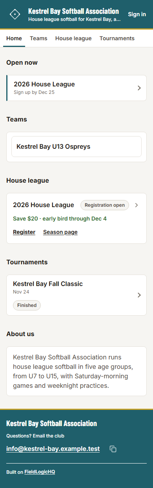
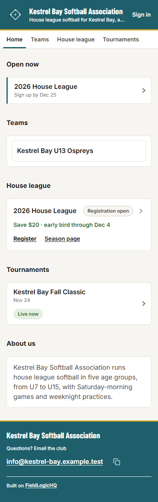
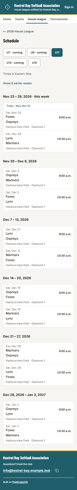
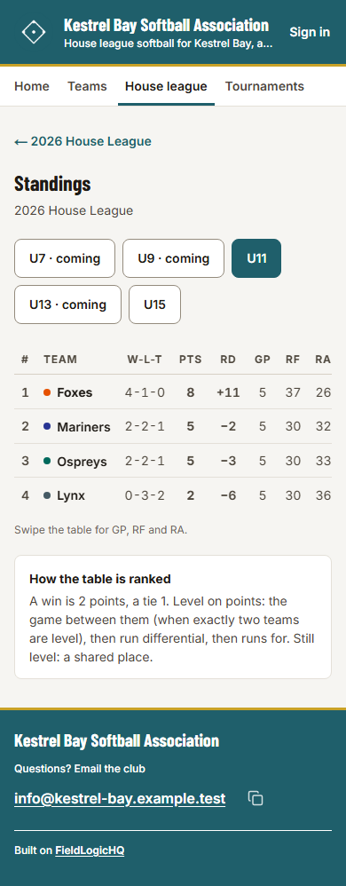
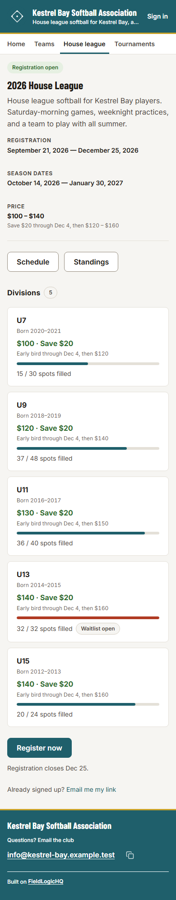
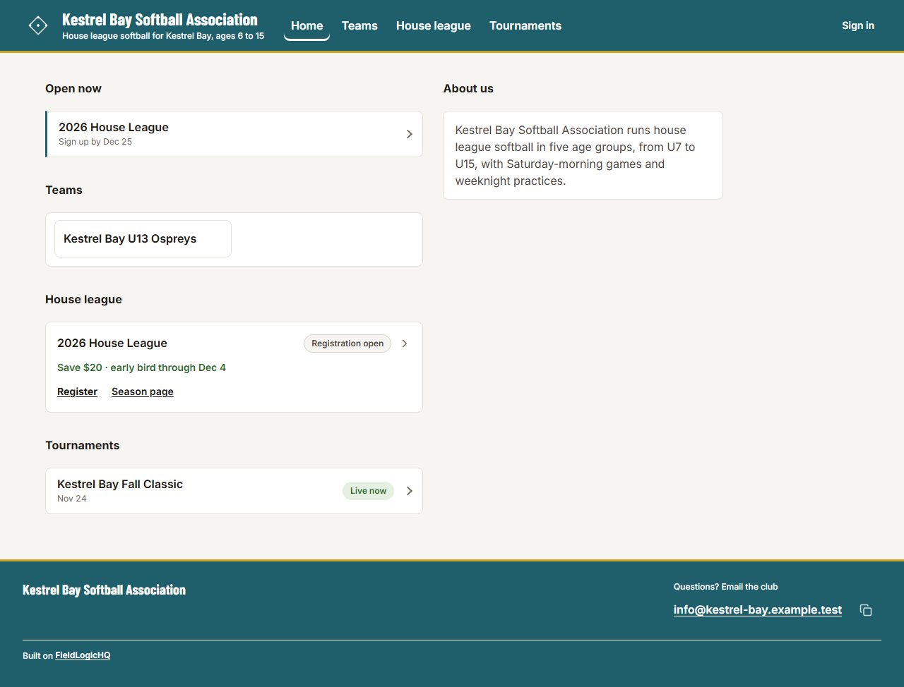

<title>Club Website — Stage 1 Game Day</title>
<meta name="claude:viewport-fit-sides" content="cover">
<link rel="preconnect" href="https://fonts.googleapis.com">
<link rel="stylesheet" href="https://fonts.googleapis.com/css2?family=Barlow+Condensed:wght@600;700&family=Inter:wght@400;500;600;700&display=swap">
<style>
/* Layout: sticky numbered tabs, one decision per tab; each tab = before capture | after frame (true size) | why. */
:root{
  --doc-bg:#E9ECEF; --doc-panel:#FFFFFF; --doc-fg:#1B2027; --doc-soft:#4A5562; --doc-line:#CDD3DA; --doc-accent:#2D5B8A;
  --new:#1F7A3A; --new-bg:#DDF2E3; --res:#7A4E00; --res-bg:#F7E9CC; --same:#5A6470; --same-bg:#E4E8EC; --askc:#5B2D8A; --ask-bg:#ECE2F7;
  --f-display:"Barlow Condensed","Arial Narrow",Arial,sans-serif; --f-text:Inter,"Segoe UI",system-ui,sans-serif;
}
@media (prefers-color-scheme: dark){:root:not([data-theme="light"]){--doc-bg:#14181D;--doc-panel:#1D232A;--doc-fg:#E6EAEE;--doc-soft:#A8B2BD;--doc-line:#343D47;--doc-accent:#8DB7E2;--new:#7FD69A;--new-bg:#1B3A25;--res:#F0C36B;--res-bg:#3B2E12;--same:#B4BDC7;--same-bg:#2A3139;--askc:#CBA8F0;--ask-bg:#33244A;color-scheme:dark}}
:root[data-theme="dark"]{--doc-bg:#14181D;--doc-panel:#1D232A;--doc-fg:#E6EAEE;--doc-soft:#A8B2BD;--doc-line:#343D47;--doc-accent:#8DB7E2;--new:#7FD69A;--new-bg:#1B3A25;--res:#F0C36B;--res-bg:#3B2E12;--same:#B4BDC7;--same-bg:#2A3139;--askc:#CBA8F0;--ask-bg:#33244A;color-scheme:dark}
*{box-sizing:border-box}
body{background:var(--doc-bg);color:var(--doc-fg);font:14px/1.5 var(--f-text);margin:0}
body::before{content:"";position:fixed;inset:0 0 auto;height:env(safe-area-inset-top,0px);z-index:10;background:var(--doc-panel)}
.wrap{padding-left:max(16px,env(safe-area-inset-left,0px));padding-right:max(16px,env(safe-area-inset-right,0px))}
header.top{background:var(--doc-panel);border-bottom:1px solid var(--doc-line)}
header.top .wrap{padding-block:16px 10px}
header.top h1{font:700 26px/1.1 var(--f-display);letter-spacing:.01em;margin:0;text-wrap:balance}
header.top p{margin:4px 0 0;color:var(--doc-soft);max-width:900px}
nav.tabs{position:sticky;top:env(safe-area-inset-top,0px);z-index:5;background:var(--doc-panel);border-bottom:1px solid var(--doc-line)}
nav.tabs .wrap{display:flex;gap:2px;overflow-x:auto;scrollbar-width:thin}
nav.tabs button{flex:0 0 auto;border:0;background:none;color:var(--doc-soft);font:600 13px var(--f-text);padding:12px 10px;border-bottom:3px solid transparent;cursor:pointer;white-space:nowrap}
nav.tabs button[aria-selected="true"]{color:var(--doc-fg);border-bottom-color:var(--doc-accent)}
button:focus-visible{outline:2px solid var(--doc-accent);outline-offset:2px}
.viewrow{display:flex;align-items:center;gap:10px;padding-block:10px;flex-wrap:wrap}
.viewrow .lbl{font-weight:600;color:var(--doc-soft)}
.track{display:inline-flex;background:#fff;border:1px solid var(--doc-line);border-radius:9px;padding:3px}
.track button{border:0;background:none;padding:6px 12px;border-radius:6px;font:600 13px var(--f-text);color:#4A5562;cursor:pointer}
.track button[aria-pressed="true"]{background:#E3EAD2;color:#2F3A12}
main .wrap{padding-block:8px 60px}
section.tab{display:none}
section.tab.on{display:block}
h2.t{font:700 22px/1.15 var(--f-display);margin:12px 0 4px}
h3.t{font:700 17px/1.2 var(--f-text);margin:22px 0 6px}
p.lead{max-width:880px;margin:4px 0 12px;color:var(--doc-soft)}
.note{max-width:880px}
.note li{margin:4px 0}
.callout{background:var(--doc-panel);border:1px solid var(--doc-line);border-left:4px solid var(--doc-accent);border-radius:0 8px 8px 0;padding:10px 14px;max-width:900px;margin:10px 0}
.callout.warn{border-left-color:var(--res)}
.sub{display:flex;gap:6px;flex-wrap:wrap;margin:10px 0 14px}
.sub button{border:1px solid var(--doc-line);background:var(--doc-panel);color:var(--doc-fg);border-radius:20px;padding:6px 14px;font:600 13px var(--f-text);cursor:pointer}
.sub button[aria-pressed="true"]{background:var(--doc-fg);color:var(--doc-panel)}
.state{display:none}.state.on{display:block}
.pair{display:flex;gap:28px;flex-wrap:wrap;align-items:flex-start}
.spec{display:flex;flex-direction:column;gap:6px;min-width:0}
.cap{font:700 11px/1.3 var(--f-text);letter-spacing:.07em;text-transform:uppercase;color:var(--doc-soft);max-width:392px}
.cap b{color:var(--doc-fg)}
.why{flex:1 1 280px;min-width:260px;max-width:430px}
.why h4{margin:0 0 6px;font:700 15px var(--f-text)}
.why ul{padding-left:18px;margin:6px 0}
.why li{margin:5px 0}
.shot{width:392px;max-width:100%;max-height:1300px;overflow:auto;border:1px solid var(--doc-line);border-radius:14px;background:#fff}
.shot img{display:block;width:390px;max-width:none}
.shot.wide{width:100%;max-width:1282px}
.shot.wide img{width:1280px}
.scrollx{overflow-x:auto;max-width:100%;border:1px solid var(--doc-line);border-radius:10px}
.mk{display:inline-flex;align-items:center;border:0;border-radius:4px;font:700 10px/1 var(--f-text);letter-spacing:.05em;text-transform:uppercase;padding:4px 6px;cursor:pointer;vertical-align:middle;white-space:nowrap}
.mk.new{background:var(--new-bg);color:var(--new)}
.mk.res{background:var(--res-bg);color:var(--res)}
.mk.same{background:var(--same-bg);color:var(--same)}
.askm{display:inline-flex;border:0;border-radius:4px;background:var(--ask-bg);color:var(--askc);font:700 10px/1 var(--f-text);padding:4px 6px;cursor:pointer;vertical-align:middle;letter-spacing:.03em}
.fr .mk,.fr .askm,.win .mk,.tv .mk{position:absolute;z-index:3}
.fr .mk.new,.win .mk.new,.tv .mk.new{background:#DDF2E3;color:#1F7A3A}.fr .mk.res{background:#F7E9CC;color:#7A4E00}.fr .mk.same{background:#E4E8EC;color:#5A6470}.fr .askm{background:#ECE2F7;color:#5B2D8A}
.tr{top:-12px;right:0}.tr2{top:-12px;right:84px}
.diffmode .fr .dim > *:not(.mk):not(.askm){opacity:.16}
.diffmode .fr .dim.solo{opacity:.16}
/* ===== club site specimen (a picture of a light page: fixed light colours on purpose) ===== */
.fr{--ground:#F6F5F2;--card:#fff;--text:#1F1B16;--soft:#4E473D;--dim:#6F675B;--line:#E4E0D8;--line2:#D6D0C4;--ok:#2C6A2A;--okbg:#E6F0E2;--warn:#8A5300;--bad:#A3261C;
  --fill:#1E5F6A;--onfill:#fff;--ink:#1E5F6A;--edge:#1E5F6A;--accent:#D9A521;
  background:var(--ground);color:var(--text);font:16px/1.4 var(--f-text);border:1px solid #9AA4AE;border-radius:14px;overflow:hidden;width:392px;max-width:100%;position:relative;flex:0 0 auto}
.fr.milton{--fill:#4A176C;--ink:#4A176C;--edge:#4A176C;--accent:#9C9C9C}
.fr.pc{width:1282px;max-width:none;border-radius:8px}
.fr *{box-sizing:border-box}
.fr .fold{position:absolute;left:0;right:0;top:843px;border-top:2px dashed #C2410C;z-index:4;pointer-events:none}
.fr .fold span{position:absolute;right:6px;top:-20px;background:#C2410C;color:#fff;font:700 10px var(--f-text);padding:2px 6px;border-radius:3px}
.fr .bar{background:var(--fill);color:var(--onfill);min-height:72px;display:flex;align-items:center;gap:12px;padding:0 16px;border-bottom:3px solid var(--accent);position:relative}
.fr .logo{width:44px;height:44px;border-radius:10px;border:2px solid rgba(255,255,255,.55);display:grid;place-items:center;font:700 14px var(--f-display);flex:0 0 auto}
.fr .cn{font:700 20px/1.05 var(--f-display);letter-spacing:.01em}
.fr .tg{font:600 12px/1.3 var(--f-text);white-space:nowrap;overflow:hidden;text-overflow:ellipsis;max-width:220px}
.fr .si{margin-left:auto;font:600 14px var(--f-text)}
.fr .tabrow{background:#fff;display:flex;gap:4px;padding:0 8px;border-bottom:1px solid var(--line);overflow:hidden;white-space:nowrap;position:relative}
.fr .tabrow span{font:600 14px var(--f-text);padding:14px 8px 11px;color:var(--soft);border-bottom:3px solid transparent}
.fr .tabrow span.on{color:var(--text);border-bottom-color:var(--fill)}
.fr .pg{padding:16px;display:flex;flex-direction:column;gap:24px}
.fr .sec{display:flex;flex-direction:column;gap:10px;position:relative}
.fr h5{font:700 16px/1.2 var(--f-text);margin:0;display:flex;align-items:baseline;gap:8px}
.fr h5 .lk{margin-left:auto;font:600 14px var(--f-text);color:var(--ink)}
.fr h5 .dt{font:400 14px var(--f-text);color:var(--soft)}
.fr .h1{font:700 24px/1.1 var(--f-display);margin:0}
.fr .meta{font-size:14px;color:var(--soft)}
.fr .list{background:var(--card);border:1px solid var(--line);border-radius:8px;overflow:hidden;position:relative}
.fr .row{min-height:60px;padding:12px 40px 12px 16px;border-top:1px solid var(--line);position:relative;display:flex;flex-direction:column;justify-content:center;gap:2px}
.fr .list > :first-child{border-top:0}
.fr .row.chev::after{content:"";position:absolute;right:16px;top:50%;width:9px;height:9px;border-right:2px solid var(--dim);border-top:2px solid var(--dim);transform:translateY(-50%) rotate(45deg)}
.fr .rt{font:600 16px/1.25 var(--f-text)}
.fr .rs{font-size:12px;color:var(--dim)}
.fr .door{border-left:3px solid var(--edge);border-radius:0 8px 8px 0}
.fr .lb{padding:8px 16px;border-top:1px solid var(--line);background:var(--ground);font:700 12px/1.2 var(--f-text);text-transform:uppercase;letter-spacing:.06em;color:var(--soft)}
.fr .chip{display:inline-block;font:600 12px/1 var(--f-text);border-radius:20px;padding:5px 9px;white-space:nowrap;vertical-align:middle}
.fr .chip.ok{background:var(--okbg);color:var(--ok)}
.fr .chip.n{background:var(--ground);color:var(--soft);border:1px solid var(--line)}
.fr .pill{padding:4px 8px;border:1px solid var(--line);border-radius:20px;background:var(--ground);color:var(--soft);white-space:nowrap;font:600 12px/1.2 var(--f-text);align-self:start}
.fr .pill.live{color:var(--ok);background:var(--okbg);border-color:var(--okbg)}
.fr .pill.warn{color:var(--warn)}
.fr .gw{border-top:1px solid var(--line);background:var(--card)}
.fr .gw.live{box-shadow:inset 3px 0 0 var(--ok)}
.fr .g{padding:12px 16px}
.fr .gh{display:grid;grid-template-columns:minmax(0,1fr) auto;gap:8px}
.fr .tm{font:600 14px/1.25 var(--f-text);font-variant-numeric:tabular-nums}
.fr .cx{font:400 14px/1.25 var(--f-text);color:var(--dim)}
.fr .tms{display:flex;flex-direction:column;gap:4px;margin-top:6px}
.fr .sd{display:grid;grid-template-columns:minmax(0,1fr) auto;gap:8px;align-items:baseline;font:500 16px/1.3 var(--f-text)}
.fr .sd b{font:700 20px/1 var(--f-display);font-variant-numeric:tabular-nums}
.fr .sd.w span{font-weight:700}
.fr .sd.l,.fr .sd.l b{color:var(--soft)}
.fr .sd.own span{font-weight:700}
.fr .gpl{margin-top:6px;font-size:14px;color:var(--dim)}
.fr .why2{margin-top:4px;font:600 14px var(--f-text);color:var(--warn)}
.fr .ps{display:flex;justify-content:space-between;align-items:center;gap:12px;min-height:56px;padding:6px 6px 6px 16px;border-top:1px solid var(--line);color:var(--dim);font-size:14px}
.fr .ico{width:44px;height:44px;display:grid;place-items:center;color:var(--ink);font-size:18px;flex:0 0 auto}
.fr .btn{height:44px;border-radius:8px;font:600 16px var(--f-text);display:inline-flex;align-items:center;justify-content:center;padding:0 16px;border:1px solid var(--line2);background:#fff;color:var(--text)}
.fr .btn.p{background:var(--fill);color:var(--onfill);border-color:var(--fill)}
.fr .btn.o{border-color:var(--ink);color:var(--ink)}
.fr .ul{color:var(--text);text-decoration:underline;font:600 14px var(--f-text)}
.fr .card{background:var(--card);border:1px solid var(--line);border-radius:8px;padding:14px 16px}
.fr .notice{background:#fff;border:1px solid var(--line);border-left:3px solid var(--warn);border-radius:0 8px 8px 0;padding:12px 14px;margin:12px 16px 4px;position:relative;display:flex;flex-direction:column;gap:4px}
.fr .notice b{font:700 16px/1.25 var(--f-text)}
.fr .notice .d{font-size:14px;color:var(--soft)}
.fr .notice .s{font-size:12px;color:var(--dim)}
.fr .tiles{display:grid;grid-template-columns:1fr 1fr;gap:8px}
.fr .tile{min-height:52px;padding:16px 12px;border:1px solid var(--line);border-radius:8px;background:#fff;font:600 16px/1.25 var(--f-text)}
.fr .sp{display:grid;grid-template-columns:1fr 1fr;gap:8px}
.fr .spt{height:64px;border:1px solid var(--line);border-radius:8px;background:#fff;display:grid;place-items:center;text-align:center;font:700 14px/1.25 var(--f-text);color:var(--soft);padding:4px 8px}
.fr .sby{font-size:12px;color:var(--dim);display:flex;align-items:center;gap:8px;position:relative}
.fr .sby .lg{border:1px solid var(--line);border-radius:8px;padding:4px 8px;font:600 12px var(--f-text);color:var(--soft);background:#fff}
.fr .foot{background:var(--fill);color:var(--onfill);border-top:3px solid var(--accent);padding:20px 16px;display:flex;flex-direction:column;gap:8px}
.fr .foot small{font-size:12px}
.fr .ph{background:repeating-linear-gradient(135deg,#E7E2D8 0 10px,#EFEBE3 10px 20px);border:1px dashed var(--line2);border-radius:8px;display:grid;place-items:center;text-align:center;color:var(--soft);font:600 14px/1.35 var(--f-text);padding:16px}
.fr .photo{border-radius:8px;overflow:hidden;position:relative;background:linear-gradient(160deg,#6E8B5A,#A9B98A 55%,#D8C9A0);aspect-ratio:3/2}
.fr .pin{position:absolute;inset:0;display:grid;place-items:center;font:600 12px var(--f-text);color:#fff;text-shadow:0 1px 2px rgba(0,0,0,.5)}
.fr .post{display:grid;grid-template-columns:1fr 84px;gap:2px 12px;padding:12px 16px;border-top:1px solid var(--line)}
.fr .post .th{grid-row:1/4;grid-column:2;border-radius:8px;background:linear-gradient(160deg,#5D7F8C,#9FB9B4);aspect-ratio:1}
.fr .post .dt{font-size:12px;color:var(--dim)}
.fr .post .hd{font:600 16px/1.3 var(--f-text)}
.fr .post .bd{font-size:14px;color:var(--soft)}
.fr .post.nopic{grid-template-columns:1fr}
.fr .tsch{display:grid;grid-template-columns:96px 1fr auto;gap:2px 10px;padding:12px 6px 12px 16px;border-top:1px solid var(--line);align-items:center}
.fr .tsch .d1{font:600 14px var(--f-text)}.fr .tsch .d2{font-size:12px;color:var(--dim)}
.fr .tsch .ti{font:600 16px var(--f-text)}.fr .tsch .pl2{font-size:14px;color:var(--dim)}
.fr .tsch .r{font:700 14px var(--f-text);font-variant-numeric:tabular-nums;padding-right:10px}
.fr .tsch .r.win{color:var(--ok)}
.fr .tsch.next{box-shadow:inset 3px 0 0 var(--edge)}
.fr .st{width:100%;border-collapse:collapse;font-size:14px;background:#fff}
.fr .st th{font:700 12px var(--f-text);text-transform:uppercase;letter-spacing:.05em;color:var(--soft);text-align:left;padding:10px 8px;border-bottom:1px solid var(--line)}
.fr .st td{padding:15px 8px;border-top:1px solid var(--line);font-variant-numeric:tabular-nums}
.fr .seg{display:flex;gap:8px;flex-wrap:wrap}
.fr .seg span{height:44px;min-width:56px;padding:0 14px;border:1px solid var(--line2);border-radius:8px;background:#fff;display:grid;place-items:center;font:600 14px var(--f-text)}
.fr .seg span.on{background:var(--fill);color:var(--onfill);border-color:var(--fill)}
.fr .two{display:grid;grid-template-columns:540px 392px;gap:28px;align-items:start}
.fr .g1{display:grid;grid-template-columns:104px minmax(0,1fr) 104px;gap:12px;padding:12px 16px;align-items:center}
.fr .g1 .mid{display:grid;grid-template-columns:1fr auto 14px auto 1fr;gap:8px;align-items:baseline;font:500 16px var(--f-text)}
.fr .g1 .mid b{font:700 20px var(--f-display)}
.fr .g1 .rgt{display:flex;flex-direction:column;align-items:flex-end;gap:2px}
/* admin windows (light specimens) */
.win{background:#fff;color:#1F1B16;border:1px solid #C9CFBE;border-radius:8px;width:520px;max-width:100%;font:14px/1.45 var(--f-text);position:relative;flex:0 0 auto}
.win.w8{width:800px}
.win.w39{width:390px}
.win .wh{display:flex;align-items:center;padding:18px 24px 6px;font:700 18px var(--f-text)}
.win .wh .x{margin-left:auto;font:400 22px var(--f-text);color:#6F675B}
.win .wb{padding:6px 24px 18px;display:flex;flex-direction:column;gap:12px}
.win .wl{font:600 14px var(--f-text);color:#4E473D;margin-bottom:4px}
.win .in{border:1px solid #CFC8BA;border-radius:8px;min-height:44px;padding:0 12px;display:flex;align-items:center;color:#1F1B16;background:#fff}
.win .in.ta{min-height:76px;align-items:flex-start;padding-top:10px}
.win .in.dd::after{content:"▾";margin-left:auto;padding-left:8px;color:#6F675B}
.win .opt{display:flex;gap:10px;align-items:flex-start;padding:4px 0}
.win .rb{width:18px;height:18px;border-radius:50%;border:2px solid #8C8475;flex:0 0 auto;margin-top:2px}
.win .rb.on{border:6px solid #3F5512}
.win .cb{width:18px;height:18px;border-radius:4px;border:2px solid #8C8475;flex:0 0 auto;margin-top:2px}
.win .cb.on{background:#3F5512;border-color:#3F5512;box-shadow:inset 0 0 0 3px #fff}
.win .grp{border:1px solid #E4E0D8;border-radius:8px}
.win .gr{padding:10px 12px;border-top:1px solid #E4E0D8;display:flex;gap:10px;align-items:flex-start}
.win .gr:first-child{border-top:0}
.win .gr .n{margin-left:auto;color:#6F675B;white-space:nowrap}
.win .gh{background:#F6F5F2;font:700 12px var(--f-text);letter-spacing:.05em;text-transform:uppercase;color:#4E473D}
.win .sm{font-size:12px;color:#6F675B}
.win .wf{display:flex;align-items:center;gap:10px;border-top:1px solid #E4E0D8;padding:14px 24px;flex-wrap:wrap}
.win .wf .s{font-size:12px;color:#4E473D;flex:1 1 140px}
.win .b{height:44px;border-radius:8px;border:1px solid #CFC8BA;background:#fff;padding:0 14px;font:600 14px var(--f-text);display:inline-flex;align-items:center}
.win .b.lime{background:#C7E36B;border-color:#A9C64A;color:#1F2A05}
.win table{width:100%;border-collapse:collapse;font-size:14px}
.win th{text-align:left;font:700 12px var(--f-text);text-transform:uppercase;letter-spacing:.05em;color:#4E473D;padding:8px;border-bottom:1px solid #E4E0D8}
.win td{padding:10px 8px;border-top:1px solid #E4E0D8;font-variant-numeric:tabular-nums}
.win .pl{display:inline-block;font:600 12px var(--f-text);border-radius:20px;padding:3px 8px}
.win .pl.ok{background:#E6F0E2;color:#2C6A2A}.win .pl.w{background:#F6EBD7;color:#8A5300}.win .pl.b{background:#F8E3E0;color:#A3261C}
.toast{background:#1F1B16;color:#fff;border-radius:8px;padding:12px 14px;font:14px/1.45 var(--f-text);width:390px;max-width:100%}
/* big board: the club's fill as ground, white cards, everything at TV scale (x2) */
.tv{width:1280px;height:720px;background:#1E5F6A;color:#fff;border-radius:10px;overflow:hidden;display:grid;grid-template-rows:96px 1fr 120px;font-family:var(--f-text);position:relative}
.tv .tb{display:flex;align-items:center;gap:20px;padding:0 40px;border-bottom:6px solid #D9A521}
.tv .tb .cn{font:700 40px var(--f-display)}
.tv .tb .clk{margin-left:auto;font:700 44px var(--f-display);font-variant-numeric:tabular-nums}
.tv .body{display:grid;grid-template-columns:1.35fr 1fr;gap:28px;padding:26px 40px}
.tv h6{font:700 20px var(--f-text);letter-spacing:.08em;text-transform:uppercase;margin:0 0 12px}
.tv .lg{background:#fff;color:#1F1B16;border-radius:16px;padding:14px 20px;margin-bottom:12px;box-shadow:inset 6px 0 0 #2C6A2A}
.tv .lg .m{font:500 18px var(--f-text);color:#6F675B}
.tv .lg .t{display:flex;justify-content:space-between;font:600 30px/1.25 var(--f-text)}
.tv .lg .t b{font:700 36px var(--f-display);font-variant-numeric:tabular-nums}
.tv .nxl{background:#fff;color:#1F1B16;border-radius:16px;padding:4px 20px}
.tv .nx{display:grid;grid-template-columns:130px 1fr;gap:2px 16px;font:500 24px/1.3 var(--f-text);padding:12px 0;border-top:2px solid #E4E0D8}
.tv .nx:first-child{border-top:0}
.tv .nx .w{font-weight:700}
.tv .nx .p{grid-column:2;font-size:18px;color:#6F675B}
.tv .ft{display:flex;align-items:center;gap:24px;padding:0 40px;border-top:2px solid rgba(255,255,255,.35)}
.tv .fs{background:#fff;color:#8A5300;border-radius:16px;padding:12px 18px;font:700 22px var(--f-text);box-shadow:inset 6px 0 0 #8A5300}
.tv .spn{margin-left:auto;display:flex;align-items:center;gap:14px;font:600 20px var(--f-text)}
.tv .spn .t{width:220px;height:84px;background:#fff;color:#4E473D;border-radius:16px;display:grid;place-items:center;font:700 20px/1.2 var(--f-text);text-align:center}
table.doc{border-collapse:collapse;width:100%;max-width:1100px;background:var(--doc-panel);border:1px solid var(--doc-line);font-size:13px}
table.doc th{text-align:left;padding:9px 10px;background:var(--same-bg);color:var(--doc-fg);font:700 12px var(--f-text);text-transform:uppercase;letter-spacing:.04em}
table.doc td{padding:9px 10px;border-top:1px solid var(--doc-line);vertical-align:top}
.ask{background:var(--doc-panel);border:1px solid var(--doc-line);border-radius:10px;padding:14px 16px;margin:12px 0;max-width:980px}
.ask.hl{outline:3px solid var(--askc)}
.ask h4{margin:0 0 4px;font:700 16px var(--f-text)}
.ask .grp-h{font:700 12px var(--f-text);text-transform:uppercase;letter-spacing:.06em;color:var(--doc-soft)}
.ask .q{color:var(--doc-soft);margin:0 0 8px}
.ask label{display:flex;gap:8px;align-items:flex-start;padding:5px 0;cursor:pointer}
.ask label input{margin-top:3px}
.ask .rec{font-weight:700;color:var(--new)}
.ask .notrec{color:var(--doc-soft)}
.ask textarea{width:100%;min-height:44px;margin-top:6px;border:1px solid var(--doc-line);border-radius:6px;background:var(--doc-bg);color:var(--doc-fg);font:13px var(--f-text);padding:6px 8px}
.ask .rides{font-size:13px;color:var(--doc-soft);margin-top:6px}
h3.ag{font:700 13px var(--f-text);letter-spacing:.07em;text-transform:uppercase;color:var(--doc-soft);margin:24px 0 4px}
#paste{width:100%;min-height:200px;font:12px/1.45 ui-monospace,Consolas,monospace;border:1px solid var(--doc-line);border-radius:8px;background:var(--doc-panel);color:var(--doc-fg);padding:10px}
.copy{border:1px solid var(--doc-line);background:var(--doc-panel);color:var(--doc-fg);border-radius:8px;padding:8px 14px;font:600 13px var(--f-text);cursor:pointer}
.mil{background:var(--res-bg);color:var(--res);border-radius:8px;padding:10px 14px;font-weight:600;max-width:980px}
dialog{border:1px solid var(--doc-line);border-radius:12px;background:var(--doc-panel);color:var(--doc-fg);max-width:520px;width:calc(100% - 32px);padding:18px 20px}
dialog::backdrop{background:rgba(0,0,0,.45)}
dialog h4{margin:0 0 8px;font:700 16px var(--f-text)}
dialog .k{font:700 11px var(--f-text);letter-spacing:.06em;text-transform:uppercase;color:var(--doc-soft);margin-top:10px}
dialog button.close{float:right;border:0;background:none;color:var(--doc-soft);font-size:22px;cursor:pointer;line-height:1}
dialog .go{margin-top:12px}
/* idea 11: the club's feed */
.thumbs{display:grid;grid-template-columns:repeat(5,1fr);gap:6px}
.th2{aspect-ratio:1;border-radius:6px;background:linear-gradient(160deg,#6E8B5A,#A9B98A 55%,#D8C9A0);position:relative}
.th2.v2{background:linear-gradient(160deg,#5D7F8C,#9FB9B4)}
.th2.v3{background:linear-gradient(160deg,#7A5C8C,#B9A4C4)}
.win .askm{position:absolute;z-index:3}
.win.w39 .wf .s{flex:1 1 100%}
.win.w39 .wf .s + .b{margin-left:auto}
.win td.nw{white-space:nowrap}
.th2.add{background:#fff;border:1px dashed #CFC8BA;display:grid;place-items:center;color:#6F675B;font:600 24px/1 var(--f-text)}
.th2.on{outline:2px solid #3F5512;outline-offset:1px}
.th2.on::after{content:"✓";position:absolute;right:4px;top:4px;width:20px;height:20px;border-radius:4px;background:#3F5512;color:#fff;display:grid;place-items:center;font:700 12px/1 var(--f-text)}
.th2.off::after{content:"";position:absolute;right:4px;top:4px;width:20px;height:20px;border-radius:4px;border:2px solid #fff;background:rgba(255,255,255,.4)}
.win .lnk{min-height:44px;display:flex;align-items:center;font:600 14px/1.3 var(--f-text)}
.win.w39 .track button{min-height:44px;padding:0 16px}
.fr .l44{font-size:14px;line-height:1.4;color:var(--soft)}
.fr .l44 .ul{display:inline-flex;align-items:center;min-height:44px}
.win .pl.n{background:#F6F5F2;color:#4E473D}
.win .pl{white-space:nowrap}
.fr .dots{display:flex;gap:6px;justify-content:center}
.fr .dots i{width:6px;height:6px;border-radius:50%;background:var(--line2)}
.fr .dots i.on{background:var(--text)}
.fr .igh{border:1px solid var(--line);border-radius:8px;background:#fff;padding:16px;display:flex;flex-direction:column;gap:10px;align-items:flex-start}
.fr .rad{display:flex;align-items:center;gap:10px;min-height:44px;font:500 16px/1.3 var(--f-text)}
.fr .rad i{width:20px;height:20px;border-radius:50%;border:2px solid #8C8475;flex:0 0 auto}
.fr .ig{border:1px dashed #9AA4AE;border-radius:4px;background:#fff;color:#262626;font:14px/1.3 var(--f-text);overflow:hidden}
.fr .igt{display:flex;align-items:center;gap:10px;padding:10px 12px}
.fr .igt i{width:32px;height:32px;border-radius:50%;background:#C9CFD6;flex:0 0 auto}
.fr .igt span{margin-left:auto;background:#0095F6;color:#fff;border-radius:6px;padding:6px 10px;font:600 12px/1 var(--f-text)}
.fr .igp{aspect-ratio:1;background:linear-gradient(160deg,#8A7A5A,#C9B98A 55%,#E4D8B8);position:relative}
.fr .igb{padding:10px 12px;display:flex;flex-direction:column;gap:8px}
.fr .igb .vm{color:#0095F6;font-weight:600;border-bottom:1px solid #EFEFEF;padding-bottom:8px}
.fr .igb .ic{display:flex;gap:12px}
.fr .igb .ic i{width:22px;height:22px;border:2px solid #262626;border-radius:50%}
.fr .igb .lk{font-weight:600}
.fr .igb .cm{color:#8E8E8E;border-top:1px solid #EFEFEF;padding-top:8px}
.legend{display:flex;gap:8px;flex-wrap:wrap;align-items:center;font-size:12px;color:var(--doc-soft)}
@media (prefers-reduced-motion:reduce){*{transition:none!important;animation:none!important}}
/* Added for the events page */
.fr .askm.tr2{right:122px}
.tabstrip{background:#fff;display:flex;gap:4px;padding:0 8px;border-bottom:1px solid #D8DDE3;overflow:hidden;white-space:nowrap;width:390px;max-width:100%;box-sizing:border-box}
.tabstrip span{font:600 14px var(--f-text);padding:14px 8px 11px;color:#55606C;border-bottom:3px solid transparent}
.tabstrip span.on{color:#1B2027;border-bottom-color:#1E5F6A}
.sm2{font-size:12px;color:var(--doc-soft);margin-bottom:4px}
.plain{max-width:880px;padding-left:20px}.plain li{margin:8px 0}
p.note{max-width:880px;color:var(--doc-soft)}

/* Stage 1 additions */
.fr .row.lv{box-shadow:inset 3px 0 0 var(--ok)}
.fr .ico svg{display:block}
.fr .ico .dl{display:none}
.fr.pc .ico{width:auto;height:36px;border:1px solid var(--line2);border-radius:8px;padding:0 12px;display:inline-flex;align-items:center;gap:6px;font:600 14px var(--f-text);background:#fff;margin-right:10px}
.fr.pc .ico .dl{display:inline}
.fr .g1p{text-align:center;font-size:14px;color:var(--dim);margin-top:4px}
.fr .g1 .rgt .cx{text-align:right}
.fr .hr2{padding:12px 16px;border-top:1px solid var(--line);display:flex;flex-direction:column;gap:2px}
.fr .hr2.live{box-shadow:inset 3px 0 0 var(--ok)}
.fr .hr2 .gh{align-items:start}
.fr .card.chev{position:relative;padding-right:40px}
.fr .card.chev::after{content:"";position:absolute;right:16px;top:50%;width:9px;height:9px;border-right:2px solid var(--dim);border-top:2px solid var(--dim);transform:translateY(-50%) rotate(45deg)}
.fr.kb .logo{border:0}
.fr .st2 th,.fr .st2 td{padding:10px 6px}
.fr .st2 .dot{display:inline-block;width:10px;height:10px;border-radius:50%;margin-right:8px;vertical-align:middle}
.fr .ghost{margin:0;padding:12px 16px;border-top:1px solid var(--line);border:2px dashed #C2410C;border-radius:0 0 8px 8px;color:#9A3412;font:600 14px/1.35 var(--f-text);background:#FFF7ED}
.fr .fold{border-top:0;height:0}
.fr .fold::before,.fr .fold::after{content:"";position:absolute;top:-1px;width:14px;border-top:3px solid #C2410C}
.fr .fold::before{left:0}.fr .fold::after{right:0}
.fr .fold span{right:16px;top:-9px;opacity:.92}
section.tab,.state{scroll-margin-top:56px}
.fr .nos{margin-top:6px;font-size:14px;color:var(--dim)}
.fr .row.dn::after{transform:translateY(-75%) rotate(135deg)}
.fr .row.up::after{transform:translateY(-25%) rotate(-45deg)}
.fr .pill.bad{color:var(--bad)}
.fr .lb2{padding:8px 16px;background:#EEF4F5;color:var(--ink);font:700 12px/1.2 var(--f-text);letter-spacing:.02em}
.fr .hr{display:grid;grid-template-columns:minmax(0,1fr) auto;gap:12px;padding:12px 16px;border-top:1px solid var(--line);align-items:center}
.fr .list > .hr:first-child,.fr .list > .lb2:first-child{border-top:0}
.fr .hr.live{box-shadow:inset 3px 0 0 var(--ok)}
.fr .hr-d{font-size:14px;color:var(--dim)}
.fr .hr-n{font:500 16px/1.35 var(--f-text)}
.fr .hr-n.w{font-weight:700}.fr .hr-n.l{color:var(--soft)}
.fr .hr-x{font-size:14px;color:var(--dim);margin-top:2px}
.fr .hr-p{font-size:14px;color:var(--dim);margin-top:4px}
.fr .hr-r{display:flex;flex-direction:column;align-items:flex-end;gap:6px}
.fr .hr-t{font:600 14px var(--f-text);font-variant-numeric:tabular-nums}
.fr .hr-s{display:flex;flex-direction:column;gap:2px;align-items:flex-end}
.fr .hr-s b{font:700 20px/1.35 var(--f-display);font-variant-numeric:tabular-nums}
.fr .hr-s b.l{color:var(--soft)}
.fr .chips{display:flex;flex-wrap:wrap;gap:8px}
.fr .chips span{height:44px;padding:0 14px;border:1px solid var(--line2);border-radius:20px;background:#fff;display:inline-flex;align-items:center;font:600 14px var(--f-text);white-space:nowrap}
.fr .chips span.on{background:var(--fill);color:var(--onfill);border-color:var(--fill)}
.rks{display:grid;grid-template-columns:repeat(auto-fill,minmax(392px,1fr));gap:22px 28px;max-width:1260px}
.rk{display:flex;flex-direction:column;gap:6px;min-width:0}
.rkh{display:flex;align-items:center;gap:8px;font-size:15px}
.rkb .fr .pg{padding:0}
.rkw{margin:8px 0 0;color:var(--doc-soft);font-size:13px;max-width:392px}
.flow{display:grid;grid-template-columns:repeat(3,minmax(0,1fr));gap:12px;max-width:1100px}
.flow > div{background:var(--doc-panel);border:1px solid var(--doc-line);border-radius:8px;padding:12px 14px;min-width:0}
.flow h5{margin:0 0 6px;font:700 14px var(--f-text)}
.flow p{margin:4px 0;font-size:13px;color:var(--doc-soft)}
.flow code,.doc code{font-size:12px;word-break:break-word}
.arrow{max-width:1100px;text-align:center;color:var(--doc-soft);font:700 18px var(--f-text);padding:6px 0}
.one{max-width:1100px;background:var(--new-bg);color:var(--doc-fg);border:1px solid var(--doc-line);border-radius:8px;padding:12px 14px}
.one b{color:var(--new)}
@media (max-width:760px){.flow{grid-template-columns:1fr}}
</style>

<header class="top"><div class="wrap">
  <h1>Club Website Enhancements · Stage 1 · game day on the club home</h1>
  <p>On a game day the club home gains one part under Open now: "Today" (or "Latest results" the day after) with the club's games across house league, public rep teams and its tournaments, built from scores already entered. House league pages start refreshing as tournament pages do. This page finishes the frame Stage 0 drew (its tab 2) at true size: every state of the home, every kind of row, the house league pages, the failure states, the one games read traced to each program's own rule, and eleven asks. Kestrel Bay on dev is the club, on Saturday, Nov 28 at 10:15 a.m.; Milton Bats is the busy Saturday. The after frames show what Stage 1 itself ships: no News tab or News part (Stage 4) and no sponsor line (Stage 5); each is noted where it will sit. Click a tag to read it; purple tags jump to their ask. Nothing here is built or ruled. Written 2026-11-25.</p>
</div></header>
<nav class="tabs" aria-label="Sections"><div class="wrap" role="tablist">
  <button role="tab" data-tab="walk">1 · What the walk found</button>
  <button role="tab" data-tab="home">2 · The home</button>
  <button role="tab" data-tab="rows">3 · Each row</button>
  <button role="tab" data-tab="chips">4 · Filter chips</button>
  <button role="tab" data-tab="league">5 · House league pages</button>
  <button role="tab" data-tab="fail">6 · Empty and failure</button>
  <button role="tab" data-tab="read">7 · The one games read</button>
  <button role="tab" data-tab="build">8 · The build's shape</button>
  <button role="tab" data-tab="asks">9 · Asks</button>
</div></nav>

<main><div class="wrap">
<div class="viewrow" id="viewrow">
  <span class="lbl">View</span>
  <span class="track" role="group" aria-label="View"><button id="v-all" aria-pressed="true">Everything</button><button id="v-diff" aria-pressed="false">Show only what differs</button></span>
  <span class="legend"><span class="mk new">New</span><span class="mk res">Restyled</span><span class="mk same">Unchanged</span><span class="askm">G1</span> an ask · S1 = Club website Stage 1 · <span class="askm">E6</span> a club events ask (E1–E9 ruled A on 2026-11-25; E10 not yet ruled) · <span style="border-top:2px dashed #C2410C;width:28px;display:inline-block"></span> end of a phone's first screen (844 px)</span>
</div>

<!-- ============ 1 WALK ============ -->
<section class="tab" id="walk">
<h2 class="t">What the walk found</h2>
<p class="lead">Captured at true size (390 and 1280, one pixel per pixel). Stage 0's captures from 2026-11-24 are reused for the home on a game day and for Milton: no change has touched the club home, the house league pages or the game row since. New today: Kestrel's home on a Wednesday with nothing on, and its 2026 House League season, schedule and standings on U11, two Saturdays played.</p>
<ol class="plain">
  <li><b>On a game day the home does not change today.</b> With two Fall Classic games live, the only difference is a green "Live now" chip on the tournament card, which reads the dates, not the games: it says "Live now" between games too. The home reads no games at all.</li>
  <li><b>House league's publish rule is in pieces.</b> "Published division" and "as families last heard it" are one shared step, but "not a draft season" is repeated by each page. Stage 1's first build task makes them one house league rule that the schedule, the season page, the standings, the champs page and the home all ask. Until then the home would be one more page that could show a draft season's games.</li>
  <li><b>Rep games will be thin on the home.</b> A rep team's games are public only when its coach sets the team to Public. On dev, 2 of 71 rep teams are; Kestrel's and Milton's are all "Families". Milton said they want "scores and schedules for all rep teams" (the meeting note); Stage 1 gives them that only team by team (ask <button class="askm" data-ask="G10" style="position:static">G10</button>).</li>
  <li><b>"Live" means three different things.</b> Tournaments decide live from the clock. House league has no live state: a game is coming or final. Rep has the coach's running score from Game-Day Mode (ask <button class="askm" data-ask="G7" style="position:static">G7</button>).</li>
  <li><b>A live defect, found on the way.</b> While a coach keeps the running score, the public rep team page and the family schedule show it as a finished tie ("T 4–2") until End game. It is sent to the plan's findings list; the home reads the same scores, so it is fixed first.</li>
  <li><b>No club has a time zone of its own.</b> Every club reads Eastern times and an Eastern "today". Stage 1 uses the shared time helpers, so it follows when the product gains a club time zone. Sent to the plan's findings list for any club west of Ontario.</li>
  <li><b>Nothing is cached and nothing guards the staff calendar.</b> Every club page is built fresh for every visitor (about 17 to 21 database reads for the home). A whole-page refresh every 30 seconds would repeat all of them; a games-only check costs 3 to 4. No test stops a public page from reading the staff calendar, which has none of the publish rules. Stage 1 adds that test.</li>
  <li><b>A busy Saturday on dev is tournament-shaped.</b> The busiest mixed day is Milton's Nov 21: one tournament (one row under A3) and 3 house league games. No dev club has more than 6 house league games in a day. The busy Saturday on tab 2 is drawn from what a Milton-sized club runs (about ten divisions on two parks), not from dev.</li>
</ol>
<h3 class="t">The captures</h3>
<div class="pair">
  <div class="spec"><span class="cap">Kestrel · quiet day · Wed, Nov 25 (new)</span><div class="shot"></div></div>
  <div class="spec"><span class="cap">Kestrel · game day · Fall Classic live (Stage 0)</span><div class="shot"></div></div>
  <div class="spec"><span class="cap">Milton on staging (Stage 0)</span><div class="shot"></div></div>
</div>
<div class="pair" style="margin-top:20px">
  <div class="spec"><span class="cap">2026 House League schedule · U11 (new)</span><div class="shot"></div></div>
  <div class="spec"><span class="cap">Standings · U11 (new)</span><div class="shot"></div></div>
  <div class="spec"><span class="cap">Season page (new)</span><div class="shot"></div></div>
</div>
<p class="note">The schedule already marks "Today · Wed, Nov 25" in its week list, says "Times in Eastern time." and folds past weeks behind "Show 6 earlier weeks". Nothing on it refreshes. Its bare address opens on U7, a division whose schedule is not out yet ("U7's schedule is coming"), so these captures pick U11. Milton's three answers to the owner's questions are not in yet (Stage 0's feedback slot).</p>
</section>

<!-- ============ 2 HOME ============ -->
<section class="tab" id="home">
<h2 class="t">The home in each state Stage 1 changes</h2>
<p class="lead">The order is ruled (A1): the notice slot, Open now (two rows, then "N more"), the games part, News, then Teams · House league · Tournaments · About · Sponsors, each absent when it has nothing. Stage 1 builds the games part and Open now's cap. The dashed line is the end of a phone's first screen: on a game day with four things open, the first live game starts above it.</p>
<div class="sub" role="group" aria-label="Home state">
  <button data-state="h-quiet" aria-pressed="true">Quiet day</button>
  <button data-state="h-hl" aria-pressed="false">House league only</button>
  <button data-state="h-hlrep" aria-pressed="false">+ a public rep team</button>
  <button data-state="h-all" aria-pressed="false">+ a running tournament</button>
  <button data-state="h-early" aria-pressed="false">Early morning</button>
  <button data-state="h-evening" aria-pressed="false">Evening</button>
  <button data-state="h-rain" aria-pressed="false">Rained out</button>
  <button data-state="h-norep" aria-pressed="false">No public rep teams</button>
  <button data-state="h-after" aria-pressed="false">The day after</button>
  <button data-state="h-busy" aria-pressed="false">Busy Saturday</button>
  <button data-state="h-pc" aria-pressed="false">Computer</button>
</div>
<div class="state on" id="h-quiet"><div class="pair">
<div class="spec"><span class="cap">Before · <b>Wed, Nov 25</b>, captured today</span><div class="shot"></div></div>
<div class="spec"><span class="cap">After · the same day</span><div class="fr kb"><div class="fold"><span>first screen ends</span></div>
<div class="bar dim"><div class="logo"><svg width="26" height="26" viewBox="0 0 24 24" fill="none" stroke="currentColor" stroke-width="2" aria-hidden="true"><rect x="6" y="6" width="12" height="12" transform="rotate(45 12 12)"/><circle cx="12" cy="12" r="1.5" fill="currentColor"/></svg></div><div><div class="cn">Kestrel Bay Softball Association</div><div class="tg">House league softball for Kestrel Bay, and more</div></div><div class="si">Sign in</div></div>
<div class="tabrow dim"><span class="on">Home</span><span>Teams</span><span>House league</span><span>Tournaments</span></div>
<div class="pg"><div class="sec dim"><h5>Open now</h5><div class="list door"><div class="row chev" style="position:relative"><div class="rt">2026 House League</div><div class="rs">Sign up by Dec 25</div></div></div></div><div class="sec dim"><button class="mk same tr" data-note="Teams as shipped. Team structure's Stage 0 decides this section's layout; Stage 1 does not touch it.">Unchanged</button><h5>Teams</h5><div class="card"><div class="tile">Kestrel Bay U13 Ospreys</div></div></div><div class="sec dim"><h5>House league</h5><div class="card chev" style="display:flex;flex-direction:column;gap:8px"><div style="display:flex;align-items:center;gap:8px"><b style="font-size:16px">2026 House League</b><span class="chip n">Registration open</span></div><div style="color:var(--ok);font:600 14px var(--f-text)">Save $20 · early bird through Dec 4</div><div style="display:flex;gap:20px"><span class="ul">Register</span><span class="ul">Season page</span></div></div></div><div class="sec dim"><h5>Tournaments</h5><div class="card chev" style="display:flex;flex-direction:column;gap:6px;position:relative"><b style="font-size:16px">Kestrel Bay Fall Classic</b><span class="meta" style="font-size:12px">Nov 24</span><span><span class="chip n">Finished</span></span></div></div><div class="sec dim"><h5>About us</h5><div class="card" style="color:var(--soft)">Kestrel Bay Softball Association runs house league softball in five age groups, from U7 to U15, with Saturday-morning games and weeknight practices.</div></div></div>
<div class="foot dim"><div class="cn">Kestrel Bay Softball Association</div><small>Questions? Email the club</small><small>Built on FieldLogicHQ</small></div></div></div>
<div class="why"><h4>A quiet day does not change</h4><ul><li>No games today and no finals in the last two days, so the games part is absent and the page is exactly today's (ask <button class="askm" data-ask="G1" style="position:static">G1</button>).</li><li>One thing open, so Open now's cap does not show.</li><li><i>Not recommended:</i> a "This week" band (G1 · C). It is the club-wide schedule page the rules leave out, put on the home.</li></ul></div></div></div>
<div class="state" id="h-hl"><div class="pair">
<div class="spec"><span class="cap">Before · today's home has no games part</span><div class="shot"></div></div>
<div class="spec"><span class="cap">After · <b>Sat, Nov 28, 10:15 a.m.</b> · house league only, four things open</span><div class="fr kb"><div class="fold"><span>first screen ends</span></div>
<div class="bar dim"><div class="logo"><svg width="26" height="26" viewBox="0 0 24 24" fill="none" stroke="currentColor" stroke-width="2" aria-hidden="true"><rect x="6" y="6" width="12" height="12" transform="rotate(45 12 12)"/><circle cx="12" cy="12" r="1.5" fill="currentColor"/></svg></div><div><div class="cn">Kestrel Bay Softball Association</div><div class="tg">House league softball for Kestrel Bay, and more</div></div><div class="si">Sign in</div></div>
<div class="tabrow dim"><span class="on">Home</span><span>Teams</span><span>House league</span><span>Tournaments</span></div>
<div class="pg"><div class="sec"><button class="mk res tr" data-note="Open now as ruled in Stage 0 (A1): at most two rows, nearest deadline first, then one row that says how many more and names them, opening the rest in place like the games part's own &quot;N more&quot; rows (chevron down). Stage 1 builds the cap, because the games part sits right under it and the first live game must start inside a phone's first screen with four things open. Today Open now has no cap. The clinic is a club event (Board Ready Stage 5); its row here follows E1's recommendation.">Restyled · S1</button><button class="askm tr2" data-ask="E1">E1</button><h5>Open now</h5><div class="list door"><div class="row chev" style="position:relative"><div class="rt">2026 House League</div><div class="rs">Sign up by Dec 25</div></div><div class="row chev" style="position:relative"><div class="rt">2027 tryouts</div><div class="rs">2 teams · Sun, Jan 10 · Lakeshore Dome</div></div><div class="row chev dn" style="position:relative"><div class="rt">2 more open now</div><div class="rs">Winter skills clinic · 2027 U15 tryouts</div></div></div></div><div class="sec"><button class="mk new tr" data-note="The games part (Stage 0 A1 and A2): titled &quot;Today&quot; with the date when the club has games today, &quot;Latest results&quot; when it has none today but results in the last two days (ask G2), and absent otherwise (ask G1). Rows come from each program's own public rule through one read (tab 7). Grouped by time, never by program: Live now, Later today, Latest results, then Not being played today. Inside a band: a tournament or champs day first (it holds the most games), then games by start time; at the same time, house league by division from the youngest, then rep; then by place. Four rows a band, then a row that opens the rest in place, in the same order (ask G4). No filter chips (ask G3). It checks for changes every 30 seconds from half an hour before the day's first game until the last game's window ends (ask G6). No page for one game: a house league row opens the season's schedule on that division and day, a rep row opens the team's page, a tournament row opens its Overview.">New · S1</button><h5>Today <span class="dt">Sat, Nov 28</span></h5><div class="list"><div class="lb">Live now</div><div class="gw live" style="position:relative"><div class="g"><div class="gh"><div><div class="tm">9:00 a.m.</div><div class="cx">House league · U11</div></div></div><div class="tms"><div class="sd"><span>Foxes</span><b></b></div><div class="sd"><span>Ospreys</span><b></b></div></div><div class="nos">Score after the game</div></div><div class="ps"><span>Harbourview Park · Diamond 1</span><span class="ico" aria-label="Directions"><svg width="18" height="18" viewBox="0 0 24 24" fill="none" stroke="currentColor" stroke-width="2" stroke-linecap="round" stroke-linejoin="round" aria-hidden="true"><polygon points="3 11 22 2 13 21 11 13 3 11"/></svg><span class="dl">Directions</span></span></div></div><div class="gw live" style="position:relative"><div class="g"><div class="gh"><div><div class="tm">9:00 a.m.</div><div class="cx">House league · U15</div></div></div><div class="tms"><div class="sd"><span>Wolves</span><b></b></div><div class="sd"><span>Badgers</span><b></b></div></div><div class="nos">Score after the game</div></div><div class="ps"><span>Lions Park · Diamond 1</span><span class="ico" aria-label="Directions"><svg width="18" height="18" viewBox="0 0 24 24" fill="none" stroke="currentColor" stroke-width="2" stroke-linecap="round" stroke-linejoin="round" aria-hidden="true"><polygon points="3 11 22 2 13 21 11 13 3 11"/></svg><span class="dl">Directions</span></span></div></div><div class="lb">Later today</div><div class="gw" style="position:relative"><div class="g"><div class="gh"><div><div class="tm">10:30 a.m.</div><div class="cx">House league · U11</div></div></div><div class="tms"><div class="sd"><span>Lynx</span><b></b></div><div class="sd"><span>Mariners</span><b></b></div></div><div class="gpl">Harbourview Park · Diamond 1</div></div></div><div class="gw" style="position:relative"><div class="g"><div class="gh"><div><div class="tm">11:00 a.m.</div><div class="cx">House league · U15</div></div></div><div class="tms"><div class="sd"><span>Storm</span><b></b></div><div class="sd"><span>Thunder</span><b></b></div></div><div class="gpl">Lions Park · Diamond 1</div></div></div><div class="lb">Latest results</div><div class="gw" style="position:relative"><div class="g"><div class="gh"><div><div class="tm">7:30 a.m.</div><div class="cx">House league · U15</div></div><span class="pill ">Final</span></div><div class="tms"><div class="sd w"><span>Comets</span><b>7</b></div><div class="sd l"><span>Rockets</span><b>5</b></div></div></div></div></div></div><div class="sec dim"><button class="mk same tr" data-note="Teams as shipped. Team structure's Stage 0 decides this section's layout; Stage 1 does not touch it.">Unchanged</button><h5>Teams</h5><div class="card"><div class="tile">Kestrel Bay U13 Ospreys</div></div></div><div class="sec dim"><h5>House league</h5><div class="card chev" style="display:flex;flex-direction:column;gap:8px"><div style="display:flex;align-items:center;gap:8px"><b style="font-size:16px">2026 House League</b><span class="chip n">Registration open</span></div><div style="color:var(--ok);font:600 14px var(--f-text)">Save $20 · early bird through Dec 4</div><div style="display:flex;gap:20px"><span class="ul">Register</span><span class="ul">Season page</span></div></div></div><div class="sec dim"><h5>About us</h5><div class="card" style="color:var(--soft)">Kestrel Bay Softball Association runs house league softball in five age groups, from U7 to U15, with Saturday-morning games and weeknight practices.</div></div></div>
<div class="foot dim"><div class="cn">Kestrel Bay Softball Association</div><small>Questions? Email the club</small><small>Built on FieldLogicHQ</small></div></div></div>
<div class="why"><h4>House league only</h4><ul><li>A U11 and a U15 game started at 9:00 a.m. They read "Live now" with "Score after the game": house league has no score until the coach enters the final (<button class="askm" data-ask="G7" style="position:static">G7</button>). Only U11 and U15 have published schedules in Kestrel's 2026 season, so only they appear; U7, U9 and U13 are "coming" and are left out.</li><li>Rows are grouped by time, never by program. The program is the first word of each row's second line.</li><li>The 7:30 a.m. U15 game is final, so it is in Latest results.</li><li>The first live game starts well above the dashed line with four things open (measured: about 440 px on this frame; between 394 and 522 px on every phone frame on this tab).</li></ul></div></div></div>
<div class="state" id="h-hlrep"><div class="pair">
<div class="spec"><span class="cap">Before</span><div class="shot"></div></div>
<div class="spec"><span class="cap">After · house league and one public rep team</span><div class="fr kb"><div class="fold"><span>first screen ends</span></div>
<div class="bar dim"><div class="logo"><svg width="26" height="26" viewBox="0 0 24 24" fill="none" stroke="currentColor" stroke-width="2" aria-hidden="true"><rect x="6" y="6" width="12" height="12" transform="rotate(45 12 12)"/><circle cx="12" cy="12" r="1.5" fill="currentColor"/></svg></div><div><div class="cn">Kestrel Bay Softball Association</div><div class="tg">House league softball for Kestrel Bay, and more</div></div><div class="si">Sign in</div></div>
<div class="tabrow dim"><span class="on">Home</span><span>Teams</span><span>House league</span><span>Tournaments</span></div>
<div class="pg"><div class="sec"><button class="mk res tr" data-note="Open now as ruled in Stage 0 (A1): at most two rows, nearest deadline first, then one row that says how many more and names them, opening the rest in place like the games part's own &quot;N more&quot; rows (chevron down). Stage 1 builds the cap, because the games part sits right under it and the first live game must start inside a phone's first screen with four things open. Today Open now has no cap. The clinic is a club event (Board Ready Stage 5); its row here follows E1's recommendation.">Restyled · S1</button><button class="askm tr2" data-ask="E1">E1</button><h5>Open now</h5><div class="list door"><div class="row chev" style="position:relative"><div class="rt">2026 House League</div><div class="rs">Sign up by Dec 25</div></div><div class="row chev" style="position:relative"><div class="rt">2027 tryouts</div><div class="rs">2 teams · Sun, Jan 10 · Lakeshore Dome</div></div><div class="row chev dn" style="position:relative"><div class="rt">2 more open now</div><div class="rs">Winter skills clinic · 2027 U15 tryouts</div></div></div></div><div class="sec"><button class="mk new tr" data-note="The games part (Stage 0 A1 and A2): titled &quot;Today&quot; with the date when the club has games today, &quot;Latest results&quot; when it has none today but results in the last two days (ask G2), and absent otherwise (ask G1). Rows come from each program's own public rule through one read (tab 7). Grouped by time, never by program: Live now, Later today, Latest results, then Not being played today. Inside a band: a tournament or champs day first (it holds the most games), then games by start time; at the same time, house league by division from the youngest, then rep; then by place. Four rows a band, then a row that opens the rest in place, in the same order (ask G4). No filter chips (ask G3). It checks for changes every 30 seconds from half an hour before the day's first game until the last game's window ends (ask G6). No page for one game: a house league row opens the season's schedule on that division and day, a rep row opens the team's page, a tournament row opens its Overview.">New · S1</button><h5>Today <span class="dt">Sat, Nov 28</span></h5><div class="list"><div class="lb">Live now</div><div class="gw live" style="position:relative"><div class="g"><div class="gh"><div><div class="tm">9:00 a.m.</div><div class="cx">House league · U11</div></div></div><div class="tms"><div class="sd"><span>Foxes</span><b></b></div><div class="sd"><span>Ospreys</span><b></b></div></div><div class="nos">Score after the game</div></div><div class="ps"><span>Harbourview Park · Diamond 1</span><span class="ico" aria-label="Directions"><svg width="18" height="18" viewBox="0 0 24 24" fill="none" stroke="currentColor" stroke-width="2" stroke-linecap="round" stroke-linejoin="round" aria-hidden="true"><polygon points="3 11 22 2 13 21 11 13 3 11"/></svg><span class="dl">Directions</span></span></div></div><div class="gw live" style="position:relative"><div class="g"><div class="gh"><div><div class="tm">9:00 a.m.</div><div class="cx">House league · U15</div></div></div><div class="tms"><div class="sd"><span>Wolves</span><b></b></div><div class="sd"><span>Badgers</span><b></b></div></div><div class="nos">Score after the game</div></div><div class="ps"><span>Lions Park · Diamond 1</span><span class="ico" aria-label="Directions"><svg width="18" height="18" viewBox="0 0 24 24" fill="none" stroke="currentColor" stroke-width="2" stroke-linecap="round" stroke-linejoin="round" aria-hidden="true"><polygon points="3 11 22 2 13 21 11 13 3 11"/></svg><span class="dl">Directions</span></span></div></div><div class="gw live" style="position:relative"><div class="g"><div class="gh"><div><div class="tm">9:30 a.m.</div><div class="cx">Rep</div></div></div><div class="tms"><div class="sd own"><span>Kestrel Bay U13 Ospreys</span><b>2</b></div><div class="sd"><span>Marlow Heights</span><b>1</b></div></div></div><div class="ps"><span>Harbourview Park · Diamond 2</span><span class="ico" aria-label="Directions"><svg width="18" height="18" viewBox="0 0 24 24" fill="none" stroke="currentColor" stroke-width="2" stroke-linecap="round" stroke-linejoin="round" aria-hidden="true"><polygon points="3 11 22 2 13 21 11 13 3 11"/></svg><span class="dl">Directions</span></span></div></div><div class="lb">Later today</div><div class="gw" style="position:relative"><div class="g"><div class="gh"><div><div class="tm">10:30 a.m.</div><div class="cx">House league · U11</div></div></div><div class="tms"><div class="sd"><span>Lynx</span><b></b></div><div class="sd"><span>Mariners</span><b></b></div></div><div class="gpl">Harbourview Park · Diamond 1</div></div></div><div class="gw" style="position:relative"><div class="g"><div class="gh"><div><div class="tm">11:00 a.m.</div><div class="cx">House league · U15</div></div></div><div class="tms"><div class="sd"><span>Storm</span><b></b></div><div class="sd"><span>Thunder</span><b></b></div></div><div class="gpl">Lions Park · Diamond 1</div></div></div><div class="lb">Latest results</div><div class="gw" style="position:relative"><div class="g"><div class="gh"><div><div class="tm">7:30 a.m.</div><div class="cx">House league · U15</div></div><span class="pill ">Final</span></div><div class="tms"><div class="sd w"><span>Comets</span><b>7</b></div><div class="sd l"><span>Rockets</span><b>5</b></div></div></div></div><div class="gw" style="position:relative"><div class="g"><div class="gh"><div><div class="tm">Thu, Nov 26</div><div class="cx">Rep</div></div><span class="pill ">Final</span></div><div class="tms"><div class="sd w own"><span>Kestrel Bay U13 Ospreys</span><b>5</b></div><div class="sd l"><span>Whitecliff</span><b>3</b></div></div></div></div></div></div><div class="sec dim"><button class="mk same tr" data-note="Teams as shipped. Team structure's Stage 0 decides this section's layout; Stage 1 does not touch it.">Unchanged</button><h5>Teams</h5><div class="card"><div class="tile">Kestrel Bay U13 Ospreys</div></div></div><div class="sec dim"><h5>House league</h5><div class="card chev" style="display:flex;flex-direction:column;gap:8px"><div style="display:flex;align-items:center;gap:8px"><b style="font-size:16px">2026 House League</b><span class="chip n">Registration open</span></div><div style="color:var(--ok);font:600 14px var(--f-text)">Save $20 · early bird through Dec 4</div><div style="display:flex;gap:20px"><span class="ul">Register</span><span class="ul">Season page</span></div></div></div><div class="sec dim"><h5>About us</h5><div class="card" style="color:var(--soft)">Kestrel Bay Softball Association runs house league softball in five age groups, from U7 to U15, with Saturday-morning games and weeknight practices.</div></div></div>
<div class="foot dim"><div class="cn">Kestrel Bay Softball Association</div><small>Questions? Email the club</small><small>Built on FieldLogicHQ</small></div></div></div>
<div class="why"><h4>With a public rep team</h4><ul><li>The U13 Ospreys row shows the coach's running score, 2–1, because the team is set to Public. Today Kestrel's Ospreys are "Families" and would not appear (<button class="askm" data-ask="G10" style="position:static">G10</button>).</li><li>The club's team is first and bold, as on a team's own page.</li><li>It sorts by its 9:30 start, after the two 9:00 games. At the same time, house league comes first by division, then rep. Nothing groups it apart.</li></ul></div></div></div>
<div class="state" id="h-all"><div class="pair">
<div class="spec"><span class="cap">Before · Kestrel game day, Fall Classic live (Stage 0)</span><div class="shot"></div></div>
<div class="spec"><span class="cap">After · house league, a public rep team and the Winter Classic</span><div class="fr kb"><div class="fold"><span>first screen ends</span></div>
<div class="bar dim"><div class="logo"><svg width="26" height="26" viewBox="0 0 24 24" fill="none" stroke="currentColor" stroke-width="2" aria-hidden="true"><rect x="6" y="6" width="12" height="12" transform="rotate(45 12 12)"/><circle cx="12" cy="12" r="1.5" fill="currentColor"/></svg></div><div><div class="cn">Kestrel Bay Softball Association</div><div class="tg">House league softball for Kestrel Bay, and more</div></div><div class="si">Sign in</div></div>
<div class="tabrow dim"><span class="on">Home</span><span>Teams</span><span>House league</span><span>Tournaments</span></div>
<div class="pg"><div class="sec"><button class="mk res tr" data-note="Open now as ruled in Stage 0 (A1): at most two rows, nearest deadline first, then one row that says how many more and names them, opening the rest in place like the games part's own &quot;N more&quot; rows (chevron down). Stage 1 builds the cap, because the games part sits right under it and the first live game must start inside a phone's first screen with four things open. Today Open now has no cap. The clinic is a club event (Board Ready Stage 5); its row here follows E1's recommendation.">Restyled · S1</button><button class="askm tr2" data-ask="E1">E1</button><h5>Open now</h5><div class="list door"><div class="row chev" style="position:relative"><div class="rt">2026 House League</div><div class="rs">Sign up by Dec 25</div></div><div class="row chev" style="position:relative"><div class="rt">2027 tryouts</div><div class="rs">2 teams · Sun, Jan 10 · Lakeshore Dome</div></div><div class="row chev dn" style="position:relative"><div class="rt">2 more open now</div><div class="rs">Winter skills clinic · 2027 U15 tryouts</div></div></div></div><div class="sec"><button class="mk new tr" data-note="The games part (Stage 0 A1 and A2): titled &quot;Today&quot; with the date when the club has games today, &quot;Latest results&quot; when it has none today but results in the last two days (ask G2), and absent otherwise (ask G1). Rows come from each program's own public rule through one read (tab 7). Grouped by time, never by program: Live now, Later today, Latest results, then Not being played today. Inside a band: a tournament or champs day first (it holds the most games), then games by start time; at the same time, house league by division from the youngest, then rep; then by place. Four rows a band, then a row that opens the rest in place, in the same order (ask G4). No filter chips (ask G3). It checks for changes every 30 seconds from half an hour before the day's first game until the last game's window ends (ask G6). No page for one game: a house league row opens the season's schedule on that division and day, a rep row opens the team's page, a tournament row opens its Overview.">New · S1</button><h5>Today <span class="dt">Sat, Nov 28</span></h5><div class="list"><div class="lb">Live now</div><div class="row chev lv" style="position:relative"><button class="mk new" style="top:-9px;right:40px" data-note="A running tournament is ONE row (ruled A3), never its games: 22 games would bury everything else. It sits first in Live now while any of its games is on, first in Later today before its first game (&quot;22 games today · first at 8:00 a.m.&quot;), and first in Latest results once its last game of the day is over (&quot;22 games today · all final&quot;, or &quot;20 of 22 games final&quot; when some were called off). Its counts are the tournament Overview's own: games live now and games today (pieces that exist; the build joins them in one place). It opens the tournament's Overview. Its games are left out of Today's own rows, and every tournament game copied onto a rep team's schedule is left out of the home, so no game shows twice or stale. A tournament whose organizer has switched its Schedule page off has no row at all.">New · S1</button><div class="rt">Kestrel Bay Winter Classic</div><div class="rs">6 live now · 22 games today</div></div><div class="gw live" style="position:relative"><div class="g"><div class="gh"><div><div class="tm">9:00 a.m.</div><div class="cx">House league · U11</div></div></div><div class="tms"><div class="sd"><span>Foxes</span><b></b></div><div class="sd"><span>Ospreys</span><b></b></div></div><div class="nos">Score after the game</div></div><div class="ps"><span>Harbourview Park · Diamond 1</span><span class="ico" aria-label="Directions"><svg width="18" height="18" viewBox="0 0 24 24" fill="none" stroke="currentColor" stroke-width="2" stroke-linecap="round" stroke-linejoin="round" aria-hidden="true"><polygon points="3 11 22 2 13 21 11 13 3 11"/></svg><span class="dl">Directions</span></span></div></div><div class="gw live" style="position:relative"><div class="g"><div class="gh"><div><div class="tm">9:00 a.m.</div><div class="cx">House league · U15</div></div></div><div class="tms"><div class="sd"><span>Wolves</span><b></b></div><div class="sd"><span>Badgers</span><b></b></div></div><div class="nos">Score after the game</div></div><div class="ps"><span>Lions Park · Diamond 1</span><span class="ico" aria-label="Directions"><svg width="18" height="18" viewBox="0 0 24 24" fill="none" stroke="currentColor" stroke-width="2" stroke-linecap="round" stroke-linejoin="round" aria-hidden="true"><polygon points="3 11 22 2 13 21 11 13 3 11"/></svg><span class="dl">Directions</span></span></div></div><div class="gw live" style="position:relative"><div class="g"><div class="gh"><div><div class="tm">9:30 a.m.</div><div class="cx">Rep</div></div></div><div class="tms"><div class="sd own"><span>Kestrel Bay U13 Ospreys</span><b>2</b></div><div class="sd"><span>Marlow Heights</span><b>1</b></div></div></div><div class="ps"><span>Harbourview Park · Diamond 2</span><span class="ico" aria-label="Directions"><svg width="18" height="18" viewBox="0 0 24 24" fill="none" stroke="currentColor" stroke-width="2" stroke-linecap="round" stroke-linejoin="round" aria-hidden="true"><polygon points="3 11 22 2 13 21 11 13 3 11"/></svg><span class="dl">Directions</span></span></div></div><div class="lb">Later today</div><div class="gw" style="position:relative"><div class="g"><div class="gh"><div><div class="tm">10:30 a.m.</div><div class="cx">House league · U11</div></div></div><div class="tms"><div class="sd"><span>Lynx</span><b></b></div><div class="sd"><span>Mariners</span><b></b></div></div><div class="gpl">Harbourview Park · Diamond 1</div></div></div><div class="gw" style="position:relative"><div class="g"><div class="gh"><div><div class="tm">11:00 a.m.</div><div class="cx">House league · U15</div></div></div><div class="tms"><div class="sd"><span>Storm</span><b></b></div><div class="sd"><span>Thunder</span><b></b></div></div><div class="gpl">Lions Park · Diamond 1</div></div></div><div class="lb">Latest results</div><div class="gw" style="position:relative"><div class="g"><div class="gh"><div><div class="tm">7:30 a.m.</div><div class="cx">House league · U15</div></div><span class="pill ">Final</span></div><div class="tms"><div class="sd w"><span>Comets</span><b>7</b></div><div class="sd l"><span>Rockets</span><b>5</b></div></div></div></div><div class="gw" style="position:relative"><div class="g"><div class="gh"><div><div class="tm">Thu, Nov 26</div><div class="cx">Rep</div></div><span class="pill ">Final</span></div><div class="tms"><div class="sd w own"><span>Kestrel Bay U13 Ospreys</span><b>5</b></div><div class="sd l"><span>Whitecliff</span><b>3</b></div></div></div></div></div></div><div class="sec dim"><button class="mk same tr" data-note="Teams as shipped. Team structure's Stage 0 decides this section's layout; Stage 1 does not touch it.">Unchanged</button><h5>Teams</h5><div class="card"><div class="tile">Kestrel Bay U13 Ospreys</div></div></div><div class="sec dim"><h5>House league</h5><div class="card chev" style="display:flex;flex-direction:column;gap:8px"><div style="display:flex;align-items:center;gap:8px"><b style="font-size:16px">2026 House League</b><span class="chip n">Registration open</span></div><div style="color:var(--ok);font:600 14px var(--f-text)">Save $20 · early bird through Dec 4</div><div style="display:flex;gap:20px"><span class="ul">Register</span><span class="ul">Season page</span></div></div></div><div class="sec"><button class="mk res tr" data-note="The Tournaments card today says &quot;Live now&quot; all day from the dates alone, between games and before the first one (it reads no game). With Today saying &quot;Live now&quot; once, on the row, the card says &quot;Games today&quot; while the tournament has games today (ask G9). Otherwise unchanged.">Restyled · S1</button><button class="askm tr2" data-ask="G9">G9</button><h5>Tournaments</h5><div class="card chev" style="display:flex;flex-direction:column;gap:6px;position:relative"><b style="font-size:16px">Kestrel Bay Winter Classic</b><span class="meta" style="font-size:12px">Sat, Nov 28 – Sun, Nov 29</span><span><span class="chip n">Games today</span></span></div></div><div class="sec dim"><h5>About us</h5><div class="card" style="color:var(--soft)">Kestrel Bay Softball Association runs house league softball in five age groups, from U7 to U15, with Saturday-morning games and weeknight practices.</div></div></div>
<div class="foot dim"><div class="cn">Kestrel Bay Softball Association</div><small>Questions? Email the club</small><small>Built on FieldLogicHQ</small></div></div></div>
<div class="why"><h4>With a running tournament</h4><ul><li>The Winter Classic is one row (A3), first in Live now, with its two counts, opening its Overview. Its 22 games are not rows here.</li><li>The Tournaments card further down says "Games today" instead of "Live now": the live word is said once, on the row (<button class="askm" data-ask="G9" style="position:static">G9</button>).</li><li>Today's before: the only sign of game day is the green chip on the fourth card down, below the first screen.</li></ul></div></div></div>
<div class="state" id="h-early"><div class="pair">
<div class="spec"><span class="cap">Before</span><div class="shot"></div></div>
<div class="spec"><span class="cap">After · <b>Sat, Nov 28, 7:45 a.m.</b> · nothing started yet</span><div class="fr kb"><div class="fold"><span>first screen ends</span></div>
<div class="bar dim"><div class="logo"><svg width="26" height="26" viewBox="0 0 24 24" fill="none" stroke="currentColor" stroke-width="2" aria-hidden="true"><rect x="6" y="6" width="12" height="12" transform="rotate(45 12 12)"/><circle cx="12" cy="12" r="1.5" fill="currentColor"/></svg></div><div><div class="cn">Kestrel Bay Softball Association</div><div class="tg">House league softball for Kestrel Bay, and more</div></div><div class="si">Sign in</div></div>
<div class="tabrow dim"><span class="on">Home</span><span>Teams</span><span>House league</span><span>Tournaments</span></div>
<div class="pg"><div class="sec"><button class="mk res tr" data-note="Open now as ruled in Stage 0 (A1): at most two rows, nearest deadline first, then one row that says how many more and names them, opening the rest in place like the games part's own &quot;N more&quot; rows (chevron down). Stage 1 builds the cap, because the games part sits right under it and the first live game must start inside a phone's first screen with four things open. Today Open now has no cap. The clinic is a club event (Board Ready Stage 5); its row here follows E1's recommendation.">Restyled · S1</button><button class="askm tr2" data-ask="E1">E1</button><h5>Open now</h5><div class="list door"><div class="row chev" style="position:relative"><div class="rt">2026 House League</div><div class="rs">Sign up by Dec 25</div></div><div class="row chev" style="position:relative"><div class="rt">2027 tryouts</div><div class="rs">2 teams · Sun, Jan 10 · Lakeshore Dome</div></div><div class="row chev dn" style="position:relative"><div class="rt">2 more open now</div><div class="rs">Winter skills clinic · 2027 U15 tryouts</div></div></div></div><div class="sec"><button class="mk new tr" data-note="The games part (Stage 0 A1 and A2): titled &quot;Today&quot; with the date when the club has games today, &quot;Latest results&quot; when it has none today but results in the last two days (ask G2), and absent otherwise (ask G1). Rows come from each program's own public rule through one read (tab 7). Grouped by time, never by program: Live now, Later today, Latest results, then Not being played today. Inside a band: a tournament or champs day first (it holds the most games), then games by start time; at the same time, house league by division from the youngest, then rep; then by place. Four rows a band, then a row that opens the rest in place, in the same order (ask G4). No filter chips (ask G3). It checks for changes every 30 seconds from half an hour before the day's first game until the last game's window ends (ask G6). No page for one game: a house league row opens the season's schedule on that division and day, a rep row opens the team's page, a tournament row opens its Overview.">New · S1</button><h5>Today <span class="dt">Sat, Nov 28</span></h5><div class="list"><div class="lb">Later today</div><div class="row chev" style="position:relative"><div class="rt">Kestrel Bay Winter Classic</div><div class="rs">22 games today · first at 8:00 a.m.</div></div><div class="gw" style="position:relative"><div class="g"><div class="gh"><div><div class="tm">9:00 a.m.</div><div class="cx">House league · U11</div></div></div><div class="tms"><div class="sd"><span>Foxes</span><b></b></div><div class="sd"><span>Ospreys</span><b></b></div></div><div class="gpl">Harbourview Park · Diamond 1</div></div></div><div class="gw" style="position:relative"><div class="g"><div class="gh"><div><div class="tm">9:00 a.m.</div><div class="cx">House league · U15</div></div></div><div class="tms"><div class="sd"><span>Wolves</span><b></b></div><div class="sd"><span>Badgers</span><b></b></div></div><div class="gpl">Lions Park · Diamond 1</div></div></div><div class="gw" style="position:relative"><div class="g"><div class="gh"><div><div class="tm">9:30 a.m.</div><div class="cx">Rep</div></div></div><div class="tms"><div class="sd own"><span>Kestrel Bay U13 Ospreys</span><b></b></div><div class="sd"><span>Marlow Heights</span><b></b></div></div><div class="gpl">Harbourview Park · Diamond 2</div></div></div><div class="row chev dn" style="position:relative"><div class="rt">2 more later today</div><div class="rs">2 house league</div></div><div class="lb">Latest results</div><div class="gw" style="position:relative"><div class="g"><div class="gh"><div><div class="tm">Thu, Nov 26</div><div class="cx">Rep</div></div><span class="pill ">Final</span></div><div class="tms"><div class="sd w own"><span>Kestrel Bay U13 Ospreys</span><b>5</b></div><div class="sd l"><span>Whitecliff</span><b>3</b></div></div></div></div></div></div><div class="sec dim"><button class="mk same tr" data-note="Teams as shipped. Team structure's Stage 0 decides this section's layout; Stage 1 does not touch it.">Unchanged</button><h5>Teams</h5><div class="card"><div class="tile">Kestrel Bay U13 Ospreys</div></div></div><div class="sec dim"><h5>House league</h5><div class="card chev" style="display:flex;flex-direction:column;gap:8px"><div style="display:flex;align-items:center;gap:8px"><b style="font-size:16px">2026 House League</b><span class="chip n">Registration open</span></div><div style="color:var(--ok);font:600 14px var(--f-text)">Save $20 · early bird through Dec 4</div><div style="display:flex;gap:20px"><span class="ul">Register</span><span class="ul">Season page</span></div></div></div><div class="sec dim"><h5>About us</h5><div class="card" style="color:var(--soft)">Kestrel Bay Softball Association runs house league softball in five age groups, from U7 to U15, with Saturday-morning games and weeknight practices.</div></div></div>
<div class="foot dim"><div class="cn">Kestrel Bay Softball Association</div><small>Questions? Email the club</small><small>Built on FieldLogicHQ</small></div></div></div>
<div class="why"><h4>Early morning</h4><ul><li>Only Later today: the tournament first ("first at 8:00 a.m."), then the 9:00 games by division, then the rep game.</li><li>The check started at 7:30 a.m., half an hour before the first game, so a parent who opened the page now sees the first game turn Live now without reloading.</li><li>Thursday's rep result stays until Saturday night (two days).</li></ul></div></div></div>
<div class="state" id="h-evening"><div class="pair">
<div class="spec"><span class="cap">Before</span><div class="shot"></div></div>
<div class="spec"><span class="cap">After · <b>Sat, Nov 28, 6:30 p.m.</b> · every game over</span><div class="fr kb"><div class="fold"><span>first screen ends</span></div>
<div class="bar dim"><div class="logo"><svg width="26" height="26" viewBox="0 0 24 24" fill="none" stroke="currentColor" stroke-width="2" aria-hidden="true"><rect x="6" y="6" width="12" height="12" transform="rotate(45 12 12)"/><circle cx="12" cy="12" r="1.5" fill="currentColor"/></svg></div><div><div class="cn">Kestrel Bay Softball Association</div><div class="tg">House league softball for Kestrel Bay, and more</div></div><div class="si">Sign in</div></div>
<div class="tabrow dim"><span class="on">Home</span><span>Teams</span><span>House league</span><span>Tournaments</span></div>
<div class="pg"><div class="sec"><button class="mk res tr" data-note="Open now as ruled in Stage 0 (A1): at most two rows, nearest deadline first, then one row that says how many more and names them, opening the rest in place like the games part's own &quot;N more&quot; rows (chevron down). Stage 1 builds the cap, because the games part sits right under it and the first live game must start inside a phone's first screen with four things open. Today Open now has no cap. The clinic is a club event (Board Ready Stage 5); its row here follows E1's recommendation.">Restyled · S1</button><button class="askm tr2" data-ask="E1">E1</button><h5>Open now</h5><div class="list door"><div class="row chev" style="position:relative"><div class="rt">2026 House League</div><div class="rs">Sign up by Dec 25</div></div><div class="row chev" style="position:relative"><div class="rt">2027 tryouts</div><div class="rs">2 teams · Sun, Jan 10 · Lakeshore Dome</div></div><div class="row chev dn" style="position:relative"><div class="rt">2 more open now</div><div class="rs">Winter skills clinic · 2027 U15 tryouts</div></div></div></div><div class="sec"><button class="mk new tr" data-note="The games part (Stage 0 A1 and A2): titled &quot;Today&quot; with the date when the club has games today, &quot;Latest results&quot; when it has none today but results in the last two days (ask G2), and absent otherwise (ask G1). Rows come from each program's own public rule through one read (tab 7). Grouped by time, never by program: Live now, Later today, Latest results, then Not being played today. Inside a band: a tournament or champs day first (it holds the most games), then games by start time; at the same time, house league by division from the youngest, then rep; then by place. Four rows a band, then a row that opens the rest in place, in the same order (ask G4). No filter chips (ask G3). It checks for changes every 30 seconds from half an hour before the day's first game until the last game's window ends (ask G6). No page for one game: a house league row opens the season's schedule on that division and day, a rep row opens the team's page, a tournament row opens its Overview.">New · S1</button><h5>Today <span class="dt">Sat, Nov 28</span></h5><div class="list"><div class="lb">Latest results</div><div class="row chev" style="position:relative"><button class="mk new" style="top:-9px;right:40px" data-note="Evening: every game of the day is over. The part keeps its title &quot;Today&quot; until midnight and holds only Latest results. A house league game whose window ended with no score entered stays here, in its slot, saying &quot;No score yet&quot;: it never vanishes and never reads as live. When the coach enters it, it becomes a Final like the others. This is the state most families open for results.">New · S1</button><div class="rt">Kestrel Bay Winter Classic</div><div class="rs">22 games today · all final</div></div><div class="gw" style="position:relative"><div class="g"><div class="gh"><div><div class="tm">11:00 a.m.</div><div class="cx">House league · U15</div></div></div><div class="tms"><div class="sd"><span>Storm</span><b></b></div><div class="sd"><span>Thunder</span><b></b></div></div><div class="nos">No score yet</div></div></div><div class="gw" style="position:relative"><div class="g"><div class="gh"><div><div class="tm">10:30 a.m.</div><div class="cx">House league · U11</div></div><span class="pill ">Final</span></div><div class="tms"><div class="sd w"><span>Mariners</span><b>3</b></div><div class="sd l"><span>Lynx</span><b>2</b></div></div></div></div><div class="gw" style="position:relative"><div class="g"><div class="gh"><div><div class="tm">9:30 a.m.</div><div class="cx">Rep</div></div><span class="pill ">Final</span></div><div class="tms"><div class="sd w own"><span>Kestrel Bay U13 Ospreys</span><b>4</b></div><div class="sd l"><span>Marlow Heights</span><b>2</b></div></div></div></div><div class="row chev dn" style="position:relative"><div class="rt">4 more results</div><div class="rs">Sat, Nov 28 · Thu, Nov 26</div></div></div></div><div class="sec dim"><button class="mk same tr" data-note="Teams as shipped. Team structure's Stage 0 decides this section's layout; Stage 1 does not touch it.">Unchanged</button><h5>Teams</h5><div class="card"><div class="tile">Kestrel Bay U13 Ospreys</div></div></div><div class="sec dim"><h5>House league</h5><div class="card chev" style="display:flex;flex-direction:column;gap:8px"><div style="display:flex;align-items:center;gap:8px"><b style="font-size:16px">2026 House League</b><span class="chip n">Registration open</span></div><div style="color:var(--ok);font:600 14px var(--f-text)">Save $20 · early bird through Dec 4</div><div style="display:flex;gap:20px"><span class="ul">Register</span><span class="ul">Season page</span></div></div></div><div class="sec dim"><h5>About us</h5><div class="card" style="color:var(--soft)">Kestrel Bay Softball Association runs house league softball in five age groups, from U7 to U15, with Saturday-morning games and weeknight practices.</div></div></div>
<div class="foot dim"><div class="cn">Kestrel Bay Softball Association</div><small>Questions? Email the club</small><small>Built on FieldLogicHQ</small></div></div></div>
<div class="why"><h4>Evening</h4><ul><li>Still titled "Today" until midnight; only Latest results.</li><li>The U15 11:00 a.m. game has no score entered: it says "No score yet" in its slot and becomes a Final when the coach enters it (<button class="askm" data-ask="G7" style="position:static">G7</button>).</li><li>No checks run now: the last window has ended. A score entered tonight shows on the next visit.</li></ul></div></div></div>
<div class="state" id="h-rain"><div class="pair">
<div class="spec"><span class="cap">Before</span><div class="shot"></div></div>
<div class="spec"><span class="cap">After · <b>Sat, Nov 28, 10:15 a.m.</b> · Lions Park rained out (house league Rainout)</span><div class="fr kb"><div class="fold"><span>first screen ends</span></div>
<div class="bar dim"><div class="logo"><svg width="26" height="26" viewBox="0 0 24 24" fill="none" stroke="currentColor" stroke-width="2" aria-hidden="true"><rect x="6" y="6" width="12" height="12" transform="rotate(45 12 12)"/><circle cx="12" cy="12" r="1.5" fill="currentColor"/></svg></div><div><div class="cn">Kestrel Bay Softball Association</div><div class="tg">House league softball for Kestrel Bay, and more</div></div><div class="si">Sign in</div></div>
<div class="tabrow dim"><span class="on">Home</span><span>Teams</span><span>House league</span><span>Tournaments</span></div>
<div class="pg"><div class="sec dim"><h5>Open now</h5><div class="list door"><div class="row chev" style="position:relative"><div class="rt">2026 House League</div><div class="rs">Sign up by Dec 25</div></div></div></div><div class="sec"><button class="mk new tr" data-note="The games part (Stage 0 A1 and A2): titled &quot;Today&quot; with the date when the club has games today, &quot;Latest results&quot; when it has none today but results in the last two days (ask G2), and absent otherwise (ask G1). Rows come from each program's own public rule through one read (tab 7). Grouped by time, never by program: Live now, Later today, Latest results, then Not being played today. Inside a band: a tournament or champs day first (it holds the most games), then games by start time; at the same time, house league by division from the youngest, then rep; then by place. Four rows a band, then a row that opens the rest in place, in the same order (ask G4). No filter chips (ask G3). It checks for changes every 30 seconds from half an hour before the day's first game until the last game's window ends (ask G6). No page for one game: a house league row opens the season's schedule on that division and day, a rep row opens the team's page, a tournament row opens its Overview.">New · S1</button><h5>Today <span class="dt">Sat, Nov 28</span></h5><div class="list"><div class="lb">Live now</div><div class="row chev lv" style="position:relative"><div class="rt">Kestrel Bay Winter Classic</div><div class="rs">6 live now · 22 games today</div></div><div class="gw live" style="position:relative"><div class="g"><div class="gh"><div><div class="tm">9:30 a.m.</div><div class="cx">Rep</div></div></div><div class="tms"><div class="sd own"><span>Kestrel Bay U13 Ospreys</span><b>2</b></div><div class="sd"><span>Marlow Heights</span><b>1</b></div></div></div><div class="ps"><span>Harbourview Park · Diamond 2</span><span class="ico" aria-label="Directions"><svg width="18" height="18" viewBox="0 0 24 24" fill="none" stroke="currentColor" stroke-width="2" stroke-linecap="round" stroke-linejoin="round" aria-hidden="true"><polygon points="3 11 22 2 13 21 11 13 3 11"/></svg><span class="dl">Directions</span></span></div></div><div class="lb">Latest results</div><div class="gw" style="position:relative"><div class="g"><div class="gh"><div><div class="tm">7:30 a.m.</div><div class="cx">House league · U15</div></div><span class="pill ">Final</span></div><div class="tms"><div class="sd w"><span>Comets</span><b>7</b></div><div class="sd l"><span>Rockets</span><b>5</b></div></div></div></div><div class="lb">Not being played today</div><div class="row chev" style="position:relative"><button class="mk new" style="top:-9px;right:40px" data-note="Not being played today: postponed, cancelled and moved games leave their time band and sit together in the last band, so a family who saw a game this morning finds out what happened to it. More than three on the same day become one row per season (a rainout is usually a whole park): it opens the season's schedule on today. Stage 2 later adds the notice slot's &quot;closed place&quot; line above Open now; until then this band carries the news. The shipped house league Rainout writes &quot;Postponed&quot; on each game, which is what is counted here.">New · S1</button><div class="rt">6 house league games postponed</div><div class="rs">2026 House League · Lions Park · from 9:00 a.m.</div></div></div></div><div class="sec dim"><button class="mk same tr" data-note="Teams as shipped. Team structure's Stage 0 decides this section's layout; Stage 1 does not touch it.">Unchanged</button><h5>Teams</h5><div class="card"><div class="tile">Kestrel Bay U13 Ospreys</div></div></div><div class="sec dim"><h5>House league</h5><div class="card chev" style="display:flex;flex-direction:column;gap:8px"><div style="display:flex;align-items:center;gap:8px"><b style="font-size:16px">2026 House League</b><span class="chip n">Registration open</span></div><div style="color:var(--ok);font:600 14px var(--f-text)">Save $20 · early bird through Dec 4</div><div style="display:flex;gap:20px"><span class="ul">Register</span><span class="ul">Season page</span></div></div></div><div class="sec dim"><h5>About us</h5><div class="card" style="color:var(--soft)">Kestrel Bay Softball Association runs house league softball in five age groups, from U7 to U15, with Saturday-morning games and weeknight practices.</div></div></div>
<div class="foot dim"><div class="cn">Kestrel Bay Softball Association</div><small>Questions? Email the club</small><small>Built on FieldLogicHQ</small></div></div></div>
<div class="why"><h4>Rained out</h4><ul><li>The shipped house league Rainout marks six games Postponed. On the home they are one row in Not being played today, opening the season's schedule, not six pills.</li><li>The tournament and the rep game at Harbourview Park carry on as usual.</li><li>Stage 2 later adds the closed-place notice above Open now (one Close a place act over the Rainout, ruled A4).</li></ul></div></div></div>
<div class="state" id="h-norep"><div class="pair">
<div class="spec"><span class="cap">Before</span><div class="shot"></div></div>
<div class="spec"><span class="cap">After · a club with no public rep teams (Kestrel and Milton as they are today)</span><div class="fr kb"><div class="fold"><span>first screen ends</span></div>
<div class="bar dim"><div class="logo"><svg width="26" height="26" viewBox="0 0 24 24" fill="none" stroke="currentColor" stroke-width="2" aria-hidden="true"><rect x="6" y="6" width="12" height="12" transform="rotate(45 12 12)"/><circle cx="12" cy="12" r="1.5" fill="currentColor"/></svg></div><div><div class="cn">Kestrel Bay Softball Association</div><div class="tg">House league softball for Kestrel Bay, and more</div></div><div class="si">Sign in</div></div>
<div class="tabrow dim"><span class="on">Home</span><span>Teams</span><span>House league</span><span>Tournaments</span></div>
<div class="pg"><div class="sec dim"><h5>Open now</h5><div class="list door"><div class="row chev" style="position:relative"><div class="rt">2026 House League</div><div class="rs">Sign up by Dec 25</div></div></div></div><div class="sec"><button class="mk new tr" data-note="The games part (Stage 0 A1 and A2): titled &quot;Today&quot; with the date when the club has games today, &quot;Latest results&quot; when it has none today but results in the last two days (ask G2), and absent otherwise (ask G1). Rows come from each program's own public rule through one read (tab 7). Grouped by time, never by program: Live now, Later today, Latest results, then Not being played today. Inside a band: a tournament or champs day first (it holds the most games), then games by start time; at the same time, house league by division from the youngest, then rep; then by place. Four rows a band, then a row that opens the rest in place, in the same order (ask G4). No filter chips (ask G3). It checks for changes every 30 seconds from half an hour before the day's first game until the last game's window ends (ask G6). No page for one game: a house league row opens the season's schedule on that division and day, a rep row opens the team's page, a tournament row opens its Overview.">New · S1</button><h5>Today <span class="dt">Sat, Nov 28</span></h5><div class="list"><div class="lb">Live now</div><div class="row chev lv" style="position:relative"><div class="rt">Kestrel Bay Winter Classic</div><div class="rs">6 live now · 22 games today</div></div><div class="gw live" style="position:relative"><div class="g"><div class="gh"><div><div class="tm">9:00 a.m.</div><div class="cx">House league · U11</div></div></div><div class="tms"><div class="sd"><span>Foxes</span><b></b></div><div class="sd"><span>Ospreys</span><b></b></div></div><div class="nos">Score after the game</div></div><div class="ps"><span>Harbourview Park · Diamond 1</span><span class="ico" aria-label="Directions"><svg width="18" height="18" viewBox="0 0 24 24" fill="none" stroke="currentColor" stroke-width="2" stroke-linecap="round" stroke-linejoin="round" aria-hidden="true"><polygon points="3 11 22 2 13 21 11 13 3 11"/></svg><span class="dl">Directions</span></span></div></div><div class="gw live" style="position:relative"><div class="g"><div class="gh"><div><div class="tm">9:00 a.m.</div><div class="cx">House league · U15</div></div></div><div class="tms"><div class="sd"><span>Wolves</span><b></b></div><div class="sd"><span>Badgers</span><b></b></div></div><div class="nos">Score after the game</div></div><div class="ps"><span>Lions Park · Diamond 1</span><span class="ico" aria-label="Directions"><svg width="18" height="18" viewBox="0 0 24 24" fill="none" stroke="currentColor" stroke-width="2" stroke-linecap="round" stroke-linejoin="round" aria-hidden="true"><polygon points="3 11 22 2 13 21 11 13 3 11"/></svg><span class="dl">Directions</span></span></div></div><div class="lb">Later today</div><div class="gw" style="position:relative"><div class="g"><div class="gh"><div><div class="tm">10:30 a.m.</div><div class="cx">House league · U11</div></div></div><div class="tms"><div class="sd"><span>Lynx</span><b></b></div><div class="sd"><span>Mariners</span><b></b></div></div><div class="gpl">Harbourview Park · Diamond 1</div></div></div><div class="gw" style="position:relative"><div class="g"><div class="gh"><div><div class="tm">11:00 a.m.</div><div class="cx">House league · U15</div></div></div><div class="tms"><div class="sd"><span>Storm</span><b></b></div><div class="sd"><span>Thunder</span><b></b></div></div><div class="gpl">Lions Park · Diamond 1</div></div></div><div class="lb">Latest results</div><div class="gw" style="position:relative"><div class="g"><div class="gh"><div><div class="tm">7:30 a.m.</div><div class="cx">House league · U15</div></div><span class="pill ">Final</span></div><div class="tms"><div class="sd w"><span>Comets</span><b>7</b></div><div class="sd l"><span>Rockets</span><b>5</b></div></div></div></div></div></div><div class="sec dim"><button class="mk same tr" data-note="Teams as shipped. Team structure's Stage 0 decides this section's layout; Stage 1 does not touch it.">Unchanged</button><h5>Teams</h5><div class="card"><div class="tile">Kestrel Bay U13 Ospreys</div></div></div><div class="sec dim"><h5>House league</h5><div class="card chev" style="display:flex;flex-direction:column;gap:8px"><div style="display:flex;align-items:center;gap:8px"><b style="font-size:16px">2026 House League</b><span class="chip n">Registration open</span></div><div style="color:var(--ok);font:600 14px var(--f-text)">Save $20 · early bird through Dec 4</div><div style="display:flex;gap:20px"><span class="ul">Register</span><span class="ul">Season page</span></div></div></div><div class="sec dim"><h5>Tournaments</h5><div class="card chev" style="display:flex;flex-direction:column;gap:6px;position:relative"><b style="font-size:16px">Kestrel Bay Winter Classic</b><span class="meta" style="font-size:12px">Sat, Nov 28 – Sun, Nov 29</span><span><span class="chip n">Games today</span></span></div></div><div class="sec dim"><h5>About us</h5><div class="card" style="color:var(--soft)">Kestrel Bay Softball Association runs house league softball in five age groups, from U7 to U15, with Saturday-morning games and weeknight practices.</div></div></div>
<div class="foot dim"><div class="cn">Kestrel Bay Softball Association</div><small>Questions? Email the club</small><small>Built on FieldLogicHQ</small></div></div></div>
<div class="why"><h4>No public rep teams</h4><ul><li>The part reads the same with no rep rows: rows by time, house league and the tournament row.</li><li>Nothing says "rep games are not shown". A family whose team is Families reads its games where it always has, signed in.</li><li>One thing open, so Open now is one row and the first live game starts higher.</li></ul></div></div></div>
<div class="state" id="h-after"><div class="pair">
<div class="spec"><span class="cap">Before</span><div class="shot"></div></div>
<div class="spec"><span class="cap">After · <b>Sun, Nov 29</b> · no games today; yesterday's finals</span><div class="fr kb"><div class="fold"><span>first screen ends</span></div>
<div class="bar dim"><div class="logo"><svg width="26" height="26" viewBox="0 0 24 24" fill="none" stroke="currentColor" stroke-width="2" aria-hidden="true"><rect x="6" y="6" width="12" height="12" transform="rotate(45 12 12)"/><circle cx="12" cy="12" r="1.5" fill="currentColor"/></svg></div><div><div class="cn">Kestrel Bay Softball Association</div><div class="tg">House league softball for Kestrel Bay, and more</div></div><div class="si">Sign in</div></div>
<div class="tabrow dim"><span class="on">Home</span><span>Teams</span><span>House league</span><span>Tournaments</span></div>
<div class="pg"><div class="sec dim"><h5>Open now</h5><div class="list door"><div class="row chev" style="position:relative"><div class="rt">2026 House League</div><div class="rs">Sign up by Dec 25</div></div></div></div><div class="sec"><button class="mk new tr" data-note="The day after: no games today, so the part is titled &quot;Latest results&quot; (no date in the title; each row carries its own day). It holds the results of the last two days, newest first, four rows then &quot;N more results&quot; (asks G2 and G4). A finished tournament is one row with its count of results, opening its Overview (A3). The Tournaments card further down keeps its &quot;Finished&quot; chip: the row is the door to the results, the card is the club's list of tournaments. On Tuesday, with nothing today and nothing since Sunday, the part is gone (ask G1).">New · S1</button><button class="askm tr2" data-ask="G2">G2</button><h5>Latest results</h5><div class="list"><div class="row chev" style="position:relative"><div class="rt">Kestrel Bay Winter Classic</div><div class="rs">38 results · Sat, Nov 28 – Sun, Nov 29</div></div><div class="gw" style="position:relative"><div class="g"><div class="gh"><div><div class="tm">Sat, Nov 28</div><div class="cx">House league · U11</div></div><span class="pill ">Final</span></div><div class="tms"><div class="sd w"><span>Mariners</span><b>3</b></div><div class="sd l"><span>Lynx</span><b>2</b></div></div></div></div><div class="gw" style="position:relative"><div class="g"><div class="gh"><div><div class="tm">Sat, Nov 28</div><div class="cx">House league · U15</div></div><span class="pill ">Final</span></div><div class="tms"><div class="sd"><span>Thunder</span><b>6</b></div><div class="sd"><span>Storm</span><b>6</b></div></div></div></div><div class="gw" style="position:relative"><div class="g"><div class="gh"><div><div class="tm">Sat, Nov 28</div><div class="cx">Rep</div></div><span class="pill ">Final</span></div><div class="tms"><div class="sd w own"><span>Kestrel Bay U13 Ospreys</span><b>4</b></div><div class="sd l"><span>Marlow Heights</span><b>2</b></div></div></div></div><div class="row chev dn" style="position:relative"><div class="rt">4 more results</div><div class="rs">Sat, Nov 28 · Thu, Nov 26</div></div></div></div><div class="sec dim"><button class="mk same tr" data-note="Teams as shipped. Team structure's Stage 0 decides this section's layout; Stage 1 does not touch it.">Unchanged</button><h5>Teams</h5><div class="card"><div class="tile">Kestrel Bay U13 Ospreys</div></div></div><div class="sec dim"><h5>House league</h5><div class="card chev" style="display:flex;flex-direction:column;gap:8px"><div style="display:flex;align-items:center;gap:8px"><b style="font-size:16px">2026 House League</b><span class="chip n">Registration open</span></div><div style="color:var(--ok);font:600 14px var(--f-text)">Save $20 · early bird through Dec 4</div><div style="display:flex;gap:20px"><span class="ul">Register</span><span class="ul">Season page</span></div></div></div><div class="sec dim"><h5>Tournaments</h5><div class="card chev" style="display:flex;flex-direction:column;gap:6px;position:relative"><b style="font-size:16px">Kestrel Bay Winter Classic</b><span class="meta" style="font-size:12px">Nov 28 – 29</span><span><span class="chip n">Finished</span></span></div></div><div class="sec dim"><h5>About us</h5><div class="card" style="color:var(--soft)">Kestrel Bay Softball Association runs house league softball in five age groups, from U7 to U15, with Saturday-morning games and weeknight practices.</div></div></div>
<div class="foot dim"><div class="cn">Kestrel Bay Softball Association</div><small>Questions? Email the club</small><small>Built on FieldLogicHQ</small></div></div></div>
<div class="why"><h4>The day after</h4><ul><li>Titled "Latest results"; each row carries its day (<button class="askm" data-ask="G2" style="position:static">G2</button>).</li><li>The Winter Classic ended Sunday, so here it is shown as if the club had no Sunday games: one row with its 38 results (A3).</li><li>Gone on Tuesday, when nothing is today and nothing is in the last two days.</li></ul></div></div></div>
<div class="state" id="h-busy"><div class="pair">
<div class="spec"><span class="cap">After · Milton, <b>Sat, Jun 12, 10:15 a.m.</b> · 10 house league games live, a rep game, Battle of the Bats</span><div class="fr milton"><div class="fold"><span>first screen ends</span></div>
<div class="bar dim"><div class="logo">MB</div><div><div class="cn">Milton Bats</div><div class="tg">Rep and house league baseball in Milton</div></div><div class="si">Sign in</div></div>
<div class="tabrow dim"><span class="on">Home</span><span>Teams</span><span>House league</span><span>Tournaments</span></div>
<div class="pg"><div class="sec dim"><h5>Open now</h5><div class="list door"><div class="row chev" style="position:relative"><div class="rt">Fall ball</div><div class="rs">Sign up by Jun 30</div></div><div class="row chev" style="position:relative"><div class="rt">2028 rep tryouts</div><div class="rs">20 teams · from Sat, Aug 21</div></div><div class="row chev dn" style="position:relative"><div class="rt">1 more open now</div><div class="rs">Summer skills camp</div></div></div></div><div class="sec"><button class="mk new tr" data-note="The games part (Stage 0 A1 and A2): titled &quot;Today&quot; with the date when the club has games today, &quot;Latest results&quot; when it has none today but results in the last two days (ask G2), and absent otherwise (ask G1). Rows come from each program's own public rule through one read (tab 7). Grouped by time, never by program: Live now, Later today, Latest results, then Not being played today. Inside a band: a tournament or champs day first (it holds the most games), then games by start time; at the same time, house league by division from the youngest, then rep; then by place. Four rows a band, then a row that opens the rest in place, in the same order (ask G4). No filter chips (ask G3). It checks for changes every 30 seconds from half an hour before the day's first game until the last game's window ends (ask G6). No page for one game: a house league row opens the season's schedule on that division and day, a rep row opens the team's page, a tournament row opens its Overview.">New · S1</button><button class="askm tr2" data-ask="G4">G4</button><h5>Today <span class="dt">Sat, Jun 12</span></h5><div class="list"><div class="lb">Live now</div><div class="row chev lv" style="position:relative"><div class="rt">Battle of the Bats</div><div class="rs">9 live now · 36 games today</div></div><div class="gw live" style="position:relative"><div class="g"><div class="gh"><div><div class="tm">9:00 a.m.</div><div class="cx">House league · U7</div></div></div><div class="tms"><div class="sd"><span>Bees</span><b></b></div><div class="sd"><span>Ants</span><b></b></div></div><div class="nos">Score after the game</div></div><div class="ps"><span>Rotary Park · Diamond 4</span><span class="ico" aria-label="Directions"><svg width="18" height="18" viewBox="0 0 24 24" fill="none" stroke="currentColor" stroke-width="2" stroke-linecap="round" stroke-linejoin="round" aria-hidden="true"><polygon points="3 11 22 2 13 21 11 13 3 11"/></svg><span class="dl">Directions</span></span></div></div><div class="gw live" style="position:relative"><div class="g"><div class="gh"><div><div class="tm">9:00 a.m.</div><div class="cx">House league · U7</div></div></div><div class="tms"><div class="sd"><span>Crickets</span><b></b></div><div class="sd"><span>Moths</span><b></b></div></div><div class="nos">Score after the game</div></div><div class="ps"><span>Rotary Park · Diamond 5</span><span class="ico" aria-label="Directions"><svg width="18" height="18" viewBox="0 0 24 24" fill="none" stroke="currentColor" stroke-width="2" stroke-linecap="round" stroke-linejoin="round" aria-hidden="true"><polygon points="3 11 22 2 13 21 11 13 3 11"/></svg><span class="dl">Directions</span></span></div></div><div class="gw live" style="position:relative"><div class="g"><div class="gh"><div><div class="tm">9:00 a.m.</div><div class="cx">House league · U9</div></div></div><div class="tms"><div class="sd"><span>Hawks</span><b></b></div><div class="sd"><span>Owls</span><b></b></div></div><div class="nos">Score after the game</div></div><div class="ps"><span>Bennett Park · Diamond 1</span><span class="ico" aria-label="Directions"><svg width="18" height="18" viewBox="0 0 24 24" fill="none" stroke="currentColor" stroke-width="2" stroke-linecap="round" stroke-linejoin="round" aria-hidden="true"><polygon points="3 11 22 2 13 21 11 13 3 11"/></svg><span class="dl">Directions</span></span></div></div><div class="row chev dn" style="position:relative"><button class="mk new" style="top:-9px;right:40px" data-note="A band shows four rows, then one row saying how many more and opening them in place, inside the same list, directly under it (the standard's R7: a row that opens in place points its chevron down). The rest come in the band's order: by time, then house league by division from the youngest, then rep, then by place. No page for the rest, and no club-wide schedule page (ruled out).">New · S1</button><div class="rt">8 more live now</div><div class="rs">7 house league · 1 rep</div></div><div class="lb">Later today</div><div class="gw" style="position:relative"><div class="g"><div class="gh"><div><div class="tm">10:45 a.m.</div><div class="cx">House league · U9</div></div></div><div class="tms"><div class="sd"><span>Robins</span><b></b></div><div class="sd"><span>Wrens</span><b></b></div></div><div class="gpl">Bennett Park · Diamond 1</div></div></div><div class="gw" style="position:relative"><div class="g"><div class="gh"><div><div class="tm">10:45 a.m.</div><div class="cx">House league · U9</div></div></div><div class="tms"><div class="sd"><span>Jays</span><b></b></div><div class="sd"><span>Larks</span><b></b></div></div><div class="gpl">Bennett Park · Diamond 2</div></div></div><div class="gw" style="position:relative"><div class="g"><div class="gh"><div><div class="tm">11:00 a.m.</div><div class="cx">Rep</div></div></div><div class="tms"><div class="sd own"><span>Milton Bats U11 Select Purple</span><b></b></div><div class="sd"><span>Burlington Bulls</span><b></b></div></div><div class="gpl">Rotary Park · Diamond 6</div></div></div><div class="gw" style="position:relative"><div class="g"><div class="gh"><div><div class="tm">12:30 p.m.</div><div class="cx">House league · U11</div></div></div><div class="tms"><div class="sd"><span>Foxes</span><b></b></div><div class="sd"><span>Lynx</span><b></b></div></div><div class="gpl">Rotary Park · Diamond 1</div></div></div><div class="row chev dn" style="position:relative"><div class="rt">23 more later today</div><div class="rs">21 house league · 2 rep</div></div><div class="lb">Latest results</div><div class="gw" style="position:relative"><div class="g"><div class="gh"><div><div class="tm">Fri, Jun 11</div><div class="cx">House league · U15</div></div><span class="pill ">Final</span></div><div class="tms"><div class="sd w"><span>Thunder</span><b>8</b></div><div class="sd l"><span>Storm</span><b>2</b></div></div></div></div><div class="gw" style="position:relative"><div class="g"><div class="gh"><div><div class="tm">Thu, Jun 10</div><div class="cx">Rep</div></div><span class="pill ">Final</span></div><div class="tms"><div class="sd w own"><span>Milton Bats U13 Rep Purple</span><b>6</b></div><div class="sd l"><span>Brampton Blazers</span><b>1</b></div></div></div></div><div class="row chev dn" style="position:relative"><div class="rt">6 more results</div><div class="rs">Fri, Jun 11 · Thu, Jun 10</div></div><div class="row chev" style="position:relative"><button class="mk new" style="top:-9px;right:40px" data-note="When any band holds more than four rows, the part ends with one link row to the season's own schedule, opening on today with its division tabs. A parent whose game is &quot;the 12:30 U11&quot; taps U11 there instead of reading 30 rows. It is the existing season page, not a club-wide schedule. A club with two live seasons gets one row each.">New · S1</button><div class="rt">2027 Summer House League schedule</div><div class="rs">Today, by division</div></div></div></div><div class="sec dim"><h5>Teams</h5><div class="ph" style="min-height:120px">20 rep teams · the Teams section is Team structure's to draw</div></div></div>
<div class="foot dim"><div class="cn">Milton Bats</div><small>Questions? Email the club</small><small>Built on FieldLogicHQ</small></div></div></div>
<div class="spec"><span class="cap">After · "8 more live now" opened in place</span><div class="fr milton"><div class="fold"><span>first screen ends</span></div>
<div class="bar dim"><div class="logo">MB</div><div><div class="cn">Milton Bats</div><div class="tg">Rep and house league baseball in Milton</div></div><div class="si">Sign in</div></div>
<div class="tabrow dim"><span class="on">Home</span><span>Teams</span><span>House league</span><span>Tournaments</span></div>
<div class="pg"><div class="sec dim"><h5>Open now</h5><div class="list door"><div class="row chev" style="position:relative"><div class="rt">Fall ball</div><div class="rs">Sign up by Jun 30</div></div><div class="row chev" style="position:relative"><div class="rt">2028 rep tryouts</div><div class="rs">20 teams · from Sat, Aug 21</div></div><div class="row chev dn" style="position:relative"><div class="rt">1 more open now</div><div class="rs">Summer skills camp</div></div></div></div><div class="sec"><h5>Today <span class="dt">Sat, Jun 12</span></h5><div class="list"><div class="lb">Live now</div><div class="row chev lv" style="position:relative"><div class="rt">Battle of the Bats</div><div class="rs">9 live now · 36 games today</div></div><div class="gw live" style="position:relative"><div class="g"><div class="gh"><div><div class="tm">9:00 a.m.</div><div class="cx">House league · U7</div></div></div><div class="tms"><div class="sd"><span>Bees</span><b></b></div><div class="sd"><span>Ants</span><b></b></div></div><div class="nos">Score after the game</div></div><div class="ps"><span>Rotary Park · Diamond 4</span><span class="ico" aria-label="Directions"><svg width="18" height="18" viewBox="0 0 24 24" fill="none" stroke="currentColor" stroke-width="2" stroke-linecap="round" stroke-linejoin="round" aria-hidden="true"><polygon points="3 11 22 2 13 21 11 13 3 11"/></svg><span class="dl">Directions</span></span></div></div><div class="gw live" style="position:relative"><div class="g"><div class="gh"><div><div class="tm">9:00 a.m.</div><div class="cx">House league · U7</div></div></div><div class="tms"><div class="sd"><span>Crickets</span><b></b></div><div class="sd"><span>Moths</span><b></b></div></div><div class="nos">Score after the game</div></div><div class="ps"><span>Rotary Park · Diamond 5</span><span class="ico" aria-label="Directions"><svg width="18" height="18" viewBox="0 0 24 24" fill="none" stroke="currentColor" stroke-width="2" stroke-linecap="round" stroke-linejoin="round" aria-hidden="true"><polygon points="3 11 22 2 13 21 11 13 3 11"/></svg><span class="dl">Directions</span></span></div></div><div class="gw live" style="position:relative"><div class="g"><div class="gh"><div><div class="tm">9:00 a.m.</div><div class="cx">House league · U9</div></div></div><div class="tms"><div class="sd"><span>Hawks</span><b></b></div><div class="sd"><span>Owls</span><b></b></div></div><div class="nos">Score after the game</div></div><div class="ps"><span>Bennett Park · Diamond 1</span><span class="ico" aria-label="Directions"><svg width="18" height="18" viewBox="0 0 24 24" fill="none" stroke="currentColor" stroke-width="2" stroke-linecap="round" stroke-linejoin="round" aria-hidden="true"><polygon points="3 11 22 2 13 21 11 13 3 11"/></svg><span class="dl">Directions</span></span></div></div><div class="gw live" style="position:relative"><div class="g"><div class="gh"><div><div class="tm">9:00 a.m.</div><div class="cx">House league · U9</div></div></div><div class="tms"><div class="sd"><span>Comets</span><b></b></div><div class="sd"><span>Rockets</span><b></b></div></div><div class="nos">Score after the game</div></div><div class="ps"><span>Bennett Park · Diamond 2</span><span class="ico" aria-label="Directions"><svg width="18" height="18" viewBox="0 0 24 24" fill="none" stroke="currentColor" stroke-width="2" stroke-linecap="round" stroke-linejoin="round" aria-hidden="true"><polygon points="3 11 22 2 13 21 11 13 3 11"/></svg><span class="dl">Directions</span></span></div></div><div class="gw live" style="position:relative"><div class="g"><div class="gh"><div><div class="tm">9:00 a.m.</div><div class="cx">House league · U11</div></div></div><div class="tms"><div class="sd"><span>Foxes</span><b></b></div><div class="sd"><span>Badgers</span><b></b></div></div><div class="nos">Score after the game</div></div><div class="ps"><span>Rotary Park · Diamond 1</span><span class="ico" aria-label="Directions"><svg width="18" height="18" viewBox="0 0 24 24" fill="none" stroke="currentColor" stroke-width="2" stroke-linecap="round" stroke-linejoin="round" aria-hidden="true"><polygon points="3 11 22 2 13 21 11 13 3 11"/></svg><span class="dl">Directions</span></span></div></div><div class="gw live" style="position:relative"><div class="g"><div class="gh"><div><div class="tm">9:00 a.m.</div><div class="cx">House league · U11</div></div></div><div class="tms"><div class="sd"><span>Lynx</span><b></b></div><div class="sd"><span>Otters</span><b></b></div></div><div class="nos">Score after the game</div></div><div class="ps"><span>Rotary Park · Diamond 2</span><span class="ico" aria-label="Directions"><svg width="18" height="18" viewBox="0 0 24 24" fill="none" stroke="currentColor" stroke-width="2" stroke-linecap="round" stroke-linejoin="round" aria-hidden="true"><polygon points="3 11 22 2 13 21 11 13 3 11"/></svg><span class="dl">Directions</span></span></div></div><div class="gw live" style="position:relative"><div class="g"><div class="gh"><div><div class="tm">9:00 a.m.</div><div class="cx">House league · U11</div></div></div><div class="tms"><div class="sd"><span>Wolves</span><b></b></div><div class="sd"><span>Bears</span><b></b></div></div><div class="nos">Score after the game</div></div><div class="ps"><span>Rotary Park · Diamond 3</span><span class="ico" aria-label="Directions"><svg width="18" height="18" viewBox="0 0 24 24" fill="none" stroke="currentColor" stroke-width="2" stroke-linecap="round" stroke-linejoin="round" aria-hidden="true"><polygon points="3 11 22 2 13 21 11 13 3 11"/></svg><span class="dl">Directions</span></span></div></div><div class="gw live" style="position:relative"><div class="g"><div class="gh"><div><div class="tm">9:00 a.m.</div><div class="cx">House league · U13</div></div></div><div class="tms"><div class="sd"><span>Herons</span><b></b></div><div class="sd"><span>Gulls</span><b></b></div></div><div class="nos">Score after the game</div></div><div class="ps"><span>Coates Park</span><span class="ico" aria-label="Directions"><svg width="18" height="18" viewBox="0 0 24 24" fill="none" stroke="currentColor" stroke-width="2" stroke-linecap="round" stroke-linejoin="round" aria-hidden="true"><polygon points="3 11 22 2 13 21 11 13 3 11"/></svg><span class="dl">Directions</span></span></div></div><div class="gw live" style="position:relative"><div class="g"><div class="gh"><div><div class="tm">9:00 a.m.</div><div class="cx">House league · U13</div></div></div><div class="tms"><div class="sd"><span>Falcons</span><b></b></div><div class="sd"><span>Kites</span><b></b></div></div><div class="nos">Score after the game</div></div><div class="ps"><span>Bennett Park · Diamond 3</span><span class="ico" aria-label="Directions"><svg width="18" height="18" viewBox="0 0 24 24" fill="none" stroke="currentColor" stroke-width="2" stroke-linecap="round" stroke-linejoin="round" aria-hidden="true"><polygon points="3 11 22 2 13 21 11 13 3 11"/></svg><span class="dl">Directions</span></span></div></div><div class="gw live" style="position:relative"><div class="g"><div class="gh"><div><div class="tm">9:00 a.m.</div><div class="cx">House league · U15</div></div></div><div class="tms"><div class="sd"><span>Storm</span><b></b></div><div class="sd"><span>Thunder</span><b></b></div></div><div class="nos">Score after the game</div></div><div class="ps"><span>Fay Court Park</span><span class="ico" aria-label="Directions"><svg width="18" height="18" viewBox="0 0 24 24" fill="none" stroke="currentColor" stroke-width="2" stroke-linecap="round" stroke-linejoin="round" aria-hidden="true"><polygon points="3 11 22 2 13 21 11 13 3 11"/></svg><span class="dl">Directions</span></span></div></div><div class="gw live" style="position:relative"><div class="g"><div class="gh"><div><div class="tm">9:30 a.m.</div><div class="cx">Rep</div></div></div><div class="tms"><div class="sd own"><span>Milton Bats U15 Rep Purple</span><b>3</b></div><div class="sd"><span>Oakville A</span><b>3</b></div></div></div><div class="ps"><span>Bennett Park · Diamond 4</span><span class="ico" aria-label="Directions"><svg width="18" height="18" viewBox="0 0 24 24" fill="none" stroke="currentColor" stroke-width="2" stroke-linecap="round" stroke-linejoin="round" aria-hidden="true"><polygon points="3 11 22 2 13 21 11 13 3 11"/></svg><span class="dl">Directions</span></span></div></div><div class="row chev up" style="position:relative"><button class="mk new" style="top:-9px;right:40px" data-note="Closing the band brings its heading back into view, so the page does not jump past it.">New · S1</button><div class="rt">Show fewer</div></div><div class="lb">Later today</div><div class="gw" style="position:relative"><div class="g"><div class="gh"><div><div class="tm">10:45 a.m.</div><div class="cx">House league · U9</div></div></div><div class="tms"><div class="sd"><span>Robins</span><b></b></div><div class="sd"><span>Wrens</span><b></b></div></div><div class="gpl">Bennett Park · Diamond 1</div></div></div><div class="gw" style="position:relative"><div class="g"><div class="gh"><div><div class="tm">10:45 a.m.</div><div class="cx">House league · U9</div></div></div><div class="tms"><div class="sd"><span>Jays</span><b></b></div><div class="sd"><span>Larks</span><b></b></div></div><div class="gpl">Bennett Park · Diamond 2</div></div></div><div class="gw" style="position:relative"><div class="g"><div class="gh"><div><div class="tm">11:00 a.m.</div><div class="cx">Rep</div></div></div><div class="tms"><div class="sd own"><span>Milton Bats U11 Select Purple</span><b></b></div><div class="sd"><span>Burlington Bulls</span><b></b></div></div><div class="gpl">Rotary Park · Diamond 6</div></div></div><div class="gw" style="position:relative"><div class="g"><div class="gh"><div><div class="tm">12:30 p.m.</div><div class="cx">House league · U11</div></div></div><div class="tms"><div class="sd"><span>Foxes</span><b></b></div><div class="sd"><span>Lynx</span><b></b></div></div><div class="gpl">Rotary Park · Diamond 1</div></div></div><div class="row chev dn" style="position:relative"><div class="rt">23 more later today</div><div class="rs">21 house league · 2 rep</div></div><div class="row chev" style="position:relative"><button class="mk new" style="top:-9px;right:40px" data-note="When any band holds more than four rows, the part ends with one link row to the season's own schedule, opening on today with its division tabs. A parent whose game is &quot;the 12:30 U11&quot; taps U11 there instead of reading 30 rows. It is the existing season page, not a club-wide schedule. A club with two live seasons gets one row each.">New · S1</button><div class="rt">2027 Summer House League schedule</div><div class="rs">Today, by division</div></div></div></div></div>
<div class="foot dim"><div class="cn">Milton Bats</div><small>Questions? Email the club</small><small>Built on FieldLogicHQ</small></div></div></div>
<div class="why"><h4>A very busy Saturday</h4><ul><li>Four rows a band, then one row that opens the rest in place (<button class="askm" data-ask="G4" style="position:static">G4</button>). The tournament counts as one row and comes first.</li><li>The part ends with a link to the season's own schedule, on today, so a parent looking for one game picks its division there.</li><li>Open now stays at two rows and "1 more". The first live game starts inside the first screen even here.</li><li>Opened, the band runs long; "Show fewer" closes it and brings its heading back. There is no page for the rest and no club-wide schedule page.</li><li>Milton's 20 rep teams are drawn as if two were Public. As things are, there would be no rep rows at all.</li><li><i>Not recommended:</i> filter chips to cut it down (tab 4).</li></ul></div></div></div>
<div class="state" id="h-pc"><p class="lead">Computer at 1280, true size; scroll sideways inside the box. The home splits the 960 column into 540 + 392 from a 1,024 px window (the shipped split). The games part takes the main column. <b>One correction to the prompt:</b> it asked for one-line rows on the computer, but the layout standard gives a column under 600 px the stacked form, and this column is 540, the tournament Overview's width. Recommended A stacks them; B is drawn below (<button class="askm" data-ask="G8" style="position:static">G8</button>).</p>
<div class="spec"><span class="cap">Before · Kestrel game day, computer (Stage 0)</span><div class="shot wide"></div></div>
<div class="spec" style="margin-top:16px"><span class="cap">After · A (recommended) · stacked rows in the 540 column</span><div class="scrollx"><div class="fr pc">
<div class="bar dim" style="padding:0 40px"><div class="logo"><svg width="26" height="26" viewBox="0 0 24 24" fill="none" stroke="currentColor" stroke-width="2" aria-hidden="true"><rect x="6" y="6" width="12" height="12" transform="rotate(45 12 12)"/><circle cx="12" cy="12" r="1.5" fill="currentColor"/></svg></div><div><div class="cn" style="font-size:24px">Kestrel Bay Softball Association</div><div class="tg">House league softball for Kestrel Bay, and more</div></div>
<div style="display:flex;gap:26px;margin-left:36px;font:600 16px var(--f-text)"><span style="border-bottom:3px solid #fff;padding-bottom:4px">Home</span><span>Teams</span><span>House league</span><span>Tournaments</span></div><div class="si">Sign in</div></div>
<div style="padding:28px 0 32px 40px"><div class="two">
<div style="display:flex;flex-direction:column;gap:24px"><div class="sec dim"><h5>Open now</h5><div class="list door"><div class="row chev" style="position:relative"><div class="rt">2026 House League</div><div class="rs">Sign up by Dec 25</div></div><div class="row chev" style="position:relative"><div class="rt">2027 tryouts</div><div class="rs">2 teams · Sun, Jan 10 · Lakeshore Dome</div></div><div class="row chev" style="position:relative"><div class="rt">2 more open now</div><div class="rs">Winter skills clinic · 2027 U15 tryouts</div></div></div></div><div class="sec"><button class="mk new tr" data-note="Recommended (ask G8 · A): the games part takes the main column, 540 px, and its rows take the STACKED form, exactly as the tournament Overview's Live now, Up next and Latest results do at the same width. The layout standard (R6) gives the one-line form to a wide list and the stacked form to any column under 600 px. Stage 0's frame drew one-line rows here and had to shorten the place names to fit (&quot;Harbourview · D2&quot;).">New · S1</button><button class="askm tr2" data-ask="G8">G8</button><h5>Today <span class="dt">Sat, Nov 28</span></h5><div class="list"><div class="lb">Live now</div><div class="row chev lv" style="position:relative"><div class="rt">Kestrel Bay Winter Classic</div><div class="rs">6 live now · 22 games today</div></div><div class="gw live" style="position:relative"><div class="g"><div class="gh"><div><div class="tm">9:00 a.m.</div><div class="cx">House league · U11</div></div></div><div class="tms"><div class="sd"><span>Foxes</span><b></b></div><div class="sd"><span>Ospreys</span><b></b></div></div><div class="nos">Score after the game</div></div><div class="ps"><span>Harbourview Park · Diamond 1</span><span class="ico" aria-label="Directions"><svg width="18" height="18" viewBox="0 0 24 24" fill="none" stroke="currentColor" stroke-width="2" stroke-linecap="round" stroke-linejoin="round" aria-hidden="true"><polygon points="3 11 22 2 13 21 11 13 3 11"/></svg><span class="dl">Directions</span></span></div></div><div class="gw live" style="position:relative"><div class="g"><div class="gh"><div><div class="tm">9:00 a.m.</div><div class="cx">House league · U15</div></div></div><div class="tms"><div class="sd"><span>Wolves</span><b></b></div><div class="sd"><span>Badgers</span><b></b></div></div><div class="nos">Score after the game</div></div><div class="ps"><span>Lions Park · Diamond 1</span><span class="ico" aria-label="Directions"><svg width="18" height="18" viewBox="0 0 24 24" fill="none" stroke="currentColor" stroke-width="2" stroke-linecap="round" stroke-linejoin="round" aria-hidden="true"><polygon points="3 11 22 2 13 21 11 13 3 11"/></svg><span class="dl">Directions</span></span></div></div><div class="gw live" style="position:relative"><div class="g"><div class="gh"><div><div class="tm">9:30 a.m.</div><div class="cx">Rep</div></div></div><div class="tms"><div class="sd own"><span>Kestrel Bay U13 Ospreys</span><b>2</b></div><div class="sd"><span>Marlow Heights</span><b>1</b></div></div></div><div class="ps"><span>Harbourview Park · Diamond 2</span><span class="ico" aria-label="Directions"><svg width="18" height="18" viewBox="0 0 24 24" fill="none" stroke="currentColor" stroke-width="2" stroke-linecap="round" stroke-linejoin="round" aria-hidden="true"><polygon points="3 11 22 2 13 21 11 13 3 11"/></svg><span class="dl">Directions</span></span></div></div><div class="lb">Later today</div><div class="gw" style="position:relative"><div class="g"><div class="gh"><div><div class="tm">10:30 a.m.</div><div class="cx">House league · U11</div></div></div><div class="tms"><div class="sd"><span>Lynx</span><b></b></div><div class="sd"><span>Mariners</span><b></b></div></div><div class="gpl">Harbourview Park · Diamond 1</div></div></div><div class="gw" style="position:relative"><div class="g"><div class="gh"><div><div class="tm">11:00 a.m.</div><div class="cx">House league · U15</div></div></div><div class="tms"><div class="sd"><span>Storm</span><b></b></div><div class="sd"><span>Thunder</span><b></b></div></div><div class="gpl">Lions Park · Diamond 1</div></div></div><div class="lb">Latest results</div><div class="gw" style="position:relative"><div class="g"><div class="gh"><div><div class="tm">7:30 a.m.</div><div class="cx">House league · U15</div></div><span class="pill ">Final</span></div><div class="tms"><div class="sd w"><span>Comets</span><b>7</b></div><div class="sd l"><span>Rockets</span><b>5</b></div></div></div></div><div class="gw" style="position:relative"><div class="g"><div class="gh"><div><div class="tm">Thu, Nov 26</div><div class="cx">Rep</div></div><span class="pill ">Final</span></div><div class="tms"><div class="sd w own"><span>Kestrel Bay U13 Ospreys</span><b>5</b></div><div class="sd l"><span>Whitecliff</span><b>3</b></div></div></div></div></div></div><div class="sec dim"><button class="mk same tr" data-note="Teams as shipped. Team structure's Stage 0 decides this section's layout; Stage 1 does not touch it.">Unchanged</button><h5>Teams</h5><div class="card"><div class="tile">Kestrel Bay U13 Ospreys</div></div></div></div>
<div style="display:flex;flex-direction:column;gap:24px"><div class="sec dim"><h5>House league</h5><div class="card chev" style="display:flex;flex-direction:column;gap:8px"><div style="display:flex;align-items:center;gap:8px"><b style="font-size:16px">2026 House League</b><span class="chip n">Registration open</span></div><div style="color:var(--ok);font:600 14px var(--f-text)">Save $20 · early bird through Dec 4</div><div style="display:flex;gap:20px"><span class="ul">Register</span><span class="ul">Season page</span></div></div></div><div class="sec dim"><h5>Tournaments</h5><div class="card chev" style="display:flex;flex-direction:column;gap:6px;position:relative"><b style="font-size:16px">Kestrel Bay Winter Classic</b><span class="meta" style="font-size:12px">Sat, Nov 28 – Sun, Nov 29</span><span><span class="chip n">Games today</span></span></div></div><div class="sec dim"><h5>About us</h5><div class="card" style="color:var(--soft)">Kestrel Bay Softball Association runs house league softball in five age groups, from U7 to U15, with Saturday-morning games and weeknight practices.</div></div><div class="ph" style="min-height:90px">News sits here from Stage 4 (Stage 0's computer frame)</div></div></div></div></div></div></div>
<div class="spec" style="margin-top:16px"><span class="cap">After · B · one-line rows across the full 960</span><div class="scrollx"><div class="fr pc">
<div class="bar dim" style="padding:0 40px"><div class="logo"><svg width="26" height="26" viewBox="0 0 24 24" fill="none" stroke="currentColor" stroke-width="2" aria-hidden="true"><rect x="6" y="6" width="12" height="12" transform="rotate(45 12 12)"/><circle cx="12" cy="12" r="1.5" fill="currentColor"/></svg></div><div><div class="cn" style="font-size:24px">Kestrel Bay Softball Association</div><div class="tg">House league softball for Kestrel Bay, and more</div></div>
<div style="display:flex;gap:26px;margin-left:36px;font:600 16px var(--f-text)"><span style="border-bottom:3px solid #fff;padding-bottom:4px">Home</span><span>Teams</span><span>House league</span><span>Tournaments</span></div><div class="si">Sign in</div></div>
<div style="padding:28px 0 32px 40px"><div style="width:960px;display:flex;flex-direction:column;gap:24px">
<div style="width:540px"><div class="sec dim"><h5>Open now</h5><div class="list door"><div class="row chev" style="position:relative"><div class="rt">2026 House League</div><div class="rs">Sign up by Dec 25</div></div><div class="row chev" style="position:relative"><div class="rt">2027 tryouts</div><div class="rs">2 teams · Sun, Jan 10 · Lakeshore Dome</div></div><div class="row chev" style="position:relative"><div class="rt">2 more open now</div><div class="rs">Winter skills clinic · 2027 U15 tryouts</div></div></div></div></div>
<div class="sec"><button class="mk res tr" data-note="Option B (ask G8 · B): the games part runs the full 960 px under Open now, on the standard's one-line row (104 · rest · 104), and the two columns start under it. Room for a whole place name. It costs the side column's top: on a game day, About and the House league card start a full games part lower.">Option B</button><h5>Today <span class="dt">Sat, Nov 28</span></h5><div class="list"><div class="lb">Live now</div><div class="row chev lv" style="position:relative"><div class="rt">Kestrel Bay Winter Classic</div><div class="rs">6 live now · 22 games today</div></div><div class="gw live"><div class="g1"><div><div class="tm">9:00 a.m.</div></div><div><div class="mid"><span style="text-align:right;">Foxes</span><b></b><span style="text-align:center;color:var(--dim)">–</span><b></b><span style="text-align:left;">Ospreys</span></div><div class="g1p">Score after the game · Harbourview Park · Diamond 1</div></div><div class="rgt"><span class="cx">House league · U11</span></div></div></div><div class="gw live"><div class="g1"><div><div class="tm">9:30 a.m.</div></div><div><div class="mid"><span style="text-align:right;font-weight:700;">Kestrel Bay U13 Ospreys</span><b>2</b><span style="text-align:center;color:var(--dim)">–</span><b>1</b><span style="text-align:left;">Marlow Heights</span></div><div class="g1p">Harbourview Park · Diamond 2</div></div><div class="rgt"><span class="cx">Rep</span></div></div></div><div class="lb">Later today</div><div class="gw"><div class="g1"><div><div class="tm">10:30 a.m.</div></div><div><div class="mid"><span style="text-align:right;">Lynx</span><b></b><span style="text-align:center;color:var(--dim)">–</span><b></b><span style="text-align:left;">Mariners</span></div><div class="g1p">Harbourview Park · Diamond 1</div></div><div class="rgt"><span class="cx">House league · U11</span></div></div></div><div class="lb">Latest results</div><div class="gw"><div class="g1"><div><div class="tm">7:30 a.m.</div></div><div><div class="mid"><span style="text-align:right;font-weight:700;">Comets</span><b>7</b><span style="text-align:center;color:var(--dim)">–</span><b style="color:var(--soft)">5</b><span style="text-align:left;color:var(--soft);">Rockets</span></div></div><div class="rgt"><span class="pill ">Final</span><span class="cx">House league · U15</span></div></div></div></div></div>
<div class="two"><div style="display:flex;flex-direction:column;gap:24px"><div class="sec dim"><button class="mk same tr" data-note="Teams as shipped. Team structure's Stage 0 decides this section's layout; Stage 1 does not touch it.">Unchanged</button><h5>Teams</h5><div class="card"><div class="tile">Kestrel Bay U13 Ospreys</div></div></div></div><div style="display:flex;flex-direction:column;gap:24px"><div class="sec dim"><h5>House league</h5><div class="card chev" style="display:flex;flex-direction:column;gap:8px"><div style="display:flex;align-items:center;gap:8px"><b style="font-size:16px">2026 House League</b><span class="chip n">Registration open</span></div><div style="color:var(--ok);font:600 14px var(--f-text)">Save $20 · early bird through Dec 4</div><div style="display:flex;gap:20px"><span class="ul">Register</span><span class="ul">Season page</span></div></div></div><div class="sec dim"><h5>About us</h5><div class="card" style="color:var(--soft)">Kestrel Bay Softball Association runs house league softball in five age groups, from U7 to U15, with Saturday-morning games and weeknight practices.</div></div></div></div></div></div></div></div></div></div>
</section>

<!-- ============ 3 ROWS ============ -->
<section class="tab" id="rows">
<h2 class="t">Each kind of row</h2>
<p class="lead">Every game row is the shipped stacked game row (<code>ScheduleMatchup</code>, the layout standard's R6), and every tournament or champs day is the shipped link row (R7). No new row is invented. Phone width; on a computer the same rows sit in the 540 column (G8 · A). Under a "Live now" band the pill is left off and the green edge stays (R9: said once).</p>
<div class="rks"><div class="rk"><div class="rkh"><b>House league, coming</b></div><div class="rkb"><div class="fr" style=""><div class="pg"><div class="list"><div class="gw" style="position:relative"><div class="g"><div class="gh"><div><div class="tm">10:30 a.m.</div><div class="cx">House league · U11</div></div></div><div class="tms"><div class="sd"><span>Lynx</span><b></b></div><div class="sd"><span>Mariners</span><b></b></div></div><div class="gpl">Harbourview Park · Diamond 1</div></div></div></div></div></div><p class="rkw">Later today. No pill: the band says it. The field shows, no Directions (the Overview's Up next keeps the field; only Live now keeps Directions). Opens the season's schedule on that division and day.</p></div></div><div class="rk"><div class="rkh"><b>House league, on now</b> <button class="askm" style="position:static" data-ask="G7">G7</button></div><div class="rkb"><div class="fr" style=""><div class="pg"><div class="list"><div class="gw live" style="position:relative"><div class="g"><div class="gh"><div><div class="tm">9:00 a.m.</div><div class="cx">House league · U11</div></div></div><div class="tms"><div class="sd"><span>Foxes</span><b></b></div><div class="sd"><span>Ospreys</span><b></b></div></div><div class="nos">Score after the game</div></div><div class="ps"><span>Harbourview Park · Diamond 1</span><span class="ico" aria-label="Directions"><svg width="18" height="18" viewBox="0 0 24 24" fill="none" stroke="currentColor" stroke-width="2" stroke-linecap="round" stroke-linejoin="round" aria-hidden="true"><polygon points="3 11 22 2 13 21 11 13 3 11"/></svg><span class="dl">Directions</span></span></div></div></div></div></div><p class="rkw">House league has no score until the game is over (a coach enters the final), so the line under the teams says when the score comes, "Score after the game", instead of the tournament's "No score yet", which promises a running score. Live is the clock alone, the tournament rule: from the start to the end plus 30 minutes, until the final is in. Under Live now the pill is left off and the green edge stays (R9).</p></div></div><div class="rk"><div class="rkh"><b>House league, final</b></div><div class="rkb"><div class="fr" style=""><div class="pg"><div class="list"><div class="gw" style="position:relative"><div class="g"><div class="gh"><div><div class="tm">Thu, Nov 26</div><div class="cx">House league · U15</div></div><span class="pill ">Final</span></div><div class="tms"><div class="sd w"><span>Comets</span><b>9</b></div><div class="sd l"><span>Rockets</span><b>6</b></div></div></div></div></div></div></div><p class="rkw">Latest results. Winner bold, loser soft (R6). No field on a result. The day replaces the time when it is not today.</p></div></div><div class="rk"><div class="rkh"><b>House league, played, no score</b> <button class="askm" style="position:static" data-ask="G7">G7</button></div><div class="rkb"><div class="fr" style=""><div class="pg"><div class="list"><div class="gw" style="position:relative"><div class="g"><div class="gh"><div><div class="tm">11:00 a.m.</div><div class="cx">House league · U15</div></div></div><div class="tms"><div class="sd"><span>Storm</span><b></b></div><div class="sd"><span>Thunder</span><b></b></div></div><div class="nos">No score yet</div></div></div></div></div></div><p class="rkw">The window is over and the coach has not entered the score. The row moves to Latest results in its time slot and says so; it never vanishes and never reads as live. It becomes a Final when the score is in.</p></div></div><div class="rk"><div class="rkh"><b>Rep, on now</b> <button class="askm" style="position:static" data-ask="G7">G7</button></div><div class="rkb"><div class="fr" style=""><div class="pg"><div class="list"><div class="gw live" style="position:relative"><div class="g"><div class="gh"><div><div class="tm">9:30 a.m.</div><div class="cx">Rep</div></div></div><div class="tms"><div class="sd own"><span>Kestrel Bay U13 Ospreys</span><b>2</b></div><div class="sd"><span>Marlow Heights</span><b>1</b></div></div></div><div class="ps"><span>Harbourview Park · Diamond 2</span><span class="ico" aria-label="Directions"><svg width="18" height="18" viewBox="0 0 24 24" fill="none" stroke="currentColor" stroke-width="2" stroke-linecap="round" stroke-linejoin="round" aria-hidden="true"><polygon points="3 11 22 2 13 21 11 13 3 11"/></svg><span class="dl">Directions</span></span></div></div></div></div></div><p class="rkw">The coach's running score from Game-Day Mode (a score with no result yet, inside the game window). The club's team first and bold, as on a team's page. Opens the team's page. Only a team whose Schedule visibility is Public is ever here.</p></div></div><div class="rk"><div class="rkh"><b>Rep, away</b> <button class="askm" style="position:static" data-ask="G5">G5</button></div><div class="rkb"><div class="fr" style=""><div class="pg"><div class="list"><div class="gw" style="position:relative"><div class="g"><div class="gh"><div><div class="tm">1:00 p.m.</div><div class="cx">Rep · away</div></div></div><div class="tms"><div class="sd own"><span>Kestrel Bay U13 Ospreys</span><b></b></div><div class="sd"><span>Whitecliff</span><b></b></div></div><div class="gpl">Whitecliff Community Park · Diamond 3</div></div></div></div></div></div><p class="rkw">An away game shows (ask G5). The place is the coach's typed one; "away" rides the context line, which otherwise says only "Rep" because the team line already names the team. Directions only when the place has an address.</p></div></div><div class="rk"><div class="rkh"><b>Rep, final</b></div><div class="rkb"><div class="fr" style=""><div class="pg"><div class="list"><div class="gw" style="position:relative"><div class="g"><div class="gh"><div><div class="tm">Thu, Nov 26</div><div class="cx">Rep</div></div><span class="pill ">Final</span></div><div class="tms"><div class="sd w own"><span>Kestrel Bay U13 Ospreys</span><b>5</b></div><div class="sd l"><span>Whitecliff</span><b>3</b></div></div></div></div></div></div></div><p class="rkw">The result the coach decided at End game. Winner bold.</p></div></div><div class="rk"><div class="rkh"><b>A tournament (A3)</b></div><div class="rkb"><div class="fr" style=""><div class="pg"><div class="list"><div class="row chev lv" style="position:relative"><div class="rt">Kestrel Bay Winter Classic</div><div class="rs">6 live now · 22 games today</div></div></div></div></div><p class="rkw">One link row, opening the Overview. The second line is its counts, on one line (each of its games carries its own place on the Overview). Before its first game: "22 games today · first at 8:00 a.m.". After its last game: "22 games today · all final" ("20 of 22 games final" when some were called off).</p></div></div><div class="rk"><div class="rkh"><b>A champs day (E6)</b> <button class="askm" style="position:static" data-ask="E6">E6</button></div><div class="rkb"><div class="fr" style=""><div class="pg"><div class="list"><div class="row chev lv" style="position:relative"><div class="rt">2027 Champs day</div><div class="rs">4 live now · 22 games today · Lions Park</div></div></div></div></div><p class="rkw">As ruled (E6 · A, 2026-11-25): one row opening the champs page; its games are left out of Today's own rows. The day after, one Latest results row opening the season's schedule for that day.</p></div></div><div class="rk"><div class="rkh"><b>Postponed</b></div><div class="rkb"><div class="fr" style=""><div class="pg"><div class="list"><div class="gw" style="position:relative"><div class="g"><div class="gh"><div><div class="tm">11:00 a.m.</div><div class="cx">House league · U15</div></div><span class="pill warn">Postponed</span></div><div class="tms"><div class="sd"><span>Wolves</span><b></b></div><div class="sd"><span>Badgers</span><b></b></div></div><div class="gpl">Lions Park · Diamond 1</div></div></div></div></div></div><p class="rkw">House league only (rep and tournaments have no postponed). The shipped pill, in the Not being played today band at the end of Today, with no score. More than three called off on one day become one row (tab 2, Rained out).</p></div></div><div class="rk"><div class="rkh"><b>Moved</b></div><div class="rkb"><div class="fr" style=""><div class="pg"><div class="list"><div class="gw" style="position:relative"><div class="g"><div class="gh"><div><div class="tm">10:30 a.m.</div><div class="cx">House league · U11</div></div><span class="pill warn">Moved</span></div><div class="tms"><div class="sd"><span>Lynx</span><b></b></div><div class="sd"><span>Mariners</span><b></b></div></div><div class="nos">Moved to Sat, Dec 5</div></div></div></div></div></div><p class="rkw">House league. On the day it moved FROM, the game stays in Not being played today with the shipped Moved pill and its new day; on its new day it is an ordinary row.</p></div></div><div class="rk"><div class="rkh"><b>Cancelled</b></div><div class="rkb"><div class="fr" style=""><div class="pg"><div class="list"><div class="gw" style="position:relative"><div class="g"><div class="gh"><div><div class="tm">11:00 a.m.</div><div class="cx">Rep</div></div><span class="pill bad">Cancelled</span></div><div class="tms"><div class="sd own"><span>Kestrel Bay U13 Ospreys</span><b></b></div><div class="sd"><span>Marlow Heights</span><b></b></div></div><div class="gpl">Harbourview Park · Diamond 2</div></div></div></div></div></div><p class="rkw">All three programs. The shipped pill in the danger colour, in Not being played today for the rest of the day, so a family who saw it earlier finds out why it is gone.</p></div></div><div class="rk"><div class="rkh"><b>No place</b></div><div class="rkb"><div class="fr" style=""><div class="pg"><div class="list"><div class="gw" style="position:relative"><div class="g"><div class="gh"><div><div class="tm">10:30 a.m.</div><div class="cx">House league · U11</div></div></div><div class="tms"><div class="sd"><span>Lynx</span><b></b></div><div class="sd"><span>Mariners</span><b></b></div></div></div></div></div></div></div><p class="rkw">House league and rep allow a game with no place. The line is left out, and so is Directions. Nothing says "place to be set".</p></div></div><div class="rk"><div class="rkh"><b>No time</b></div><div class="rkb"><div class="fr" style=""><div class="pg"><div class="list"><div class="row chev" style="position:relative"><div class="rt">Kestrel Bay Winter Classic</div><div class="rs">22 games today · first at 8:00 a.m.</div></div></div></div></div><p class="rkw">Only a tournament game can have a day and no time, and tournament games are never their own rows here (A3). A house league or rep game always has a time. So no row on the home ever says "time to be set".</p></div></div></div>
<h3 class="t">The same rows in the one-line form (G8 · B only)</h3>
<div class="scrollx" style="max-width:964px"><div class="fr" style="width:962px;max-width:none"><div class="pg"><div class="list"><div class="gw"><div class="g1"><div><div class="tm">10:30 a.m.</div></div><div><div class="mid"><span style="text-align:right;">Lynx</span><b></b><span style="text-align:center;color:var(--dim)">–</span><b></b><span style="text-align:left;">Mariners</span></div><div class="g1p">Harbourview Park · Diamond 1</div></div><div class="rgt"><span class="cx">House league · U11</span></div></div></div><div class="gw live"><div class="g1"><div><div class="tm">9:00 a.m.</div></div><div><div class="mid"><span style="text-align:right;">Foxes</span><b></b><span style="text-align:center;color:var(--dim)">–</span><b></b><span style="text-align:left;">Ospreys</span></div><div class="g1p">Score after the game</div></div><div class="rgt"><span class="cx">House league · U11</span></div></div></div><div class="gw live"><div class="g1"><div><div class="tm">9:30 a.m.</div></div><div><div class="mid"><span style="text-align:right;font-weight:700;">Kestrel Bay U13 Ospreys</span><b>2</b><span style="text-align:center;color:var(--dim)">–</span><b>1</b><span style="text-align:left;">Marlow Heights</span></div><div class="g1p">Harbourview Park · Diamond 2</div></div><div class="rgt"><span class="cx">Rep</span></div></div></div><div class="gw"><div class="g1"><div><div class="tm">Thu, Nov 26</div></div><div><div class="mid"><span style="text-align:right;font-weight:700;">Comets</span><b>9</b><span style="text-align:center;color:var(--dim)">–</span><b style="color:var(--soft)">6</b><span style="text-align:left;color:var(--soft);">Rockets</span></div></div><div class="rgt"><span class="pill ">Final</span><span class="cx">House league · U15</span></div></div></div><div class="gw"><div class="g1"><div><div class="tm">11:00 a.m.</div></div><div><div class="mid"><span style="text-align:right;">Wolves</span><b></b><span style="text-align:center;color:var(--dim)">–</span><b></b><span style="text-align:left;">Badgers</span></div></div><div class="rgt"><span class="pill warn">Postponed</span><span class="cx">House league · U15</span></div></div></div></div></div></div></div>
</section>

<!-- ============ 4 CHIPS ============ -->
<section class="tab" id="chips">
<h2 class="t">The filter chips: not in Stage 1</h2>
<p class="lead">Stage 0's frame drew chips (All · U9 · U11 · U13 · Rep) above Today. Drawn against a real club, they stop working (<button class="askm" data-ask="G3" style="position:static">G3</button>).</p>
<div class="pair">
  <div class="spec"><span class="cap">Stage 0's frame · Kestrel</span><div class="fr" style=""><div class="pg"><div class="sec"><h5>Today <span class="dt">Sat, Jun 12</span></h5><div class="chips"><span class="on">All</span><span>U9</span><span>U11</span><span>U13</span><span>Rep</span></div></div></div></div></div>
  <div class="spec"><span class="cap">The same chips on Milton · 7 divisions, 20 rep teams, a tournament</span><div class="fr" style=""><div class="pg"><div class="sec"><h5>Today <span class="dt">Sat, Jun 12</span></h5><div class="chips"><span class="on">All</span><span>U7</span><span>U9</span><span>U11</span><span>U13</span><span>U15</span><span>U18</span><span>U11 Select Purple</span><span>U11 Select Black</span><span>U13 Rep Purple</span><span>U13 Rep Black</span><span>U15 Rep Purple</span><span>U15 Rep Black</span><span>+ 14 rep teams</span><span>Battle of the Bats</span></div></div></div></div></div>
  <div class="spec"><span class="cap">G3 · B · program chips, only past 12 rows</span><div class="fr" style=""><div class="pg"><div class="sec"><h5>Today <span class="dt">Sat, Jun 12</span></h5><div class="chips"><span class="on">All</span><span>House league</span><span>Rep</span><span>Tournaments</span></div></div></div></div></div>
</div>
<div class="why" style="max-width:900px;margin-top:16px"><h4>Why no chips</h4><ul><li>The three programs name their groups separately. A house league division is "U11", a rep team is "U11 Select Purple", a tournament division is whatever its organizer typed. An age chip would match names, and a name that does not match drops a game silently.</li><li>On a club with 20 rep teams, "Rep" is one chip that hides 20 teams, or 20 chips that bury the first live game below the first screen.</li><li>A family looking for one game already has the right page: the season's schedule with its division tabs, or the team's page. The home's job on a game day is "what is on, and the score", answered by time.</li><li>Four rows a band plus "N more" keeps the busy Saturday to one screen without them (tab 2).</li></ul></div>
</section>

<!-- ============ 5 LEAGUE ============ -->
<section class="tab" id="league">
<h2 class="t">House league pages, refreshing</h2>
<p class="lead">The schedule, the standings and the season page check for changes every 30 seconds while a game of the season is on today (<button class="askm" data-ask="G6" style="position:static">G6</button>). What changes on screen when a score lands: the score and the Final pill appear in place, and the standings update. Nothing slides or flashes yet; the motion is Stage 6, applied to every score surface at once.</p>
<div class="sub" role="group" aria-label="House league page">
  <button data-state="l-sched" aria-pressed="true">Schedule, game on</button>
  <button data-state="l-landed" aria-pressed="false">Schedule, a score lands</button>
  <button data-state="l-stand" aria-pressed="false">Standings</button>
  <button data-state="l-champs" aria-pressed="false">Champs day (E10)</button>
</div>
<div class="state on" id="l-sched"><div class="pair">
<div class="spec"><span class="cap">Before · U11 schedule, captured Wed, Nov 25</span><div class="shot"></div></div>
<div class="spec"><span class="cap">After · <b>Sat, Nov 28, 10:15 a.m.</b></span><div class="fr kb"><div class="fold"><span>first screen ends</span></div>
<div class="bar dim"><div class="logo"><svg width="26" height="26" viewBox="0 0 24 24" fill="none" stroke="currentColor" stroke-width="2" aria-hidden="true"><rect x="6" y="6" width="12" height="12" transform="rotate(45 12 12)"/><circle cx="12" cy="12" r="1.5" fill="currentColor"/></svg></div><div><div class="cn">Kestrel Bay Softball Association</div><div class="tg">House league softball for Kestrel Bay, and more</div></div><div class="si">Sign in</div></div>
<div class="tabrow dim"><span>Home</span><span>Teams</span><span class="on">House league</span><span>Tournaments</span></div>
<div class="pg"><div style="color:var(--ink);font:600 14px var(--f-text)">← 2026 House League</div><div class="h1" style="font-size:28px">Schedule</div>
<div class="seg"><span>U7 · coming</span><span>U9 · coming</span><span class="on">U11</span><span>U13 · coming</span><span>U15</span></div>
<div class="meta">Times in Eastern time.</div><div style="color:var(--ink);font:600 14px var(--f-text)">Show 7 earlier weeks</div><div class="sec"><button class="mk new tr" data-note="New in Stage 1 (ask G6): from half an hour before the season's first game today until its last game's window ends, the page checks for changes every 30 seconds through a small games-only request, paused while the tab is hidden, as tournament pages do. Nothing on the page says it is refreshing, as on tournament pages. A score that lands replaces &quot;Score after the game&quot; with the score and the Final pill. Nothing slides or flashes: the motion is Stage 6.">New · S1</button><h5>Nov 23 – 29, 2026 · this week <button class="askm" style="position:static" data-ask="G6">G6</button></h5><div class="list"><div class="lb2">Today · Sat, Nov 28</div><div class="hr2 live" style="position:relative"><button class="mk new" style="top:-9px;right:118px" data-note="The same live rule as the home (ask G7): from the start to the end plus 30 minutes, until the final is in, the row takes the green edge and the Live now pill, and &quot;Score after the game&quot; under the teams. Today the schedule shows this game exactly like a game next month.">New · S1</button><div class="gh"><div class="hr-d">Sat, Nov 28 · 9:00 a.m.</div><span class="pill live">Live now</span></div><div class="tms"><div class="sd"><span>Foxes</span><b></b></div><div class="sd"><span>Ospreys</span><b></b></div></div><div class="hr-x">Score after the game</div><div class="hr-p">Harbourview Park · Diamond 1</div></div><div class="hr" style="position:relative"><div class="hr-m"><div class="hr-d">Sat, Nov 28</div><div class="hr-n">Lynx</div><div class="hr-n">Mariners</div><div class="hr-p">Harbourview Park · Diamond 1</div></div><div class="hr-r"><div class="hr-t">10:30 a.m.</div></div></div></div></div><div class="sec dim"><h5>Nov 30 – Dec 6, 2026</h5><div class="list"><div class="hr" style="position:relative"><div class="hr-m"><div class="hr-d">Sat, Dec 5</div><div class="hr-n">Ospreys</div><div class="hr-n">Mariners</div><div class="hr-p">Harbourview Park · Diamond 1</div></div><div class="hr-r"><div class="hr-t">9:00 a.m.</div></div></div><div class="hr" style="position:relative"><div class="hr-m"><div class="hr-d">Sat, Dec 5</div><div class="hr-n">Foxes</div><div class="hr-n">Lynx</div><div class="hr-p">Harbourview Park · Diamond 1</div></div><div class="hr-r"><div class="hr-t">10:30 a.m.</div></div></div></div></div></div>
<div class="foot dim"><div class="cn">Kestrel Bay Softball Association</div><small>Questions? Email the club</small><small>Built on FieldLogicHQ</small></div></div></div>
<div class="why"><h4>Game on</h4><ul><li>The 9:00 a.m. game is in its window, so it takes the live edge, the pill and "No score yet" (<button class="askm" data-ask="G7" style="position:static">G7</button>). Today it would look like any game next month.</li><li>The week list, the "Today" band, the division tabs and the time line are as shipped.</li><li>The check starts half an hour before the day's first game and stops when the last game's window ends. A tab coming back into view checks at once. On a Wednesday the page never checks.</li></ul></div></div></div>
<div class="state" id="l-landed"><div class="pair">
<div class="spec"><span class="cap">Before · 10:15 a.m.</span><div class="fr kb"><div class="fold"><span>first screen ends</span></div>
<div class="bar dim"><div class="logo"><svg width="26" height="26" viewBox="0 0 24 24" fill="none" stroke="currentColor" stroke-width="2" aria-hidden="true"><rect x="6" y="6" width="12" height="12" transform="rotate(45 12 12)"/><circle cx="12" cy="12" r="1.5" fill="currentColor"/></svg></div><div><div class="cn">Kestrel Bay Softball Association</div><div class="tg">House league softball for Kestrel Bay, and more</div></div><div class="si">Sign in</div></div>
<div class="tabrow dim"><span>Home</span><span>Teams</span><span class="on">House league</span><span>Tournaments</span></div>
<div class="pg"><div style="color:var(--ink);font:600 14px var(--f-text)">← 2026 House League</div><div class="h1" style="font-size:28px">Schedule</div>
<div class="seg"><span>U7 · coming</span><span>U9 · coming</span><span class="on">U11</span><span>U13 · coming</span><span>U15</span></div>
<div class="meta">Times in Eastern time.</div><div style="color:var(--ink);font:600 14px var(--f-text)">Show 7 earlier weeks</div><div class="sec"><button class="mk new tr" data-note="New in Stage 1 (ask G6): from half an hour before the season's first game today until its last game's window ends, the page checks for changes every 30 seconds through a small games-only request, paused while the tab is hidden, as tournament pages do. Nothing on the page says it is refreshing, as on tournament pages. A score that lands replaces &quot;Score after the game&quot; with the score and the Final pill. Nothing slides or flashes: the motion is Stage 6.">New · S1</button><h5>Nov 23 – 29, 2026 · this week <button class="askm" style="position:static" data-ask="G6">G6</button></h5><div class="list"><div class="lb2">Today · Sat, Nov 28</div><div class="hr2 live" style="position:relative"><button class="mk new" style="top:-9px;right:118px" data-note="The same live rule as the home (ask G7): from the start to the end plus 30 minutes, until the final is in, the row takes the green edge and the Live now pill, and &quot;Score after the game&quot; under the teams. Today the schedule shows this game exactly like a game next month.">New · S1</button><div class="gh"><div class="hr-d">Sat, Nov 28 · 9:00 a.m.</div><span class="pill live">Live now</span></div><div class="tms"><div class="sd"><span>Foxes</span><b></b></div><div class="sd"><span>Ospreys</span><b></b></div></div><div class="hr-x">Score after the game</div><div class="hr-p">Harbourview Park · Diamond 1</div></div><div class="hr" style="position:relative"><div class="hr-m"><div class="hr-d">Sat, Nov 28</div><div class="hr-n">Lynx</div><div class="hr-n">Mariners</div><div class="hr-p">Harbourview Park · Diamond 1</div></div><div class="hr-r"><div class="hr-t">10:30 a.m.</div></div></div></div></div><div class="sec dim"><h5>Nov 30 – Dec 6, 2026</h5><div class="list"><div class="hr" style="position:relative"><div class="hr-m"><div class="hr-d">Sat, Dec 5</div><div class="hr-n">Ospreys</div><div class="hr-n">Mariners</div><div class="hr-p">Harbourview Park · Diamond 1</div></div><div class="hr-r"><div class="hr-t">9:00 a.m.</div></div></div><div class="hr" style="position:relative"><div class="hr-m"><div class="hr-d">Sat, Dec 5</div><div class="hr-n">Foxes</div><div class="hr-n">Lynx</div><div class="hr-p">Harbourview Park · Diamond 1</div></div><div class="hr-r"><div class="hr-t">10:30 a.m.</div></div></div></div></div></div>
<div class="foot dim"><div class="cn">Kestrel Bay Softball Association</div><small>Questions? Email the club</small><small>Built on FieldLogicHQ</small></div></div></div>
<div class="spec"><span class="cap">After · <b>10:40 a.m.</b>, the coach entered 6–4</span><div class="fr kb"><div class="fold"><span>first screen ends</span></div>
<div class="bar dim"><div class="logo"><svg width="26" height="26" viewBox="0 0 24 24" fill="none" stroke="currentColor" stroke-width="2" aria-hidden="true"><rect x="6" y="6" width="12" height="12" transform="rotate(45 12 12)"/><circle cx="12" cy="12" r="1.5" fill="currentColor"/></svg></div><div><div class="cn">Kestrel Bay Softball Association</div><div class="tg">House league softball for Kestrel Bay, and more</div></div><div class="si">Sign in</div></div>
<div class="tabrow dim"><span>Home</span><span>Teams</span><span class="on">House league</span><span>Tournaments</span></div>
<div class="pg"><div style="color:var(--ink);font:600 14px var(--f-text)">← 2026 House League</div><div class="h1" style="font-size:28px">Schedule</div>
<div class="seg"><span>U7 · coming</span><span>U9 · coming</span><span class="on">U11</span><span>U13 · coming</span><span>U15</span></div>
<div class="meta">Times in Eastern time.</div><div style="color:var(--ink);font:600 14px var(--f-text)">Show 7 earlier weeks</div><div class="sec"><h5>Nov 23 – 29, 2026 · this week</h5><div class="list"><div class="lb2">Today · Sat, Nov 28</div><div class="hr2" style="position:relative"><button class="mk new" style="top:-9px;right:118px" data-note="At 10:40 a.m. the Foxes' coach enters 6–4. Within 30 seconds every open copy of this page shows the Final pill and the score, winner bold. The row stays where it was. The home's Today moves it from Live now to Latest results on the same check.">New · S1</button><div class="gh"><div class="hr-d">Sat, Nov 28 · 9:00 a.m.</div><span class="pill ">Final</span></div><div class="tms"><div class="sd w"><span>Foxes</span><b>6</b></div><div class="sd l"><span>Ospreys</span><b>4</b></div></div><div class="hr-p">Harbourview Park · Diamond 1</div></div><div class="hr" style="position:relative"><div class="hr-m"><div class="hr-d">Sat, Nov 28</div><div class="hr-n">Lynx</div><div class="hr-n">Mariners</div><div class="hr-p">Harbourview Park · Diamond 1</div></div><div class="hr-r"><div class="hr-t">10:30 a.m.</div></div></div></div></div><div class="sec dim"><h5>Nov 30 – Dec 6, 2026</h5><div class="list"><div class="hr" style="position:relative"><div class="hr-m"><div class="hr-d">Sat, Dec 5</div><div class="hr-n">Ospreys</div><div class="hr-n">Mariners</div><div class="hr-p">Harbourview Park · Diamond 1</div></div><div class="hr-r"><div class="hr-t">9:00 a.m.</div></div></div></div></div></div>
<div class="foot dim"><div class="cn">Kestrel Bay Softball Association</div><small>Questions? Email the club</small><small>Built on FieldLogicHQ</small></div></div></div>
<div class="why"><h4>A score lands</h4><ul><li>Within 30 seconds: Final pill, both scores, winner bold, loser soft. The row stays in its place.</li><li>The home's Today moves the game from Live now to Latest results on the same check.</li><li>A score is only ever what the coach entered. House league has no "Unofficial" state.</li></ul></div></div></div>
<div class="state" id="l-stand"><div class="pair">
<div class="spec"><span class="cap">Before · U11 standings, Wed, Nov 25</span><div class="shot"></div></div>
<div class="spec"><span class="cap">After · 10:40 a.m., the 6–4 counted</span><div class="fr kb"><div class="fold"><span>first screen ends</span></div>
<div class="bar dim"><div class="logo"><svg width="26" height="26" viewBox="0 0 24 24" fill="none" stroke="currentColor" stroke-width="2" aria-hidden="true"><rect x="6" y="6" width="12" height="12" transform="rotate(45 12 12)"/><circle cx="12" cy="12" r="1.5" fill="currentColor"/></svg></div><div><div class="cn">Kestrel Bay Softball Association</div><div class="tg">House league softball for Kestrel Bay, and more</div></div><div class="si">Sign in</div></div>
<div class="tabrow dim"><span>Home</span><span>Teams</span><span class="on">House league</span><span>Tournaments</span></div>
<div class="pg"><div style="color:var(--ink);font:600 14px var(--f-text)">← 2026 House League</div><div class="h1" style="font-size:28px">Standings</div><div class="meta">2026 House League</div>
<div class="seg"><span>U7 · coming</span><span>U9 · coming</span><span class="on">U11</span><span>U13 · coming</span><span>U15</span></div>
<div class="sec"><button class="mk new tr" data-note="Standings refresh on the same check while a game of the season is on (ask G6). When the Foxes' 6–4 lands: Foxes 5-1-0, 10 points, 6 played; Ospreys 2-3-1, 6 played. Every column as shipped, swiped sideways on a narrow phone. The order updates in place on the next check with no slide (Stage 6 adds the motion to every score surface at once).">New · S1</button><table class="st st2"><thead><tr><th>#</th><th>Team</th><th>W-L-T</th><th>PTS</th><th>RD</th><th>GP</th><th>RF</th><th>RA</th></tr></thead><tbody><tr><td>1</td><td><b><i class="dot" style="background:#D9622B"></i>Foxes</b></td><td>5-1-0</td><td><b>10</b></td><td>+13</td><td>6</td><td>43</td><td>30</td></tr><tr><td>2</td><td><b><i class="dot" style="background:#2F3E8F"></i>Mariners</b></td><td>2-2-1</td><td><b>5</b></td><td>−2</td><td>5</td><td>30</td><td>32</td></tr><tr><td>3</td><td><b><i class="dot" style="background:#1E6B5A"></i>Ospreys</b></td><td>2-3-1</td><td><b>5</b></td><td>−5</td><td>6</td><td>34</td><td>39</td></tr><tr><td>4</td><td><b><i class="dot" style="background:#4E5A66"></i>Lynx</b></td><td>0-3-2</td><td><b>2</b></td><td>−6</td><td>5</td><td>30</td><td>36</td></tr></tbody></table><div class="meta" style="font-size:12px">Swipe the table for GP, RF and RA.</div></div></div>
<div class="foot dim"><div class="cn">Kestrel Bay Softball Association</div><small>Questions? Email the club</small><small>Built on FieldLogicHQ</small></div></div></div>
<div class="why"><h4>Standings</h4><ul><li>Same check, same window. The figures and the order update in place, once per check; the table keeps its sideways scroll, and the schedule keeps "Show earlier weeks" open or closed as the visitor left it.</li><li>The season page's standings blocks update the same way.</li><li>Every page the check covers reads through the one house league rule (tab 7), so a draft season or an unpublished division can never appear by refreshing.</li></ul></div></div></div>
<div class="state" id="l-champs"><div class="pair">
<div class="spec"><span class="cap">Before · the schedule as shipped (no champs day word)</span><div class="shot"></div></div>
<div class="spec"><span class="cap">After · <b>Sat, Jun 19, 2027, 10:15 a.m.</b> · champs day, U11 tab</span><div class="fr kb"><div class="fold"><span>first screen ends</span></div>
<div class="bar dim"><div class="logo"><svg width="26" height="26" viewBox="0 0 24 24" fill="none" stroke="currentColor" stroke-width="2" aria-hidden="true"><rect x="6" y="6" width="12" height="12" transform="rotate(45 12 12)"/><circle cx="12" cy="12" r="1.5" fill="currentColor"/></svg></div><div><div class="cn">Kestrel Bay Softball Association</div><div class="tg">House league softball for Kestrel Bay, and more</div></div><div class="si">Sign in</div></div>
<div class="tabrow dim"><span>Home</span><span>Teams</span><span class="on">House league</span><span>Tournaments</span></div>
<div class="pg"><div style="color:var(--ink);font:600 14px var(--f-text)">← 2026 House League</div><div class="h1" style="font-size:28px">Schedule</div>
<div class="seg"><span>U7 · coming</span><span>U9 · coming</span><span class="on">U11</span><span>U13 · coming</span><span>U15</span></div>
<div class="meta">Times in Eastern time.</div><div style="color:var(--ink);font:600 14px var(--f-text)">Show 7 earlier weeks</div><div class="sec"><button class="mk new" style="position:absolute;top:-12px;right:0" data-note="Drawn to E10's recommendation (not yet ruled; it is on the events drawing's asks tab). On a champs day, every division tab that plays that day carries one band over that day's games: Champs day, its name and place, opening the champs page. The games under it are the same house league rows, read through the one house league rule and refreshed on the same 30-second check. The day after, the band stays with no door (the champs page is gone the day after it ends). Built with Stage 1, which already gives this page its refresh.">New · E10</button><button class="askm" style="position:absolute;top:-12px;right:110px" data-ask="E10">E10</button><h5>Jun 14 – 20, 2027 · this week</h5><div class="list"><div class="lb2">Today · Sat, Jun 19</div><div class="row chev" style="position:relative"><div class="rt">Champs day · 2027 Champs day</div><div class="rs">Lions Park · every division plays today</div></div><div class="hr2 live" style="position:relative"><div class="gh"><div class="hr-d">Sat, Jun 19 · 9:00 a.m.</div><span class="pill live">Live now</span></div><div class="tms"><div class="sd"><span>Foxes</span><b></b></div><div class="sd"><span>Ospreys</span><b></b></div></div><div class="hr-x">Score after the game</div><div class="hr-p">Lions Park · Diamond 1</div></div><div class="hr" style="position:relative"><div class="hr-m"><div class="hr-d">Sat, Jun 19</div><div class="hr-n">Lynx</div><div class="hr-n">Mariners</div><div class="hr-p">Lions Park · Diamond 1</div></div><div class="hr-r"><div class="hr-t">11:00 a.m.</div></div></div></div></div></div>
<div class="foot dim"><div class="cn">Kestrel Bay Softball Association</div><small>Questions? Email the club</small><small>Built on FieldLogicHQ</small></div></div></div>
<div class="why"><h4>Champs day on the schedule (E10)</h4><ul><li>Today the schedule shows a champs day's games with no word that the day is champs day and no door to its page.</li><li>One band in each division tab that plays that day; the games under it are ordinary rows.</li><li>The home carries the same day as one Today row (E6, ruled), so a family meets the same name in both places.</li></ul></div></div></div>
</section>

<!-- ============ 6 FAIL ============ -->
<section class="tab" id="fail">
<h2 class="t">The empty and failure states</h2>
<div class="pair">
  <div class="spec"><span class="cap">The read fails on first load</span><div class="fr" style=""><div class="pg"><div class="sec"><button class="mk new tr" data-note="The read fails when the page first opens (ask G11 · A): the part is titled &quot;Games&quot; (the page cannot know whether there are games today), says so in one line with a link to the house league schedule, and offers Try again (the outlined button, as on a team's page). The read is all or nothing: if any one program's rule fails, the whole part shows this, never a partial list that reads as complete. A family on a game day who sees no games part would read it as &quot;no games today&quot;, the one wrong answer this part must never give. The rest of the home is unaffected: the games read is separate from everything else on the page.">New · S1</button><button class="askm tr2" data-ask="G11">G11</button><h5>Games</h5><div class="list"><div class="row" style="min-height:auto;gap:10px;padding-right:16px"><div style="font-size:14px;color:var(--soft)">Games can't be shown right now. <span class="ul" style="font-size:14px">The house league schedule</span> and each team's page still have them.</div><span class="btn" style="align-self:flex-start">Try again</span></div></div></div></div></div></div>
  <div class="spec"><span class="cap">A 30-second check fails</span><div class="fr" style=""><div class="pg"><div class="sec"><button class="mk same tr" data-note="A failed 30-second check changes nothing and says nothing: the rows already shown stay, and the next check tries again. This is exactly what tournament pages do today (the hook swallows a failed check). Ask G11 covers both.">As shipped</button><h5>Today <span class="dt">Sat, Nov 28</span></h5><div class="list"><div class="lb">Live now</div><div class="gw live" style="position:relative"><div class="g"><div class="gh"><div><div class="tm">9:00 a.m.</div><div class="cx">House league · U11</div></div></div><div class="tms"><div class="sd"><span>Foxes</span><b></b></div><div class="sd"><span>Ospreys</span><b></b></div></div><div class="nos">Score after the game</div></div><div class="ps"><span>Harbourview Park · Diamond 1</span><span class="ico" aria-label="Directions"><svg width="18" height="18" viewBox="0 0 24 24" fill="none" stroke="currentColor" stroke-width="2" stroke-linecap="round" stroke-linejoin="round" aria-hidden="true"><polygon points="3 11 22 2 13 21 11 13 3 11"/></svg><span class="dl">Directions</span></span></div></div><div class="gw live" style="position:relative"><div class="g"><div class="gh"><div><div class="tm">9:30 a.m.</div><div class="cx">Rep</div></div></div><div class="tms"><div class="sd own"><span>Kestrel Bay U13 Ospreys</span><b>2</b></div><div class="sd"><span>Marlow Heights</span><b>1</b></div></div></div><div class="ps"><span>Harbourview Park · Diamond 2</span><span class="ico" aria-label="Directions"><svg width="18" height="18" viewBox="0 0 24 24" fill="none" stroke="currentColor" stroke-width="2" stroke-linecap="round" stroke-linejoin="round" aria-hidden="true"><polygon points="3 11 22 2 13 21 11 13 3 11"/></svg><span class="dl">Directions</span></span></div></div></div></div></div></div></div>
</div>
<div class="pair" style="margin-top:20px">
  <div class="spec"><span class="cap">A rep team set to Families</span><div class="fr" style=""><div class="pg"><div class="sec"><button class="mk same tr" data-note="A rep team set to &quot;Families&quot; or &quot;Staff only&quot; is never here, whatever the staff calendar holds. The read asks the rep team page's own rule, one team at a time, and that rule refuses anything but &quot;Public&quot;. The same Saturday, seen by staff in the club calendar, holds the U15 Rep Black game at 9:30 a.m.; the home does not.">The rule</button><h5>Today <span class="dt">Sat, Jun 12</span></h5><div class="list"><div class="lb">Live now</div><div class="gw live" style="position:relative"><div class="g"><div class="gh"><div><div class="tm">9:00 a.m.</div><div class="cx">House league · U7</div></div></div><div class="tms"><div class="sd"><span>Bees</span><b></b></div><div class="sd"><span>Ants</span><b></b></div></div><div class="nos">Score after the game</div></div><div class="ps"><span>Rotary Park · Diamond 4</span><span class="ico" aria-label="Directions"><svg width="18" height="18" viewBox="0 0 24 24" fill="none" stroke="currentColor" stroke-width="2" stroke-linecap="round" stroke-linejoin="round" aria-hidden="true"><polygon points="3 11 22 2 13 21 11 13 3 11"/></svg><span class="dl">Directions</span></span></div></div><div class="gw live" style="position:relative"><div class="g"><div class="gh"><div><div class="tm">9:30 a.m.</div><div class="cx">Rep</div></div></div><div class="tms"><div class="sd own"><span>Milton Bats U15 Rep Purple</span><b>3</b></div><div class="sd"><span>Oakville A</span><b>3</b></div></div></div><div class="ps"><span>Bennett Park · Diamond 4</span><span class="ico" aria-label="Directions"><svg width="18" height="18" viewBox="0 0 24 24" fill="none" stroke="currentColor" stroke-width="2" stroke-linecap="round" stroke-linejoin="round" aria-hidden="true"><polygon points="3 11 22 2 13 21 11 13 3 11"/></svg><span class="dl">Directions</span></span></div></div><div class="ghost">Not drawn: the 9:30 a.m. U15 Rep Black game. Its Schedule visibility is Families, so it never reaches the home.</div></div></div></div></div></div>
  <div class="spec"><span class="cap">The House league section switched off</span><div class="fr" style=""><div class="pg"><div class="sec"><button class="mk same tr" data-note="A club that has turned its House league section off on the site, or has no House league module, shows no house league rows: the read asks the same site switches the House league tab asks. The same for rep teams and the Teams switch. Tournaments ignore the club switch, by ruling, as their pages do.">The rule</button><h5>Today <span class="dt">Sat, Nov 28</span></h5><div class="list"><div class="lb">Live now</div><div class="gw live" style="position:relative"><div class="g"><div class="gh"><div><div class="tm">9:30 a.m.</div><div class="cx">Rep</div></div></div><div class="tms"><div class="sd own"><span>Kestrel Bay U13 Ospreys</span><b>2</b></div><div class="sd"><span>Marlow Heights</span><b>1</b></div></div></div><div class="ps"><span>Harbourview Park · Diamond 2</span><span class="ico" aria-label="Directions"><svg width="18" height="18" viewBox="0 0 24 24" fill="none" stroke="currentColor" stroke-width="2" stroke-linecap="round" stroke-linejoin="round" aria-hidden="true"><polygon points="3 11 22 2 13 21 11 13 3 11"/></svg><span class="dl">Directions</span></span></div></div><div class="row chev lv" style="position:relative"><div class="rt">Kestrel Bay Winter Classic</div><div class="rs">6 live now · 22 games today</div></div></div></div></div></div></div>
</div>
<p class="note">A game with no place and a game with no time are on tab 3: the place line is left out, and only a tournament game can lack a time, which is never its own row here.</p>
</section>

<!-- ============ 7 READ ============ -->
<section class="tab" id="read">
<h2 class="t">The one games read: each program's own rule, called, never copied</h2>
<p class="lead">Stage 0's lesson (D1): a draft schedule reached families once. The home reads the club's games through each program's public rule, exactly as that program's own public page does. The staff calendar, which holds every game with none of these rules, never feeds a public page.</p>
<div class="flow">
  <div><h5>Rep teams</h5><p>The team page's own rule, one team at a time: Public only, the club not cancelled, the family layer on, a live season. Practices never leave the server.</p><p><code>getPublicTeamSchedule</code> · <code>lib/public-team-schedule.ts:29-38</code>; Public = <code>lib/family-access.ts:243-245</code>; guard <code>club-stage6d-feeds-guard</code></p></div>
  <div><h5>House league</h5><p>Season not a draft, division published, unsent changes held back (a game shows as families last heard it). <b>Today in pieces:</b> the draft check lives in each page.</p><p><code>publicSeasonGames</code> · <code>lib/league-game-changes-server.ts:143-151</code>; draft check inline in schedule <code>page.tsx:75</code>, season <code>:30,76</code>, standings <code>:29,60</code> and six more</p></div>
  <div><h5>Tournaments</h5><p>Status active or completed, division published, the organizer's Schedule page on, the club not cancelled, an opponent from a held-back division blanked.</p><p><code>isPublicTournamentStatus</code> · <code>lib/public-pages.ts:43-45</code>; <code>readPublicGames</code> · <code>lib/public-games.ts:19-47</code>; Schedule switch <code>lib/public-tournament-data.ts:221-222</code></p></div>
</div>
<div class="arrow">↓ called, never copied ↓</div>
<div class="one"><b>The one read.</b> Asks the site and plan check first, once per program (the Teams and House league sections, as their tabs do), then each rule for today and the last two days, and returns its own short list of fields. Every tournament game copied onto a rep team is dropped; the club's tournaments come from the tournament rule. It is read by the home's games part, the house league pages' 30-second check, and the champs page (E5/E6). Stage 6 can change how fast it arrives without touching a page.</div>
<h3 class="t">What can never reach it</h3>
<p class="note">Reviewed by <code>/db</code> on 2026-11-25. The three rules alone are not enough: rows 2, 6, 8 and 9 below are what the build adds so that the read shows exactly what each program's own page shows, and no more.</p>
<div class="scrollx"><table class="doc"><thead><tr><th>Case</th><th>What happens</th><th>Where the code says so</th></tr></thead><tbody>
<tr><td>A rep team whose Schedule visibility is Families or Staff only</td><td>Never appears. The rule returns nothing; the team page shows no schedule.</td><td><code>lib/public-team-schedule.ts:34</code>, <code>lib/club-team-page.ts:31-32</code></td></tr>
<tr><td>A club whose site is closed, or whose plan no longer has rep teams or house league</td><td>No rows from that program. <b>The rep rule does not check this itself</b> (the team page gets it from the page's own door), so the read asks the site and plan check once per program before calling the rule, and the 30-second request asks it too.</td><td><code>lib/public-club-access.ts:76-87</code>; team page <code>app/[orgSlug]/teams/[teamSlug]/page.tsx:67</code></td></tr>
<tr><td>A house league division whose schedule is not out</td><td>Its games are left out; the schedule says "{division}'s schedule is coming".</td><td><code>lib/league-game-changes-server.ts:144</code></td></tr>
<tr><td>A house league change not yet sent to families</td><td>The game shows as families last heard it: old time, old place; a game added since is not shown. The "today" window is applied <b>after</b> this, so a game moved today to next week still shows today until the change is sent.</td><td><code>asLastSent</code>, <code>lib/league-game-changes-server.ts:56-65</code></td></tr>
<tr><td>A draft house league season</td><td>Left out. Today each page checks this itself; the build moves it into the one rule. (A rep team's draft season is different, by the 2026-09-28 ruling: a Public team's draft season is public. The read does not change either.)</td><td>schedule <code>page.tsx:75</code>; rep <code>lib/family-view.ts:233</code></td></tr>
<tr><td>A tournament game copied onto a rep team's schedule</td><td><b>Every copied game is dropped from the home.</b> The copy is refreshed only when a coach opens the team's schedule, so it can hold an old time, an old score, or a division the organizer has since unpublished, and the public view cannot tell a copy from a typed game. The club's own tournaments reach the home through the tournament rule; the copy stays on the rep team's own page (a stale copy there is a separate finding, sent to the plan).</td><td>copy made <code>lib/basic-coach-teams.ts:1165-1196</code>; refreshed only at <code>app/api/coaches/…/events/route.ts:86</code> and the admin events route</td></tr>
<tr><td>A rep team's multi-day tournament entry (not a game)</td><td>Left out of the home, as the staff calendar does.</td><td><code>lib/family-view.ts:88</code>, <code>lib/club-calendar.ts:148</code></td></tr>
<tr><td>A tournament division not published</td><td>Its games are left out; a crossover opponent from it is blanked.</td><td><code>lib/public-games.ts:19-28</code>, <code>lib/public-standings.ts:56-61</code></td></tr>
<tr><td>A tournament not yet public, or its Schedule page switched off</td><td><b>Nothing from that tournament on the home</b>, no row at all: the home shows dates, times and places, which is what the organizer hid. This follows the shipped cross-tournament scores feed, which sends no game while Schedule is off (only the bracket page keeps its playoff games).</td><td><code>lib/public-pages.ts:43-45</code>, <code>lib/public-tournament-data.ts:138-142,171-173</code></td></tr>
<tr><td>A game's private fields (notes, who entered the score, internal ids)</td><td>Never leave the server: the read returns its own short list of fields, never a stored game.</td><td>tournament games <code>lib/db.ts:910-945</code> (<code>select *</code>); house league <code>lib/types.ts:1094-1118</code></td></tr>
<tr><td>A game in another time zone</td><td>Cannot happen today: every club reads Eastern time.</td><td><code>lib/timezone.ts:23</code></td></tr>
</tbody></table></div>
<h3 class="t">The guard the build adds, so a later edit cannot widen it</h3>
<ol class="plain">
  <li>The read's imports are an exact list: the three program rules, the site and plan check, the time helpers and types. Dynamic imports and re-exports are caught too.</li>
  <li>It reads no game table directly (no table read, no database function call), and it holds no copy of a rule (no "Public", "published" or "schedule published" test of its own).</li>
  <li>Each of the three rules is called, and each program's rule is not called at all when its site switch or plan says no.</li>
  <li>What it returns is its own short list of fields; a test fails if notes, score-entry details or internal ids appear. Tournament games pass through the shipped public-game and held-back-opponent steps.</li>
  <li>A rep team's copied tournament games, its multi-day tournament entries and its practices never come out of it.</li>
  <li>The house league "today" window is applied after the unsent-changes view (pinned by a test with a moved game).</li>
  <li>No file under the app or the library imports the staff calendar on a public path (the schedule's harmless calendar-view import stays allowed). Today nothing stops it.</li>
  <li>The 30-second request checks the club's site and plan, sends no cookies' worth of anything, and is held at the edge for at most 30 seconds with no "serve stale" allowance. Nothing on the home uses the browser's database connection or a live channel.</li>
  <li>The new read joins the existing public-games guard's list of gated readers.</li>
</ol>
<h3 class="t">What it costs</h3>
<div class="scrollx"><table class="doc"><thead><tr><th>Request</th><th>Database reads</th><th>When</th></tr></thead><tbody>
<tr><td>The home, today</td><td>about 17 to 21 (page + frame)</td><td>every visit; nothing is cached</td></tr>
<tr><td>A Public rep team through today's rule</td><td>5, in 4 trips one after another</td><td>per team, per request: 100 for 20 Public teams</td></tr>
<tr><td>The same, through a batch version built inside the rep rule's own module</td><td>about 3 for all Public teams together</td><td>recommended</td></tr>
<tr><td>House league through today's rule</td><td>about 6 to 7, reading the whole season</td><td>per season, per request</td></tr>
<tr><td>The same, through a "today" version built inside the house league rule's module</td><td>about 4, reading today's window and the held changes</td><td>recommended</td></tr>
<tr><td>A tournament</td><td>about 3 each, in parallel</td><td>per club tournament that is public today</td></tr>
<tr><td>The games part's 30-second check, and a house league page's</td><td>the sum of the rows above it, about 10 for a typical club</td><td>from half an hour before the first game to the end of the last window, tab visible, held at the edge for up to 30 seconds</td></tr>
<tr><td><i>Not recommended:</i> refreshing the whole page</td><td>about 15 to 21 a tick, plus all of the above</td><td>—</td></tr>
</tbody></table></div>
<p class="note"><b>Caching.</b> Nothing on the public site is cached today and no score save clears anything. The 30-second request is held at the edge for 15 to 30 seconds per club (the shipped calendar feed already uses an edge hold), with no "serve stale while refreshing" allowance, which would stretch how long an organizer's unpublish stays visible. A tag cache cleared by score saves is <b>not</b> recommended: nothing in this repo shows the host shares that cache across its servers. A page whose newer render already showed "Final" ignores an older check that still says "Live now".</p>
<p class="note"><b>Found on the way, not Stage 1's (sent to the plan):</b> anyone holding the public key can read every tournament game straight from the database, unpublished divisions included; the app's pages never do, and Stage 1 adds no such path. And a rep team's copied tournament game can be stale on its own public page until a coach opens the schedule.</p>
</section>

<!-- ============ 8 BUILD ============ -->
<section class="tab" id="build">
<h2 class="t">The build's shape (for the build prompt)</h2>
<h3 class="t">Recommended order</h3>
<ol class="plain">
  <li><b>First, on its own: the rep running-score defect.</b> It is live today and the home reads the same scores. One rule for "a score, no result, inside the game window" on the public team page and the family schedule (G7 · A: read as live; B: say nothing).</li>
  <li><b>Pass 1, nothing a visitor sees:</b> the one house league public-games rule (draft check moved in; the schedule, the season page, the standings and the home call it) with a "today" version inside it; a batch version of the rep rule inside its own module; the one games read over the three rules, returning its own short list of fields and dropping copied tournament games; the live rule for house league and rep; the games-only check request with its site and plan check and its edge hold; and the guard tests (tab 7). Reviewed on its own, because it touches nine house league pages and the rest of Stage 1 stands on it.</li>
  <li><b>Pass 2, what a visitor sees:</b> Open now's cap, the games part in each state, the house league pages' refresh, the Tournaments card's word (G9), the failure line, and the site editor's rep line (G10). Then <code>/simplify</code>, <code>/review</code>, <code>/docs</code>, one <code>/marketing</code> pass on the words below, and one walk.</li>
</ol>
<h3 class="t">Guard tests</h3>
<ul class="plain">
  <li>The one read: the nine guards on tab 7.</li>
  <li>No public file imports the staff calendar (anchored so the schedule's harmless calendar-view import passes).</li>
  <li>House league: no page tests "draft" or "schedule published" itself; each asks the one rule. Pins the schedule's existing test.</li>
  <li>The 30-second check runs only inside a game window and pauses while the tab is hidden.</li>
</ul>
<h3 class="t">Help articles (<code>/docs</code>)</h3>
<ul class="plain">
  <li>Club site: what the home shows on a game day, and that a rep team's games show only when its coach sets it to Public.</li>
  <li>House league: entering a score updates the public pages within 30 seconds; "Live now" during a game.</li>
  <li>Coaches Portal, the team's Public setting: it now also puts the team's games on the club's home.</li>
</ul>
<h3 class="t">The demos (they follow the product; <code>/demos</code> curates once per cycle)</h3>
<ul class="plain">
  <li>Kestrel's extras seed puts only its Fall Classic on today. The walk needs house league games and a Public rep team on today's date, so the seed gains them (a build task for the walk, not a demo step).</li>
  <li>Milton's demo would show house league rows and its tournament; its rep teams are Families. Whether one is set to Public for the shop window is <code>/demos</code>' call.</li>
</ul>
<h3 class="t">Words for <code>/marketing</code> (one pass before hand-off)</h3>
<p class="note">"Today", "Latest results", "Live now", "Later today", "N more live now", "N more later today", "N more results" (singular "1 more live now", "1 more later today", "1 more result"), "Show fewer", "Score after the game", "Not being played today", "N house league games postponed" (cancelled, or "not being played" for a mix; singular "1 house league game postponed"), "Moved to Sat, Dec 5", "{season} schedule · Today, by division", "Games" (the failure title), "Try again", "N live now · N games today", "first at 8:00 a.m.", "N games today · all final", "N of N games final", "N results", "Rep · {team}", "House league · {division}", "away", "Games can't be shown right now. The house league schedule and each team's page still have them.", the Tournaments card's "Games today", and the site editor's "3 of 20 rep teams show their games on your site. Each team's coach chooses this in Schedule visibility." (with its one, all and none forms)</p>
</section>

<!-- ============ 9 ASKS ============ -->
<section class="tab" id="asks">
<h2 class="t">The asks</h2>
<p class="mil">Milton's three answers are not in yet. The one thing they said that touches this stage (scores for all rep teams) is G10.</p>
<p class="lead">Eleven asks. The recommendation is always option A, in green. Nothing is ticked for you: an ask you skip pastes back as "not ruled". E1 and E6 appear on the drawings as ruled (A, 2026-11-25). E10, drawn on tab 5, is still waiting on the events drawing's asks tab and is ruled there, not here. Recommended order after ruling: the rep defect first, then Pass 1, then Pass 2 (tab 8).</p>
<div id="asklist"></div>
<h3 class="t">Paste-back</h3>
<textarea id="paste" readonly aria-label="Paste-back summary"></textarea>
<p><button class="copy" id="copybtn">Copy</button> <span id="copied" style="color:var(--doc-soft)"></span></p>
</section>
</div></main>

<dialog id="dlg" aria-labelledby="dlg-t"><button class="close" id="dlg-x" aria-label="Close">×</button><h4 id="dlg-t"></h4><div id="dlg-b"></div><div class="go" id="dlg-go"></div></dialog>

<script>
(function(){
var ASKS=[{"g":"What the games part holds","id":"G1","t":"A day with no games today","q":"Tuesday after a Saturday: nothing today, nothing in the last two days, games again on Saturday. Tab 2, \"Quiet day\".","o":["A · The part is absent. The quiet day stays as today: Open now, Teams, House league, Tournaments, About. A family finds Saturday's game on its season's schedule or its team's page","B · One plain line where the part would be: \"Next games Sat, Nov 28\", opening nothing (there is no club-wide schedule page to open)","C · A \"This week\" band listing the week's games"],"r":"Every weekday on the home. C is the club-wide schedule page the prompt rules out, on the home."},{"g":"What the games part holds","id":"G2","t":"How long \"Latest results\" holds","q":"Tab 2, \"The day after\". Today's finals are always in the Latest results band on a game day; this asks how far back it reaches.","o":["A · Two days: today's finals and the two days before. On a day with no games and finals in the last two days, the part is titled \"Latest results\"","B · One day: the day after only","C · Until the next game day, up to seven days"],"r":"Whether Sunday and Monday still show Saturday. C keeps a weekly league's results up all week."},{"g":"What the games part holds","id":"G3","t":"The filter chips","q":"Stage 0's frame drew All · U9 · U11 · U13 · Rep. The three programs name their groups separately (a house league division, a rep team's name, a tournament division), so \"U11\" would be matched by name. Tab 4.","o":["A · No chips in Stage 1. Rows by time, four per band, the rest in place. A family looking for one game opens its season's schedule or its team's page, where the division tabs already are","B · Program chips (All · House league · Rep · Tournaments), shown only when the day has more than 12 rows","C · Age chips as Stage 0 drew them, matched by name across programs"],"r":"The first screen on every game day; C on a club with 20 rep teams is 20+ chips."},{"g":"What the games part holds","id":"G4","t":"Rows per band","q":"Milton-sized Saturday: 12 games live at 9:00 a.m. Tab 2, \"Busy Saturday\".","o":["A · Four rows per band, in a stated order (a tournament or champs day first, then by start time; at the same time house league by division from the youngest, then rep, then by place), then \"N more live now\" opening the rest in place; \"Show fewer\" closes it. When any band is capped, the part ends with a link to the season's own schedule on today","B · Six rows per band","C · All rows, no cap"],"r":"How far down the page the rest of the home starts on a busy Saturday."},{"g":"What the games part holds","id":"G5","t":"A rep team's away game","q":"A rep game on the home comes only from a team set to Public. The public schedule carries home or away and the coach's typed place, never a place link, so \"at one of our fields\" cannot be known. Tab 3.","o":["A · Away games show, with \"away\" in the context line and the typed place","B · Home games only (home or neutral)"],"r":"A rep team that travels every weekend; B leaves its families nothing on the home."},{"g":"Live and refresh","id":"G6","t":"House league pages refreshing, and which","q":"Today no house league page refreshes. A whole-page refresh would cost 15 to 18 database reads a tick per open tab; a games-only check costs 3 to 4. Tab 5.","o":["A · The schedule, the standings and the season page check every 30 seconds through a games-only request, from half an hour before the day's first game until the last game's window ends, paused while the tab is hidden and checking at once when it returns. The home's games part does the same. Nothing on screen says it is refreshing, as on tournament pages","B · The schedule only","C · Every public house league page, all day, every day","D · A, plus one quiet line under the title on a game day: \"Updated 10:15 a.m.\" (the only sign, at a field with poor signal, that the page has stopped updating; tournament pages have none, so it would be new there too)"],"r":"What a parent at the field sees without pulling to refresh; what each open page costs."},{"g":"Live and refresh","id":"G7","t":"\"Live now\" for house league and rep","q":"Tournaments decide live from the clock. House league has no live state at all. Rep has the coach's running score. Tab 3. Linked: today's public rep page shows a running score as a finished tie (\"T 4–2\"), a live defect (tab 1).","o":["A · One live rule for all three, the tournament's: from the start to the end plus 30 minutes, until the final. House league says \"Score after the game\" (its score arrives as a final), and once the window ends with no score it moves to Latest results saying \"No score yet\"; rep shows the coach's running score. The rep defect is fixed first, on the team page and the family schedule, with the same rule","B · Live for tournaments only; house league and rep rows go from coming to final, and the rep defect is fixed by hiding a running score"],"r":"Whether a house league game ever reads \"Live now\"; what a rep family sees mid-game."},{"g":"The page","id":"G8","t":"Game rows on a computer","q":"The prompt asked for one-line rows on the computer. The layout standard (R6) gives a column under 600 px the stacked form, and the club home's main column is 540, the same as the tournament Overview, whose games are stacked. Tab 2, \"Computer\".","o":["A · Stacked rows in the 540 column, as the tournament Overview","B · The games part runs the full 960 under Open now with one-line rows; the two columns start under it"],"r":"The home on every computer on a game day; B moves About and the House league card down."},{"g":"The page","id":"G9","t":"The Tournaments card's \"Live now\"","q":"The card says \"Live now\" all day from the dates alone, between games too. With the tournament's row in Today, the live word would be said twice. Tab 2, \"+ a running tournament\".","o":["A · The card says \"Games today\" while the tournament has games today; \"Live now\" is said once, on Today's row. Otherwise unchanged","B · Unchanged","C · The card leaves Tournaments while its row is in Today"],"r":"The Tournaments section on a tournament day."},{"g":"The page","id":"G10","t":"Rep teams that never show (Milton)","q":"Milton told the owner they want \"scores and schedules for all rep teams\". A rep team shows publicly only when its coach sets it to Public. On dev, every one of Milton's 20 teams is \"Families\", so the home would show none of them.","o":["A · No change to the rule. The club's site editor says it in one line (\"3 of 20 rep teams show their games on your site. Each team's coach chooses this in Schedule visibility.\"; also \"1 of 20 … shows its games\", \"All 20 …\", \"No rep team shows its games on your site yet.\") and the help article says where the setting is. Nothing on the public home says rep games are missing: a line telling families to sign in was considered, but the signed-in family app is switched off today, so it would point at a door that does not open","B · Say nothing","C · A club-level switch that makes every rep team public (a new decision on who controls a team's visibility, which needs its own strategy and legal reading first)"],"r":"Whether Milton's rep scores ever reach its home; C overrides each coach's choice."},{"g":"The page","id":"G11","t":"When the games read fails","q":"Tab 6.","o":["A · On first load the part is titled \"Games\" and says \"Games can't be shown right now. The house league schedule and each team's page still have them.\", with a link and Try again. The read is all or nothing: one program failing shows this, never a partial list. A failed 30-second check changes nothing and says nothing, as on tournament pages","B · The part is left out when the read fails"],"r":"B reads as \"no games today\" on a game day."}];
var EXT={E1:"Club events ask E1, RULED A on 2026-11-25: one row per event, an Open now row while its sign-up is open, otherwise a Coming up row in News; never both.",E10:"Club events ask E10, on the events drawing's asks tab, NOT ruled yet. Drawn here at its recommended A: a band over a champs day's games on its season's public schedule, in every division tab that plays that day (Champs day, its name and place), opening the champs page; it stays the day after with no door.",E6:"Club events ask E6, RULED A on 2026-11-25: a champs day is one Today row opening the champs page; the day after, one Latest results row opening the season's schedule for that day."};
var host=document.getElementById("asklist"),lastG="";
ASKS.forEach(function(a){
  if(a.g!==lastG){var h3=document.createElement("h3");h3.className="ag";h3.textContent=a.g;host.appendChild(h3);lastG=a.g;}
  var d=document.createElement("div");d.className="ask";d.id="ask-"+a.id;
  var h="<h4>"+a.id+" · "+a.t+"</h4><p class=\"q\">"+a.q+"</p>";
  a.o.forEach(function(o,i){h+="<label><input type=\"radio\" name=\"r-"+a.id+"\" id=\"r-"+a.id+"-"+i+"\" value=\""+o.charAt(0)+"\"><span class=\""+(i===0?"rec":"notrec")+"\">"+o+(i===0?" (recommended)":"")+"</span></label>";});
  h+="<div class=\"rides\">What rides on it: "+a.r+"</div><textarea id=\"n-"+a.id+"\" placeholder=\"Notes\"></textarea>";
  d.innerHTML=h;host.appendChild(d);
});
function paste(){
  var L=["Club website · Stage 1 (game day) rulings:"];
  ASKS.forEach(function(a){var c=document.querySelector("input[name=\"r-"+a.id+"\"]:checked");var n=document.getElementById("n-"+a.id).value.trim();L.push(a.id+": "+(c?c.value:"not ruled")+(n?" — "+n:""));});
  document.getElementById("paste").value=L.join("\n");
}
host.addEventListener("input",paste);host.addEventListener("change",paste);paste();
document.getElementById("copybtn").addEventListener("click",function(){
  var t=document.getElementById("paste");var done=function(){document.getElementById("copied").textContent="Copied";};
  try{navigator.clipboard.writeText(t.value).then(done,function(){t.select();});}catch(e){t.select();}
});
var tabs=[].slice.call(document.querySelectorAll("nav.tabs button"));
var DIFFTABS={home:1,league:1};
function pickState(id){var s=document.getElementById(id);if(!s||!s.classList.contains("state"))return false;var g=document.querySelector(".sub button[data-state=\""+id+"\"]");if(g){[].forEach.call(g.parentNode.querySelectorAll("button"),function(x){x.setAttribute("aria-pressed",x===g?"true":"false");var t=document.getElementById(x.dataset.state);if(t)t.classList.toggle("on",x===g);});}return s.closest("section.tab").id;}
function show(id,ask){
  var tabId=id;var st=id&&document.getElementById(id);if(st&&st.classList.contains("state")){tabId=pickState(id);}
  if(!tabId||!document.getElementById(tabId)||!document.getElementById(tabId).classList.contains("tab"))tabId="walk";
  tabs.forEach(function(b){b.setAttribute("aria-selected",b.dataset.tab===tabId?"true":"false");});
  [].forEach.call(document.querySelectorAll("section.tab"),function(s){s.classList.toggle("on",s.id===tabId);});
  document.getElementById("viewrow").hidden=!DIFFTABS[tabId];
  if(ask){var el=document.getElementById("ask-"+ask);if(el){[].forEach.call(document.querySelectorAll(".ask.hl"),function(x){x.classList.remove("hl");});el.classList.add("hl");el.scrollIntoView({block:"center"});return;}}
  window.scrollTo(0,0);
}
tabs.forEach(function(b){b.addEventListener("click",function(){location.hash=b.dataset.tab;});});
window.addEventListener("hashchange",function(){show(location.hash.slice(1));});
show(location.hash.slice(1)||"walk");
[].forEach.call(document.querySelectorAll(".sub"),function(g){
  g.addEventListener("click",function(e){var b=e.target.closest("button");if(!b)return;history.replaceState(null,"","#"+b.dataset.state);pickState(b.dataset.state);});
});
var va=document.getElementById("v-all"),vd=document.getElementById("v-diff");
function mode(diff){document.body.classList.toggle("diffmode",diff);va.setAttribute("aria-pressed",diff?"false":"true");vd.setAttribute("aria-pressed",diff?"true":"false");}
va.addEventListener("click",function(){mode(false);});vd.addEventListener("click",function(){mode(true);});
var dlg=document.getElementById("dlg");
document.getElementById("dlg-x").addEventListener("click",function(){dlg.close();});
dlg.addEventListener("click",function(e){if(e.target===dlg)dlg.close();});
var KIND={new:"New in Stage 1",res:"Kept, but changed",same:"Unchanged from today"};
document.addEventListener("click",function(e){
  var m=e.target.closest(".mk[data-note]");
  if(m){e.preventDefault();e.stopPropagation();var k=m.classList.contains("new")?"new":m.classList.contains("res")?"res":"same";
    document.getElementById("dlg-t").textContent=m.textContent.trim()+" · "+KIND[k];
    document.getElementById("dlg-b").textContent=m.dataset.note;document.getElementById("dlg-go").innerHTML="";
    dlg.showModal();return;}
  var a=e.target.closest(".askm[data-ask]");
  if(a){e.preventDefault();var id=a.dataset.ask;var b=document.getElementById("dlg-b");var go=document.getElementById("dlg-go");
    if(EXT[id]){document.getElementById("dlg-t").textContent=id+" · club events";b.textContent=EXT[id];go.innerHTML="";dlg.showModal();return;}
    var A=ASKS.filter(function(x){return x.id===id;})[0];
    if(!A)return;document.getElementById("dlg-t").textContent=A.id+" · "+A.t;
    b.innerHTML="";var p=document.createElement("p");p.style.margin="0 0 6px";p.textContent=A.q;b.appendChild(p);
    var k=document.createElement("div");k.className="k";k.textContent="Recommended";b.appendChild(k);var r=document.createElement("p");r.style.margin="4px 0";r.textContent=A.o[0];b.appendChild(r);
    var g=document.createElement("button");g.className="copy";g.textContent="Go to this ask";g.addEventListener("click",function(){dlg.close();location.hash="asks";setTimeout(function(){show("asks",A.id);},0);});
    go.innerHTML="";go.appendChild(g);dlg.showModal();}
});
})();
</script>
